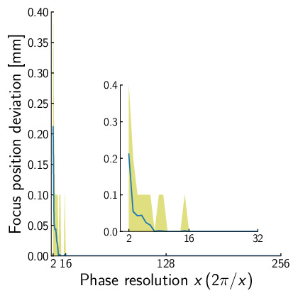

AUTD3について
AUTD3は空中触覚用超音波フェーズドアレイデバイスである. 超音波フェーズドアレイとは, 位相を個別に制御できる超音波振動子を (典型的には格子状に) 配列したものである. 超音波の位相を制御することで, 空間に任意の音場を発生させることができる.
フェーズドアレイを用いて十分に集束させた音波のエネルギーは, 音響放射圧を生じる. この圧力を利用して, 人体の表面を非接触で押すことができる. 集束焦点の位置は, フェーズドアレイを電子的に制御することで自由に制御できる. また, 逆問題を解くことで, 単一の焦点だけでなく, より複雑な音圧空間分布を作ることもできる.
フェーズドアレイで生成できる圧力の大きさの上限は, 現在のところ約である. また, 空間分解能は使用する波長程度までとなる (例えば, で約). フェーズドアレイにはこのような制約はあるものの, 力の時空間分布を自由にデザインし, さまざまな触覚を作り出すことができる技術として注目されている.
このように非接触で触覚を刺激する技術分野を空中触覚 (Midair Haptics) と呼び, 我々はこの超音波空中触覚装置をAirborne Ultrasound Tactile Display (AUTD) と呼んでいる. AUTDの本質的な部分は, 2008年1から2010年代初頭2にかけて, 東京大学によって提案・確立された. その後, 各国の大学や企業が参入し, 活発な研究開発が行われている. AUTD3は我々東京大学篠田牧野研究室で開発しているAUTDの3代目のバージョンである.
研究室のホームページにAUTDを使った研究の一覧が掲載されている. こちらも参照されたい.
本マニュアルはこのAUTD3を操作するためのautd3ソフトウェアライブラリについてまとめたものである.
-
Takayuki Iwamoto, Mari Tatezono, and Hiroyuki Shinoda: Non-contact Method for Producing Tactile Sensation Using Airborne Ultrasound, Haptics: Perception, Devices and Scenarios: 6th International Conference, Eurohaptics 2008 Proceedings (Lecture Notes in Computer Science), pp.504-513, 2008. ↩
-
Takayuki Hoshi, Masafumi Takahashi, Takayuki Iwamoto, and Hiroyuki Shinoda: Noncontact Tactile Display Based on Radiation Pressure of Airborne Ultrasound, IEEE Trans. on Haptics, Vol. 3, No. 3, pp.155-165, 2010. ↩
はじめに
ここではまず, AUTD3のハードウェアやファームウェア, ソフトウェアのセットアップについて述べる.
ハードウェア
AUTD3デバイス
AUTD3デバイスは1台あたり249個の振動子から構成されている1. さらに, 復数のデバイスをデイジーチェインで接続し拡張できるようになっている. SDKからはこれら全ての振動子の位相/振幅をそれぞれ個別に指定できるようになっている.

AUTD3の座標系は右手座標系を採用しており, 0番目の振動子の中心が原点になる. x軸は長軸方向, すなわち, 0→17の方向であり, y軸は0→18の方向である.
また, 単位系として, 距離はmmを採用している. 振動子はの間隔で配置されており, 基板を含めたサイズはとなっている.
セットアップ
PCと1台目のEherCAT In をイーサネットケーブルを繋ぎ, 台目のEherCAT Outと台目のEherCAT Inを繋ぐ. この時, イーサネットケーブルはCAT 5e以上のものを使用すること.
AUTD3の電源はの直流電源を使用する. 電源については相互に接続でき, 電源コネクタは3つの内で好きなところを使って良い. なお, AUTD3デバイス側の電源のコネクタはMolex社5566-02Aを使用している.
NOTE: AUTD3はデバイスあたり最大での電流を消費する. 電源の最大出力電流に注意されたい.
寸法図
-
からネジ用に3つの振動子が抜けている. 態々この位置にネジ穴を持ってきたのは, 複数台並べたときの隙間を可能な限り小さくしようとしたため. ↩
ファームウェア
ファームウェアのアップデートにはVivado, 及び, J-Link SoftwareをインストールしたWindows 10/11 64bit PCが必要である. なお, Vivado 2025.1, 及び, J-Link Software v8.10での動作を確認している.
NOTE: ファームウェアのアップデートだけが目的であれば, “Vivado Lab Edition“の使用を強く推奨する. ML Edition はインストールに60 GB以上のディスク容量を要求する. Lab Edition は6 GB程度のディスク容量で済む.
NOTE: 古いJ-Linkデバイスを使用する場合, “Install legacy USB Driver for J-Link (requires admin rights)“にチェックを入れること. 例えば, J-Link Plusの場合, V10以前はlegacy USB Driverが必要になる. (バージョンはJ-Link Plusデバイスの背面に書かれている.) 詳しくはSegger Wikiを参照されたい. 使用しているデバイスにWinUSB featureがあれば, legacy USB Driverは不要.
まず, AUTD3デバイスとPCをXILINX Platform Cable, 及び, J-Link 9-Pin Cortex-M Adapter付きのJ-Link Plusで接続し, AUTD3の電源を入れる.
次に, autd3-firmware内のautd_firmware_writer.ps1をpowershellから実行し, 指示に従えばよい. updateには数分の時間を要する.
git clone https://github.com/shinolab/autd3-firmware
cd autd3-firmware
pwsh autd_firmware_writer.ps1

ソフトウェア
基本的に各言語の標準的なパッケージマネージャーに対応している.
CMakeのFetchContentを使用してインストールできる.
また, 依存ライブラリのダウンロードにgitを使用するので, これもインストールしておくこと.
- autd3
- Windows: https://github.com/shinolab/autd3-cpp/releases/download/v38.0.1/autd3-v38.0.1-win-x64.zip
- macOS: https://github.com/shinolab/autd3-cpp/releases/download/v38.0.1/autd3-v38.0.1-macos-aarch64.tar.gz
- Linux: https://github.com/shinolab/autd3-cpp/releases/download/v38.0.1/autd3-v38.0.1-linux-x64.tar.gz
- autd3-link-ethercrab
- Windows: https://github.com/shinolab/autd3-cpp-link-ethercrab/releases/download/v38.0.1/autd3-link-ethercrab-v38.0.1-win-x64.zip
- macOS: https://github.com/shinolab/autd3-cpp-link-ethercrab/releases/download/v38.0.1/autd3-link-ethercrab-v38.0.1-macos-aarch64.tar.gz
- Linux: https://github.com/shinolab/autd3-cpp-link-ethercrab/releases/download/v38.0.1/autd3-link-ethercrab-v38.0.1-linux-x64.tar.gz
NuGetで公開している.
Unity Package Manager経由でインストール可能. 以下のリポジトリを追加する.
- AUTD3Sharp: https://github.com/shinolab/AUTD3Sharp.git#upm/latest
- AUTD3Sharp.Link.EtherCrab: https://github.com/shinolab/AUTD3Sharp.Link.EtherCrab.git#upm/latest
PyPIで公開している.
チュートリアル
ここでは, 実際にAUTD3を動かす手順とコンセプト, 簡単な使用例について述べる.
単一デバイスの駆動
ここでは, 一つのデバイスを駆動する方法について説明する.
依存プログラムのインストール
本チュートリアルではEtherCrabを利用する. Windowsを使用する場合, Npcapを「WinPcap API-compatible Mode」でインストールしておくこと.
なお, ファームウェアが古い場合, 正常な動作は保証されない. 本文章におけるファームウェアのバージョンはv12.1.0が想定される. ファームウェアのアップデートははじめに/ファームウェアを参照されたい.
サンプルコード
まずは適当なプロジェクトを作成し, autd3ライブラリを依存関係に追加する.
また, デバイスとの通信を行うautd3-link-ethercrabライブラリも依存関係に追加する.
cargo new --bin autd3-sample
cd autd3-sample
cargo add autd3
cargo add autd3-link-ethercrab
次に, src/main.rsファイルを編集し, 以下のようにする.
これは単一焦点にのAM変調をかける場合のソースコードである.
use autd3::prelude::*;
use autd3_link_ethercrab::{EtherCrab, EtherCrabOption};
fn main() -> Result<(), Box<dyn std::error::Error>> {
// Open controller with EtherCrab link
// Here, the AUTD3 device is placed at the origin
let mut autd = Controller::open(
[AUTD3 {
pos: Point3::origin(),
rot: UnitQuaternion::identity(),
}],
EtherCrab::new(
// The first argument is a callback that is called when error occurs
|idx, status| {
eprintln!("Device[{}]: {}", idx, status);
},
// The second argument is a option of EtherCrab link, here we use default option
EtherCrabOption::default(),
),
)?;
// Check firmware version
// This code assumes that the version is v12.1.0
autd.firmware_version()?.iter().for_each(|firm_info| {
println!("{}", firm_info);
});
// Enable silencer
// Note that this is enabled by default, so it is not actually necessary
// To disable, send Silencer::disable()
autd.send(Silencer::default())?;
// A focus at 150mm directly above the center of the device
let g = Focus {
pos: autd.center() + Vector3::new(0., 0., 150.0 * mm),
option: FocusOption::default(),
};
// 150 Hz sine wave modulation
let m = Sine {
freq: 150 * Hz,
option: SineOption::default(),
};
// Send data
autd.send((m, g))?;
println!("press enter to quit...");
let mut _s = String::new();
std::io::stdin().read_line(&mut _s)?;
// Close controller
autd.close()?;
Ok(())
}そして, これを実行する.
cargo run --release
Linux,macOS使用時の注意
Linux, macOSでは, EtherCrabを使用するのに管理者権限が必要になるかもしれない. その場合は,
cargo build --release && sudo ./target/release/autd3_sample
とすること.
依存プログラムのインストール
本チュートリアルではCMakeを使用するので, インストールしておくこと.
また, 依存ライブラリのダウンロードにgitを使用するので, これもインストールしておくこと.
AUTD3クライアントプログラムの作成
まず, ターミナルを開き, 適当なディレクトリを用意する.
mkdir autd3-sample
cd autd3-sample
次に, autd3-sample以下にCMakeLists.txt, main.cppファイルを作成する.
└─autd3-sample
CMakeLists.txt
main.cpp
次に, CMakeLists.txtを以下のようにする.
cmake_minimum_required(VERSION 3.21)
project(autd3-sample)
set(CMAKE_CXX_STANDARD 23)
set(CMAKE_CXX_STANDARD_REQUIRED ON)
set(CMAKE_CXX_EXTENSIONS OFF)
if(${CMAKE_VERSION} VERSION_GREATER_EQUAL "3.24.0")
cmake_policy(SET CMP0135 NEW)
endif()
include(FetchContent)
if(WIN32)
FetchContent_Declare(
autd3
URL https://github.com/shinolab/autd3-cpp/releases/download/v38.0.1/autd3-v38.0.1-win-x64.zip
)
elseif(APPLE)
FetchContent_Declare(
autd3
URL https://github.com/shinolab/autd3-cpp/releases/download/v38.0.1/autd3-v38.0.1-macos-aarch64.tar.gz
)
else()
FetchContent_Declare(
autd3
URL https://github.com/shinolab/autd3-cpp/releases/download/v38.0.1/autd3-v38.0.1-linux-x64.tar.gz
)
endif()
if(WIN32)
FetchContent_Declare(
autd3-link-ethercrab
URL https://github.com/shinolab/autd3-cpp-link-ethercrab/releases/download/v38.0.1/autd3-link-ethercrab-v38.0.1-win-x64.zip
)
elseif(APPLE)
FetchContent_Declare(
autd3-link-ethercrab
URL https://github.com/shinolab/autd3-cpp-link-ethercrab/releases/download/v38.0.1/autd3-link-ethercrab-v38.0.1-macos-aarch64.tar.gz
)
else()
FetchContent_Declare(
autd3-link-ethercrab
URL https://github.com/shinolab/autd3-cpp-link-ethercrab/releases/download/v38.0.1/autd3-link-ethercrab-v38.0.1-linux-x64.tar.gz
)
endif()
set(USE_SYSTEM_EIGEN OFF)
FetchContent_MakeAvailable(autd3 autd3-link-ethercrab)
add_executable(main main.cpp)
target_link_libraries(main PRIVATE autd3::autd3 autd3::link::ethercrab)
NOTE: 上記の例では, 依存ライブラリ (Eigen3) を自動的にダウンロードするようになっている. すでにEigen3がインストールされている場合,
USE_SYSTEM_EIGENをONにすると, 自動ダウンロードを無効化し, インストール済みのものを使用できる.
また, main.cppを以下のようにする. これは単一焦点にのAM変調をかける場合のソースコードである.
#include <iostream>
#include "autd3.hpp"
#include "autd3_link_ethercrab.hpp"
using namespace autd3;
int main() try {
auto autd =
Controller::open({AUTD3{
.pos = Point3::origin(),
.rot = Quaternion::Identity(),
}},
link::EtherCrab(
[](const uint16_t idx, const link::Status status) {
std::cout << std::format("Device[{}]: ", idx)
<< status << std::endl;
},
link::EtherCrabOption{}));
for (auto&& firm : autd.firmware_version()) std::cout << firm << std::endl;
autd.send(Silencer{});
Focus g(autd.center() + Vector3(0, 0, 150), FocusOption{});
Sine m(150 * Hz, SineOption{});
autd.send((m, g));
std::cout << "press enter to finish..." << std::endl;
std::cin.ignore();
autd.close();
return 0;
} catch (std::exception& ex) {
std::cerr << ex.what() << std::endl;
}
次に, CMakeでビルドする.
mkdir build
cd build
cmake .. -DCMAKE_BUILD_TYPE=Release
cmake --build . --config Release
これで, 実行ファイルが生成されるので, これを実行する.
.\Release\main.exe
sudo ./main
トラブルシューティング
- anaconda (miniconda) がactivateされている場合に, ビルドエラーになる可能性がある.
- この場合,
buildディレクトリを削除し,conda deactivateを実行したのち再びcmakeを実行する.
- この場合,
まず, ターミナルを開き, 適当なプロジェクトを作成し, AUTD3Sharpライブラリを追加する.
dotnet new console --name autd3-sample
cd autd3-sample
dotnet add package AUTD3Sharp
dotnet add package AUTD3Sharp.Link.EtherCrab
次に, Program.csを以下のようにする.
これは単一焦点にのAM変調をかける場合のソースコードである.
using AUTD3Sharp;
using AUTD3Sharp.Utils;
using AUTD3Sharp.Link;
using AUTD3Sharp.Gain;
using AUTD3Sharp.Modulation;
using static AUTD3Sharp.Units;
using var autd = Controller.Open(
[new AUTD3(pos: Point3.Origin, rot: Quaternion.Identity)],
new EtherCrab(
(idx, status) =>
{
Console.Error.WriteLine($"Device[{idx}]: {status}");
},
new EtherCrabOption()
)
);
var firmList = autd.FirmwareVersion();
foreach (var firm in firmList)
Console.WriteLine(firm);
autd.Send(new Silencer());
var g = new Focus(
pos: autd.Center() + new Vector3(0, 0, 150),
option: new FocusOption()
);
var m = new Sine(
freq: 150u * Hz,
option: new SineOption()
);
autd.Send((m, g));
Console.ReadKey(true);
autd.Close();
そして, これを実行する.
dotnet run -c:Release
Linux,macOS使用時の注意
Linux, macOSでは管理者権限が必要な場合がある. その場合は,
sudo dotnet run -c:Release
とすること.
pyautd3ライブラリのインストール
pip install pyautd3
pip install pyautd3_link_ethercrab
次に, main.pyを作成し, 以下のようにする.
これは単一焦点にのAM変調をかける場合のソースコードである.
import numpy as np
from pyautd3 import (
AUTD3,
Controller,
Focus,
FocusOption,
Hz,
Silencer,
Sine,
SineOption,
)
from pyautd3_link_ethercrab import EtherCrab, EtherCrabOption, Status
def err_handler(idx: int, status: Status) -> None:
print(f"Device[{idx}]: {status}")
if __name__ == "__main__":
with Controller.open(
[AUTD3(pos=[0.0, 0.0, 0.0], rot=[1, 0, 0, 0])],
EtherCrab(err_handler=err_handler, option=EtherCrabOption()),
) as autd:
firmware_version = autd.firmware_version()
print(
"\n".join(
[f"[{i}]: {firm}" for i, firm in enumerate(firmware_version)],
),
)
autd.send(Silencer())
g = Focus(
pos=autd.center() + np.array([0.0, 0.0, 150.0]),
option=FocusOption(),
)
m = Sine(
freq=150 * Hz,
option=SineOption(),
)
autd.send((m, g))
_ = input()
autd.close()
そして, これを実行する.
python main.py
Linux使用時の注意
Linuxでは, 管理者権限が必要になる場合がある. その場合は,
sudo setcap cap_net_raw,cap_net_admin=eip <your python path>
とした後, main.pyを実行する.
python main.py
macOS使用時の注意
macOSでは, 管理者権限が必要になる場合がある. その場合は,
sudo chmod +r /dev/bpf*
とした後, main.pyを実行する.
python main.py
複数デバイスの接続
AUTD3は複数のデバイスをデイジーチェーン接続して大きな一つのアレイを構成することができる. SDKは複数台を接続したとしても, 透過的に使用できるように設計されている.
SDKで複数台のデバイスを使用する場合はController::open関数の第1引数で接続したデバイスの順にAUTD3構造体を指定する必要がある.
ハードウェアの接続方法ははじめに/ハードウェアを参照されたい.
以下では, 2つのデバイスを接続する場合の手順を示す.
並進のみ

例えば, 上図のように配置・接続しており, 図左側のデバイスが1台目, 右側のデバイスが2台目だとする. さらに, グローバル座標を1台目のローカル座標と同じようにとるとすると, コードは以下の通りになる.
use autd3::prelude::*;
fn main() -> Result<(), Box<dyn std::error::Error>> {
let link = autd3::link::Nop::new();
let _ =
Controller::open(
[
AUTD3 {
pos: Point3::origin(),
rot: UnitQuaternion::identity(),
},
AUTD3 {
pos: Point3::new(AUTD3::DEVICE_WIDTH, 0., 0.),
rot: UnitQuaternion::identity(),
},
],
link,
)?;
Ok(())
}#include<chrono>
#include<autd3.hpp>
#include<autd3/link/nop.hpp>
int main() {
using namespace autd3;
link::Nop link;
Controller::open({AUTD3{
.pos = Point3::origin(),
.rot = Quaternion::Identity(),
},
AUTD3{
.pos = Point3(AUTD3::DEVICE_WIDTH, 0, 0),
.rot = Quaternion::Identity(),
}},
std::move(link));
return 0; }
using AUTD3Sharp;
using AUTD3Sharp.Link;
using AUTD3Sharp.Utils;
var link = new Nop();
Controller.Open([
new AUTD3(pos: Point3.Origin, rot: Quaternion.Identity),
new AUTD3(pos: new Point3(AUTD3.DeviceWidth, 0, 0), rot: Quaternion.Identity)
], link)
;
from pyautd3 import AUTD3, Controller
from pyautd3.link.nop import Nop
link = Nop()
Controller.open(
[
AUTD3(pos=[0.0, 0.0, 0.0], rot=[1, 0, 0, 0]),
AUTD3(pos=[AUTD3.DEVICE_WIDTH, 0.0, 0.0], rot=[1, 0, 0, 0]),
],
link,
)
ここで, posはグローバル座標におけるデバイスの位置を表す.
なお, AUTD3::DEVICE_WIDTHはデバイスの (基板外形を含めた) 横幅である.
グローバル座標の設定
SDKで使用するグローバル座標の原点や向きは, ユーザーが自由に設定できる.

例えば, 上図のように, グローバル座標を2台目のローカル座標と同じようにとると, コードは以下の通りになる.
use autd3::prelude::*;
fn main() -> Result<(), Box<dyn std::error::Error>> {
let link = autd3::link::Nop::new();
let _ =
Controller::open(
[
AUTD3 {
pos: Point3::new(-AUTD3::DEVICE_WIDTH, 0., 0.),
rot: UnitQuaternion::identity(),
},
AUTD3 {
pos: Point3::origin(),
rot: UnitQuaternion::identity(),
},
],
link,
)?;
Ok(())
}#include<chrono>
#include<autd3.hpp>
#include<autd3/link/nop.hpp>
int main() {
using namespace autd3;
link::Nop link;
Controller::open(
{
AUTD3{
.pos = Point3(-AUTD3::DEVICE_WIDTH, 0, 0),
.rot = Quaternion::Identity(),
},
AUTD3{
.pos = Point3::origin(),
.rot = Quaternion::Identity(),
},
},
std::move(link));
return 0; }
using AUTD3Sharp;
using AUTD3Sharp.Link;
using AUTD3Sharp.Utils;
var link = new Nop();
Controller.Open([
new AUTD3(pos: new Point3(-AUTD3.DeviceWidth, 0, 0), rot: Quaternion.Identity),
new AUTD3(pos: Point3.Origin, rot: Quaternion.Identity)
], link)
;
from pyautd3 import AUTD3, Controller
from pyautd3.link.nop import Nop
link = Nop()
Controller.open(
[
AUTD3(pos=[-AUTD3.DEVICE_WIDTH, 0.0, 0.0], rot=[1, 0, 0, 0]),
AUTD3(pos=[0.0, 0.0, 0.0], rot=[1, 0, 0, 0]),
],
link,
)
並進と回転
デバイスの回転を指定する場合はrotで指定する.
ここで回転はオイラー角, または, クオータニオンで指定する.

例えば, 上図のように配置されており, 下が1台目, 左が2台目で, グローバル座標を1台目のローカル座標と同じだとすると, コードは以下の通りになる.
use autd3::prelude::*;
fn main() -> Result<(), Box<dyn std::error::Error>> {
let link = autd3::link::Nop::new();
let _ =
Controller::open(
[
AUTD3 {
pos: Point3::origin(),
rot: UnitQuaternion::identity(),
},
AUTD3 {
pos: Point3::new(0., 0., AUTD3::DEVICE_WIDTH),
rot: EulerAngle::ZYZ(0. * rad, PI/2.0 * rad, 0. * rad).into(),
},
],
link,
)?;
Ok(())
}#include<chrono>
#include<autd3.hpp>
#include<autd3/link/nop.hpp>
int main() {
using namespace autd3;
link::Nop link;
Controller::open({AUTD3{
.pos = Point3::origin(),
.rot = Quaternion::Identity(),
},
AUTD3{
.pos = Point3(0, 0, AUTD3::DEVICE_WIDTH),
.rot = EulerAngles::ZYZ(0. * rad, pi / 2.0 * rad,
0. * rad),
}},
std::move(link));
return 0; }
using System;
using AUTD3Sharp;
using AUTD3Sharp.Link;
using AUTD3Sharp.Utils;
using static AUTD3Sharp.Units;
var link = new Nop();
Controller.Open([
new AUTD3(pos: Point3.Origin, rot: Quaternion.Identity),
new AUTD3(
pos: new Point3(0, 0, AUTD3.DeviceWidth),
rot: EulerAngles.Zyz(0 * rad, MathF.PI / 2 * rad, 0 * rad))
], link)
;
import numpy as np
from pyautd3 import AUTD3, Controller, EulerAngles, Nop, rad
link = Nop()
Controller.open(
[
AUTD3(pos=[0.0, 0.0, 0.0], rot=[1.0, 0.0, 0.0, 0.0]),
AUTD3(
pos=[0.0, 0.0, AUTD3.DEVICE_WIDTH],
rot=EulerAngles.ZYZ(0 * rad, np.pi / 2 * rad, 0 * rad),
),
],
link,
)
NOTE: Rust版のみ, 12種類全てのオイラー角が使用できる. それ以外の言語ではXYZ, ZYZのみ.
コンセプト
SDKを構成する主なコンポーネントは以下の通りである.
Controller- AUTD3デバイスに対する全ての操作はこれを介して行う.Geometry-Deviceのコンテナ.Device- AUTD3デバイスに対応する. デバイスが現実世界でどのように配置されているかを管理する.Transducerのコンテナ.Transducer- 振動子に対応する. 振動子が現実世界でどこにあるかを管理する.
Link- デバイスとのインターフェース.Gain- 各振動子の位相/振幅を管理する.STM- Spatio-Temporal Modulation (STM, 時空間変調) 機能を提供する. 各振動子の位相/振幅データの時間列を管理する.Modulation- AM変調機能を提供するする. 変調データの時間列を管理する.Silencer- 静音化処理を管理する.
ソフトウェアの使用方法は以下の通りである.
まず, 現実世界のAUTD3デバイスの配置を指定し, どのLinkを使用するかを決め, Controllerを開く.
次に, Controllerを介して, Gain (またはSTM), Modulation, Silencerデータをデバイスに送信する.
送信されたデータに基づいたPWM信号が振動子に印加される. 信号が生成されるまでの流れは以下の図の通りである.
{kind=link}
Gain/STMで指定された振幅データは, Modulationで指定された変調データと順次掛け合わされた後, Silencerに渡される.
Gain/STMで指定された位相データは, そのままSilencerに渡される.
Silencerは, これらのデータを静音化処理1する.
最後に, Silencerで処理された振幅/位相データに基づきPWM信号が生成され, 振動子に印加される.
なお, 振幅/位相データ, 及び, 変調データはすべてである.
焦点の移動
autd3において, Gainは送信するたびに上書きされる.
したがって, 次のようなコードを実行すると, 約1秒ごとに焦点の位置が移動する.
use autd3::prelude::*;
fn main() -> Result<(), Box<dyn std::error::Error>> {
let mut autd = Controller::open([AUTD3::default()], Nop::new())?;
autd.send(Sine {
freq: 150 * Hz,
option: SineOption::default(),
})?;
let center = autd.center() + Vector3::new(0.0, 0.0, 150. * mm);
loop {
autd.send(Focus {
pos: center + Vector3::new(20. * mm, 0.0, 0.0),
option: FocusOption::default(),
})?;
std::thread::sleep(std::time::Duration::from_secs(1));
autd.send(Focus {
pos: center - Vector3::new(20. * mm, 0.0, 0.0),
option: FocusOption::default(),
})?;
std::thread::sleep(std::time::Duration::from_secs(1));
}
}#include <chrono>
#include <thread>
#include "autd3.hpp"
#include "autd3/link/nop.hpp"
int main() {
auto autd = autd3::Controller::open({autd3::AUTD3{.pos =
autd3::Point3::origin(), .rot = autd3::Quaternion::Identity(),}},
autd3::link::Nop{});
autd.send(autd3::Sine(150 * autd3::Hz, autd3::SineOption{}));
const autd3::Point3 center = autd.center() + autd3::Vector3(0., 0., 150.);
while (true) {
autd.send(
autd3::Focus{center + autd3::Vector3(20., 0., 0.), autd3::FocusOption{}});
std::this_thread::sleep_for(std::chrono::milliseconds(1000));
autd.send(
autd3::Focus{center - autd3::Vector3(20., 0., 0.), autd3::FocusOption{}});
std::this_thread::sleep_for(std::chrono::milliseconds(1000));
}
return 0;
}
using AUTD3Sharp;
using AUTD3Sharp.Utils;
using AUTD3Sharp.Link;
using AUTD3Sharp.Gain;
using AUTD3Sharp.Modulation;
using static AUTD3Sharp.Units;
using var autd = Controller.Open([new AUTD3(pos: Point3.Origin, rot: Quaternion.Identity)], new Nop());
autd.Send(new Sine(
freq: 150u * Hz,
option: new SineOption()
));
var center = autd.Center() + new Vector3(0.0f, 0.0f, 150.0f);
while (true)
{
autd.Send(new Focus(
pos: center + new Vector3(20.0f, 0.0f, 0.0f),
option: new FocusOption()
));
Thread.Sleep(1000);
autd.Send(new Focus(
pos: center - new Vector3(20.0f, 0.0f, 0.0f),
option: new FocusOption()
));
Thread.Sleep(1000);
}
import time
import numpy as np
from pyautd3 import AUTD3, Controller, Focus, FocusOption, Hz, Sine, SineOption
from pyautd3.link.nop import Nop
autd = Controller.open([AUTD3(pos=[0.0, 0.0, 0.0], rot=[1, 0, 0, 0])], Nop())
autd.send(
Sine(
freq=150 * Hz,
option=SineOption(),
)
)
center = autd.center() + np.array([0.0, 0.0, 150.0])
while True:
autd.send(
Focus(
pos=center + np.array([20.0, 0.0, 0.0]),
option=FocusOption(),
),
)
time.sleep(1)
autd.send(
Focus(
pos=center - np.array([20.0, 0.0, 0.0]),
option=FocusOption(),
),
)
time.sleep(1)
なお, GainとModulationは独立しているので, どちらの焦点にもの正弦波AM変調がかかる.
上記のコードだとソフトウェア的にタイミングを制御している.
これの精度はOSや実行環境に依存するため, より精度の高い制御が必要な場合は, FociSTM/GainSTMを使用することをおすすめする.
FociSTMを使用して上記と同等の動作を実現するコードは以下の通りである.
use autd3::prelude::*;
fn main() -> Result<(), Box<dyn std::error::Error>> {
let mut autd = Controller::open([AUTD3::default()], Nop::new())?;
autd.send(Sine {
freq: 150 * Hz,
option: SineOption::default(),
})?;
let center = autd.center() + Vector3::new(0.0, 0.0, 150. * mm);
autd.send(FociSTM {
foci: vec![
center + Vector3::new(20. * mm, 0.0, 0.0),
center - Vector3::new(20. * mm, 0.0, 0.0),
],
config: 0.5 * Hz,
// config: std::time::Duration::from_secs(2),
// config: SamplingConfig::new(1.0 * Hz),
// config: SamplingConfig::new(std::time::Duration::from_secs(1)),
})?;
Ok(())
}#include <chrono>
#include <vector>
#include "autd3.hpp"
#include "autd3/link/nop.hpp"
int main() {
auto autd = autd3::Controller::open({autd3::AUTD3{.pos =
autd3::Point3::origin(), .rot = autd3::Quaternion::Identity(),}},
autd3::link::Nop{});
autd.send(autd3::Sine(150 * autd3::Hz, autd3::SineOption{}));
const autd3::Point3 center = autd.center() + autd3::Vector3(0., 0., 150.);
autd.send(autd3::FociSTM(
std::vector{
center + autd3::Vector3(20., 0., 0.),
center - autd3::Vector3(20., 0., 0.),
},
0.5f * autd3::Hz
// std::chrono::seconds(2)
// autd3::SamplingConfig{1.0f * autd3::Hz}
// autd3::SamplingConfig{std::chrono::seconds(1)}
));
return 0;
}
using AUTD3Sharp;
using AUTD3Sharp.Utils;
using AUTD3Sharp.Link;
using AUTD3Sharp.Gain;
using AUTD3Sharp.Modulation;
using static AUTD3Sharp.Units;
using var autd = Controller.Open([new AUTD3(pos: Point3.Origin, rot: Quaternion.Identity)], new Nop());
autd.Send(new Sine(
freq: 150u * Hz,
option: new SineOption()
));
var center = autd.Center() + new Vector3(0.0f, 0.0f, 150.0f);
autd.Send(new FociSTM(
foci: [
center + new Vector3(20.0f, 0.0f, 0.0f),
center - new Vector3(20.0f, 0.0f, 0.0f),
],
config: 0.5f * Hz
// config: Duration.FromSecs(2)
// config: new SamplingConfig(1.0f * Hz)
// config: new SamplingConfig(Duration.FromSecs(1))
));
import numpy as np
from pyautd3 import AUTD3, Controller, Hz, Sine, SineOption, FociSTM
from pyautd3.link.nop import Nop
autd = Controller.open([AUTD3(pos=[0.0, 0.0, 0.0], rot=[1, 0, 0, 0])], Nop())
autd.send(
Sine(
freq=150 * Hz,
option=SineOption(),
)
)
center = autd.center() + np.array([0.0, 0.0, 150.0])
autd.send(
FociSTM(
foci=[
center + np.array([20.0, 0.0, 0.0]),
center - np.array([20.0, 0.0, 0.0]),
],
config=0.5 * Hz,
# config=Duration.from_secs(2),
# config=SamplingConfig(1.0 * Hz),
# config=SamplingConfig(Duration.from_secs(1)),
)
)
FociSTM/GainSTMはAUTD3デバイス内部でループされるため, ソフトウェアループは必要なく, FociSTM/GainSTMの送信以降自動的に無限ループする.
また, タイミングはAUTD3デバイス内蔵のタイマーで制御されるため, 精度が高く, 解像度も最高で単位で指定できる
ただし, このタイマーの制約上, 出力不可能な周波数が存在する.
FociSTM/GainSTMの切り替えタイミングは, 1ループの周波数, または周期で指定する.
すなわち, この場合は2つの焦点でとなるので, 各焦点は出力される.
なお, SamplingConfigを使用することで, 1ループあたりではなく, サンプリング周波数, すなわち1焦点あたりの周波数や周期を指定することもできる.
したがって, 上記のコードのコメントアウト部分はすべて等価である.
静音化
焦点を高速に動かしたり, AM変調をかけたりすると可聴音ノイズが発生する. AUTD3にはこれを抑制するSilencerという機能がある. Silencerは, 振幅/位相データの急峻な変化を抑える, つまり, 位相/振幅変化を補間することで可聴音ノイズを抑制する.
Silencerはデフォルトで有効になっており, これを無効化するには以下の様にSilencer::disable()を送信すれば良い.
NOTE: 以下のコードを実行すると大きな騒音が発生するので, 実行する際は注意すること.
use autd3::prelude::*;
fn main() -> Result<(), Box<dyn std::error::Error>> {
let mut autd = Controller::open([AUTD3::default()], Nop::new())?;
autd.send(Silencer::disable())?;
let center = autd.center() + Vector3::new(0.0, 0.0, 150. * mm);
let point_num = 20;
let radius = 30.0 * mm;
autd.send(FociSTM {
foci: (0..point_num)
.map(|i| {
let theta = 2.0 * PI * i as f32 / point_num as f32;
let p = radius * Vector3::new(theta.cos(), theta.sin(), 0.0);
center + p
})
.collect::<Vec<_>>(),
config: 50.0 * Hz,
})?;
Ok(())
}#include <ranges>
#include <vector>
#include "autd3.hpp"
#include "autd3/link/nop.hpp"
using namespace std::ranges::views;
int main() {
auto autd = autd3::Controller::open({autd3::AUTD3{.pos =
autd3::Point3::origin(), .rot = autd3::Quaternion::Identity(),}},
autd3::link::Nop{});
autd.send(autd3::Silencer::disable());
const autd3::Point3 center = autd.center() + autd3::Vector3(0., 0., 150.);
constexpr auto points_num = 20;
constexpr auto radius = 30.0f;
autd.send(autd3::FociSTM(iota(0) | take(points_num) | transform([&](auto i) {
const auto theta = 2.0f * autd3::pi *
static_cast<float>(i) /
static_cast<float>(points_num);
autd3::Point3 p =
center + radius * autd3::Vector3(std::cos(theta),
std::sin(theta),
0);
return p;
}) | std::ranges::to<std::vector<autd3::Point3>>(),
50.0f * autd3::Hz));
return 0;
}
using AUTD3Sharp;
using AUTD3Sharp.Utils;
using AUTD3Sharp.Link;
using AUTD3Sharp.Gain;
using AUTD3Sharp.Modulation;
using static AUTD3Sharp.Units;
using var autd = Controller.Open([new AUTD3(pos: Point3.Origin, rot: Quaternion.Identity)], new Nop());
autd.Send(Silencer.Disable());
var center = autd.Center() + new Vector3(0.0f, 0.0f, 150.0f);
const int pointNum = 20;
const float radius = 30.0f;
new FociSTM(
foci: Enumerable.Range(0, pointNum).Select(i =>
{
var theta = 2.0f * MathF.PI * i / pointNum;
return center + radius * new Vector3(MathF.Cos(theta), MathF.Sin(theta), 0);
}),
config: 50.0f * Hz
);
import numpy as np
from pyautd3 import AUTD3, Controller, Hz, FociSTM, Silencer
from pyautd3.link.nop import Nop
autd = Controller.open([AUTD3(pos=[0.0, 0.0, 0.0], rot=[1, 0, 0, 0])], Nop())
autd.send(Silencer.disable())
center = autd.center() + np.array([0.0, 0.0, 150.0])
point_num = 20
radius = 30.0
autd.send(
FociSTM(
foci=(
center + radius * np.array([np.cos(theta), np.sin(theta), 0])
for theta in (2.0 * np.pi * i / point_num for i in range(point_num))
),
config=50.0 * Hz,
)
)
Silencer::disable()を送信する部分をコメントアウトして, ノイズの差を確認してみると良いだろう.
詳細はSilencerを参照されたいが, Silencerによってノイズは抑制されるものの, Silencerによって, ユーザが指定していない位相や振幅を出力する, あるいは, ユーザが指定した位相や振幅が出力されない可能性がある.
前者は本質的に避けられないが, 後者は避けられる場合もある.
具体的には, FociSTM/GainSTMやModulationなど, 位相/振幅が変化する間隔がわかっている場合, Silencerによる位相/振幅補間がその間隔よりも短くあれば後者の問題は起こらない.
デフォルトでは, 上記のようなユーザが指定した位相や振幅が出力されない問題を回避するように設定されている.
Silencerは振幅に対して, 位相に対しての時間をかけて補間を行い, これを超えるサンプリングレートに対してはエラーを返す.
つまり, FociSTM/GainSTMのサンプリング周期は以上, Modulationのサンプリング周期は以上である必要がある.
したがって, 例えば以下のコードは, サンプリング周期がとなるので実行時エラーとなる.
use autd3::prelude::*;
fn main() -> Result<(), Box<dyn std::error::Error>> {
let mut autd = Controller::open([AUTD3::default()], Nop::new())?;
autd.send(Silencer::default())?;
let center = autd.center() + Vector3::new(0.0, 0.0, 150. * mm);
let point_num = 40;
let radius = 30.0 * mm;
autd.send(FociSTM {
foci: (0..point_num)
.map(|i| {
let theta = 2.0 * PI * i as f32 / point_num as f32;
let p = radius * Vector3::new(theta.cos(), theta.sin(), 0.0);
center + p
})
.collect::<Vec<_>>(),
config: 50.0 * Hz,
})?;
Ok(())
}#include <ranges>
#include <vector>
#include "autd3.hpp"
#include "autd3/link/nop.hpp"
using namespace std::ranges::views;
int main() {
auto autd = autd3::Controller::open({autd3::AUTD3{.pos =
autd3::Point3::origin(), .rot = autd3::Quaternion::Identity(),}},
autd3::link::Nop{});
autd.send(autd3::Silencer());
const autd3::Point3 center = autd.center() + autd3::Vector3(0., 0., 150.);
constexpr auto points_num = 40;
constexpr auto radius = 30.0f;
autd.send(autd3::FociSTM(iota(0) | take(points_num) | transform([&](auto i) {
const auto theta = 2.0f * autd3::pi *
static_cast<float>(i) /
static_cast<float>(points_num);
autd3::Point3 p =
center + radius * autd3::Vector3(std::cos(theta),
std::sin(theta),
0);
return p;
}) | std::ranges::to<std::vector<autd3::Point3>>(),
50.0f * autd3::Hz));
return 0;
}
using AUTD3Sharp;
using AUTD3Sharp.Utils;
using AUTD3Sharp.Link;
using AUTD3Sharp.Gain;
using AUTD3Sharp.Modulation;
using static AUTD3Sharp.Units;
using var autd = Controller.Open([new AUTD3(pos: Point3.Origin, rot: Quaternion.Identity)], new Nop());
autd.Send(new Silencer());
var center = autd.Center() + new Vector3(0.0f, 0.0f, 150.0f);
const int pointNum = 40;
const float radius = 30.0f;
new FociSTM(
foci: Enumerable.Range(0, pointNum).Select(i =>
{
var theta = 2.0f * MathF.PI * i / pointNum;
return center + radius * new Vector3(MathF.Cos(theta), MathF.Sin(theta), 0);
}),
config: 50.0f * Hz
);
import numpy as np
from pyautd3 import AUTD3, Controller, Hz, FociSTM, Silencer
from pyautd3.link.nop import Nop
autd = Controller.open([AUTD3(pos=[0.0, 0.0, 0.0], rot=[1, 0, 0, 0])], Nop())
autd.send(Silencer())
center = autd.center() + np.array([0.0, 0.0, 150.0])
point_num = 40
radius = 30.0
autd.send(
FociSTM(
foci=(
center + radius * np.array([np.cos(theta), np.sin(theta), 0])
for theta in (2.0 * np.pi * i / point_num for i in range(point_num))
),
config=50.0 * Hz,
)
)
このエラーを回避する方法は以下の通りである.
- サンプリングレートを下げる.
- 最初の例のように,
point_num = 20とすれば, サンプリング周期がとなるので, エラーは発生しない.
- 最初の例のように,
Silencerの補間周期を短くする.Silencerのデフォルトの補間間隔は振幅に対して, 位相に対してであるが, これは変更できる. 例えば, 以下の例だとに設定すればエラーにならなくなる.- ただし, 補間間隔を短くするとその分ノイズが大きくなるので注意.
- なお,
Silencer::disable()は補間間隔をに設定するのと等価である.
use autd3::prelude::*;
use std::time::Duration;
fn main() -> Result<(), Box<dyn std::error::Error>> {
let mut autd = Controller::open([AUTD3::default()], Nop::new())?;
autd.send(Silencer {
config: FixedCompletionTime {
intensity: Duration::from_micros(500),
phase: Duration::from_micros(500),
strict: true,
},
})?;
let center = autd.center() + Vector3::new(0.0, 0.0, 150. * mm);
let point_num = 40;
let radius = 30.0 * mm;
autd.send(FociSTM {
foci: (0..point_num)
.map(|i| {
let theta = 2.0 * PI * i as f32 / point_num as f32;
let p = radius * Vector3::new(theta.cos(), theta.sin(), 0.0);
center + p
})
.collect::<Vec<_>>(),
config: 50.0 * Hz,
})?;
Ok(())
}#include <chrono>
#include <ranges>
#include <vector>
#include "autd3.hpp"
#include "autd3/link/nop.hpp"
using namespace std::ranges::views;
int main() {
auto autd = autd3::Controller::open({autd3::AUTD3{.pos =
autd3::Point3::origin(), .rot = autd3::Quaternion::Identity(),}},
autd3::link::Nop{});
autd.send(autd3::Silencer{
autd3::FixedCompletionTime{.intensity = std::chrono::microseconds(500),
.phase = std::chrono::microseconds(500),
.strict = true}});
const autd3::Point3 center = autd.center() + autd3::Vector3(0., 0., 150.);
constexpr auto points_num = 40;
constexpr auto radius = 30.0f;
autd.send(autd3::FociSTM(iota(0) | take(points_num) | transform([&](auto i) {
const auto theta = 2.0f * autd3::pi *
static_cast<float>(i) /
static_cast<float>(points_num);
autd3::Point3 p =
center + radius * autd3::Vector3(std::cos(theta),
std::sin(theta),
0);
return p;
}) | std::ranges::to<std::vector<autd3::Point3>>(),
50.0f * autd3::Hz));
return 0;
}
using AUTD3Sharp;
using AUTD3Sharp.Utils;
using AUTD3Sharp.Link;
using AUTD3Sharp.Gain;
using AUTD3Sharp.Modulation;
using static AUTD3Sharp.Units;
using var autd = Controller.Open([new AUTD3(pos: Point3.Origin, rot: Quaternion.Identity)], new Nop());
autd.Send(new Silencer(
config: new FixedCompletionTime
{
Intensity = Duration.FromMicros(500),
Phase = Duration.FromMicros(500),
Strict = true
}
));
var center = autd.Center() + new Vector3(0.0f, 0.0f, 150.0f);
const int pointNum = 40;
const float radius = 30.0f;
new FociSTM(
foci: Enumerable.Range(0, pointNum).Select(i =>
{
var theta = 2.0f * MathF.PI * i / pointNum;
return center + radius * new Vector3(MathF.Cos(theta), MathF.Sin(theta), 0);
}),
config: 50.0f * Hz
);
import numpy as np
from pyautd3 import AUTD3, Controller, Hz, FociSTM, Silencer, FixedCompletionTime, Duration
from pyautd3.link.nop import Nop
autd = Controller.open([AUTD3(pos=[0.0, 0.0, 0.0], rot=[1, 0, 0, 0])], Nop())
autd.send(
Silencer(
config=FixedCompletionTime(
intensity=Duration.from_micros(500),
phase=Duration.from_micros(500),
strict=True,
),
)
)
center = autd.center() + np.array([0.0, 0.0, 150.0])
point_num = 40
radius = 30.0
autd.send(
FociSTM(
foci=(
center + radius * np.array([np.cos(theta), np.sin(theta), 0])
for theta in (2.0 * np.pi * i / point_num for i in range(point_num))
),
config=50.0 * Hz,
)
)
- FixedUpdateRateを使用する.
- これを使用する場合, ユーザが指定した位相や振幅が出力されない (補間が完了する前に次のデータに移行してしまう) 可能性があるので注意.
FixedCompletionTime::strictをfalseに設定する.- これは単にエラーを無視するだけなので, 使用は推奨されない.
出力音圧の制御
AUTD3では, 出力する音圧をPWMを使用して制御している. 具体的には, Duty比と出力音圧の関係は理論上以下のように表される.
FocusなどのGainには出力強度をで制御するintensityパラメータがある.
例えば, 以下のコードでは, この強度を最大値の約半分に設定している.
use autd3::prelude::*;
fn main() {
let x = 0.0;
let y = 0.0;
let z = 0.0;
let _ =
Focus {
pos: Point3::new(x, y, z),
option: FocusOption {
intensity: Intensity(0x80),
..Default::default()
},
};
}#include<autd3.hpp>
int main() {
const auto x = 0.0;
const auto y = 0.0;
const auto z = 0.0;
autd3::Focus(autd3::Point3(x, y, z),
autd3::FocusOption{.intensity = autd3::Intensity(0x80)});
return 0; }
using AUTD3Sharp;
using AUTD3Sharp.Utils;
using AUTD3Sharp.Gain;
var x = 0.0f;
var y = 0.0f;
var z = 0.0f;
new Focus(
pos: new Point3(x, y, z),
option: new FocusOption
{
Intensity = new Intensity(0x80),
}
);
from pyautd3 import Intensity, Focus, FocusOption
x = 1.0
y = 0.0
z = 0.0
Focus(
pos=[x, y, z],
option=FocusOption(
intensity=Intensity(0x80),
),
)
デフォルトでは, このintensityパラメータと出力音圧が理論上は線形に比例するように設定されている.
具体的には, 強度パラメータ () からDuty比が以下のように計算されるように設定されている.
しかし, 実際には振動子の個体差や理論値とのズレによって, 必ずしも線形に比例するとは限らないことに注意が必要である. (ただし, その場合でも強度パラメータと音圧の関係が単調増加であることは仮定して良い.) AUTD3ではそのため, この強度パラメータとDuty比の変換式を変更し, ユーザが補正することができるようにしている.
NOTE: なお, 実際の強度パラメータとしては,
Gain等で指定する強度パラメータにModulationによる変調データ()をかけ合わせで割った値が使用される.
Segmentの使用
焦点の移動で説明したように, autd3において, Gain等は送信するたびに上書きされ, この書き込みはバッファリングされたりはしない.
そのため, (特にGain→FociSTMへの切替時などに) 意図しない中間データが出力されてしまうことがある.
これを防ぐために, AUTD3では, Gain/GainSTM/FociSTMやModulationは2つのメモリ領域 (Segmentと呼ぶ) を持っており手動でダブルバッファリングのような制御を行うことができる.
WithSegmentでデータを包むことで, 書き込むSegmentを変更することができる.
(デフォルトではSegment::S0に書き込まれる.)
use autd3::prelude::*;
fn main() {
let x = 0.0;
let y = 0.0;
let z = 0.0;
let _ =
WithSegment {
inner: Focus {
pos: Point3::new(x, y, z),
option: FocusOption {
intensity: Intensity(0x80),
..Default::default()
},
},
segment: Segment::S1,
transition_mode: transition_mode::Immediate,
};
}#include<autd3.hpp>
int main() {
using namespace autd3;
const auto x = 0.0;
const auto y = 0.0;
const auto z = 0.0;
WithSegment{Focus{Point3(x, y, z), FocusOption{.intensity = Intensity(0x80)}},
Segment::S1, transition_mode::Immediate()};
return 0; }
using AUTD3Sharp;
using AUTD3Sharp.Utils;
using AUTD3Sharp.TransitionMode;
using AUTD3Sharp.Gain;
var x = 0.0f;
var y = 0.0f;
var z = 0.0f;
new WithSegment(
inner: new Focus(
pos: new Point3(x, y, z),
option: new FocusOption
{
Intensity = new Intensity(0x80),
}
),
segment: Segment.S1,
transitionMode: new Immediate()
);
from pyautd3 import Intensity, Focus, FocusOption, WithSegment, Segment, transition_mode
x = 1.0
y = 0.0
z = 0.0
WithSegment(
inner=Focus(
pos=[x, y, z],
option=FocusOption(
intensity=Intensity(0x80),
),
),
segment=Segment.S1,
transition_mode=transition_mode.Immediate(),
)
ここで, TransitionMode::Immediateはデータの書き込み後, 直ちにSegmentを切り替えることを意味する.
transition_modeにNoneを指定すると, データの書き込みだけを行いSegmentの切り替えは行われない.
この場合は, 後にSwapSegmentを送信することで, Segmentを切り替えることができる.
詳細は, API/Segmentを参照されたい.
NOTE: なお,
Gain,GainSTM,FociSTMはメモリ領域を共有している. 例えば,Gainのデータを書き込んだあと,GainSTMのデータを書き込むと,Gainのデータは上書きされる.
Link
LinkはAUTD3デバイスとのインターフェースである. 以下の中から一つを選択する必要がある.
TwinCAT
TwinCATはPCでEherCATを使用する際の唯一の公式の方法である. TwinCATはWindowsのみをサポートする特殊なソフトウェアであり, Windowsをリアルタイム化する.
また, 特定のネットワークコントローラが求められるため, 対応するネットワークコントローラの一覧を確認すること.
Note: 或いは, TwinCATのインストール後に,
C:/TwinCAT/3.1/Driver/System/TcI8254x.infに対応するデバイスのVendor IDとDevice IDが書かれているので,「デバイスマネージャー」→「イーサネットアダプタ」→「プロパティ」→「詳細」→「ハードウェアID」と照らし合わせることでも確認できる.
上記以外のネットワークコントローラでも動作する場合があるが, その場合, 正常な動作とリアルタイム性は保証されない.
事前準備
TwinCATは仮想化ベースのセキュリティ機能が有効になっていると動かない. 仮想化ベースのセキュリティ機能が有効かどうかは「システム情報」(Win+R → msinfo32で起動できる) から確認できる.
仮想化ベースのセキュリティ機能の無効化
仮想化ベースのセキュリティ機能を無効にするにはHyper-VやVirtual Machine Platformを無効化する. これには, 例えば, PowerShellを管理者権限で起動し,
Disable-WindowsOptionalFeature -Online -FeatureName Microsoft-Hyper-V-Hypervisor
Disable-WindowsOptionalFeature -Online -FeatureName VirtualMachinePlatform
bcdedit /set hypervisorlaunchtype off
と打ち込めば良い.
また, Windows 11の場合, 仮想化ベースのセキュリティ機能もオフにする必要がある. 「Windows セキュリティ」→ 「デバイス セキュリティ」→「コア分離」→「メモリ整合性」をオフにする.
Windows 11 24H2から, レジストリでHKEY_LOCAL_MACHINE\SYSTEM\CurrentControlSet\Control\DeviceGuard\EnableVirtualizationBasedSecurityの値を0にする必要もあるかもしれない.
なお, MicrosoftアカウントでWindowsにログインしている場合, これらの設定をしても仮想化ベースのセキュリティを無効化できないという報告もある. その場合はローカルアカウントで試してほしい.
TwinCATのインストール
公式サイトを参照し, TwinCAT 3.1 Build 4024/4026をインストールする. (インストールにはmyBeckhoffアカウントの登録 (無料) が必要になる.) TwinCAT Xae Shellは64bit版をインストールすること. Visual Studio Integrationは不要.
Package Managerのインストール後, Package Managerで「TwinCAT Standard」のインストールを行えば良い.
AUTD3 Serverのインストール
TwinCATのLinkを使うには, まず, AUTD3 Serverをインストールする必要がある.
GitHubにてインストーラを配布しているので, これをダウンロードし, 指示に従ってインストールする.
NOTE: CLI版もある.
AUTD3 Serverを実行すると, 以下のような画面になるので, TwinCATタブを開く.

初回の追加作業
初回のみ, 以下の作業が必要になる.
まず, AUTD3 Serverを管理者として開き, TwinCATタブから「Copy AUTD.xml」ボタンを押す.
ここで, 「AUTD.xml is successfully copied」のようなメッセージが出れば成功である.
次に, 「Open XAE Shell」ボタンを押し, XAE Shellを開く. TwinCAT XAE Shell上部メニューから「TwinCAT」→「Show Realtime Ethernet Compatible Devices」を開き「Compatible devices」の中の対応デバイスを選択し, Installをクリックする. 「Installed and ready to use devices (realtime capable)」にインストールされたアダプタが表示されていれば成功である.
なお,「Compatible devices」に何も表示されていない場合はそのPCのイーサネットデバイスはTwinCATに対応していない. 「Incompatible devices」の中のドライバもインストール自体は可能で, インストールすると「Installed and ready to use devices (for demo use only)」と表示される. この場合, 使用できるが動作保証はない.
AUTD Serverの実行
AUTD3とPCを接続し, AUTD3の電源が入った状態で, 「Run」ボタンを押す. このとき, 「Client IP address」の欄は空白にしておくこと.
下の画面のように, AUTD3デバイスが見つかった旨のメッセージが出れば成功である.
なお, TwinCATはPCの電源を切る, スリープモードに入る等で接続が途切れるので, その都度実行し直すこと.
ライセンス
ライセンス関係のエラーが出た場合は, ライセンスを設定する. ライセンスを設定し終わったら, “TwinCAT XAE Shell“を閉じて, 再び実行する.
ライセンスを持っていない場合, 以下の方法で7日間限定のトライアルライセンスを発行できる.
トライアルライセンスの発行
XAE Shellで「Solution Explorer」→「SYSTEM」→「License」を開き, 「7 Days Trial License …」をクリックし, 画面に表示される文字を入力する.
TwinCATリンク
Install
cargo add autd3-link-twincat
target_link_libraries(<TARGET> PRIVATE autd3::link::twincat)
メインライブラリに含まれている.
メインライブラリに含まれている.
メインライブラリに含まれている.
APIs
use autd3_link_twincat::TwinCAT;
fn main() -> Result<(), Box<dyn std::error::Error>> {
let _ =
TwinCAT::new()?;
Ok(())
}#include "autd3/link/twincat.hpp"
int main() {
using namespace autd3;
link::TwinCAT();
return 0; }
using AUTD3Sharp.Link;
new TwinCAT();
from pyautd3.link.twincat import TwinCAT
TwinCAT()
トラブルシューティング
大量のデバイスを使用しようとすると, 下の図のようなエラーが発生することがある.

この場合は, AUTD3 ServerのSync0 cycle timeとSend task cycle timeの値を増やし, AUTD Serverを再び実行する.
これらのオプションの値はデフォルトでそれぞれになっている.
どの程度の値にすればいいかは接続する台数による. エラーが出ない中で可能な限り小さな値が望ましい. 例えば, 9台の場合は–程度の値にしておけば動作するはずである.
EtherCrab
NOTE: TwinCATが使用可能な環境では, 基本的にTwinCATを使用することを推奨する.
このリンクはオープンソースのEtherCAT MasterライブラリであるEtherCrabを利用したリンクである.
Windowsの場合は, npcapを「WinPcap API compatible mode」でインストールしておくこと. Linux/macOSの場合は, 特に準備は必要ない.
Install
cargo add autd3-link-ethercrab
target_link_libraries(<TARGET> PRIVATE autd3::link::ethercrab)
メインライブラリに含まれている.
メインライブラリに含まれている.
メインライブラリに含まれている.
APIs
第1引数にはエラーが起きたときのコールバック関数を, 第2引数にはオプションを指定する.
use autd3_link_ethercrab::{EtherCrab, EtherCrabOption};
use std::time::Duration;
fn main() {
let _ =
EtherCrab::new(
|idx, status| {
eprintln!("Device[{}]: {}", idx, status);
},
EtherCrabOption {
ifname: None,
state_check_period: Duration::from_millis(100),
sync0_period: Duration::from_millis(2),
sync_tolerance: Duration::from_micros(1),
sync_timeout: Duration::from_secs(10),
},
);
}NOTE:
EtherCrabOptionFullでより詳細なオプションを指定することも可能.
#include <iostream>
#include <autd3_link_ethercrab.hpp>
int main() {
using namespace autd3;
link::EtherCrab(
[](const uint16_t idx, const link::Status status) {
std::cout << "Device[" << idx << "]: " << status << std::endl;
},
link::EtherCrabOption{
.ifname = std::nullopt,
.state_check_period = std::chrono::milliseconds(100),
.sync0_period = std::chrono::milliseconds(2),
.sync_tolerance = std::chrono::microseconds(1),
.sync_timeout = std::chrono::seconds(10),
});
return 0; }
using AUTD3Sharp;
using AUTD3Sharp.Link;
using AUTD3Sharp.Utils;
new EtherCrab(
errHandler: (idx, status) =>
{
Console.Error.WriteLine($"Device[{idx}]: {status}");
},
option: new EtherCrabOption
{
Ifname = null,
StateCheckPeriod = Duration.FromMillis(100),
Sync0Period = Duration.FromMillis(2),
SyncTolerance = Duration.FromMicros(1),
SyncTimeout = Duration.FromSecs(10),
}
);
from pyautd3 import Duration
from pyautd3_link_ethercrab import (
EtherCrab,
EtherCrabOption,
Status,
)
def err_handler(idx: int, status: Status) -> None:
print(f"Device[{idx}]: {status}")
EtherCrab(
err_handler=err_handler,
option=EtherCrabOption(
ifname=None,
state_check_period=Duration.from_millis(100),
sync0_period=Duration.from_millis(2),
sync_tolerance=Duration.from_micros(1),
sync_timeout=Duration.from_secs(10),
),
)
EtherCrabリンクで指定できるオプションは以下の通りである.
デフォルト値は上記の通り.
ifname: ネットワークインタフェース名.Noneの場合はAUTD3デバイスが接続されているネットワークインタフェースを自動的に選択する.state_check_period: エラーが出ているかどうかを確認する間隔sync0_period: 同期信号の周期- 大量のデバイスを接続すると挙動が不安定になる場合がある. このときは,
sync0_periodの値を増やす. これら値はエラーが出ない中で, 可能な限り小さな値が望ましい. どの程度の値にすべきかは接続している台数に依存する.
- 大量のデバイスを接続すると挙動が不安定になる場合がある. このときは,
sync_tolerance: 同期許容レベル. 初期化時, 各デバイスのシステム時間差がこの値以下になるまで待機する. 以下のタイムアウト時間が経過しても同期が完了しない場合はエラーとなる. この値を変更することは推奨されない.sync_timeout: 同期タイムアウト. 上記のシステム時間差測定のタイムアウト時間.
Remote
Remote linkはリモートサーバ, あるいは, AUTDシミュレータに接続する際に使うLinkである.
Install
cargo add autd3-link-remote
target_link_libraries(<TARGET> PRIVATE autd3::link::remote)
メインライブラリに含まれている.
メインライブラリに含まれている.
メインライブラリに含まれている.
APIs
RemoteのコンストラクタにはサーバのIPアドレスとポート番号を指定する.
オプションでタイムアウトを指定できる.
use autd3_link_remote::{Remote, RemoteOption};
fn main() -> Result<(), Box<dyn std::error::Error>> {
let _ =
Remote::new("127.0.0.1:8080".parse()?, RemoteOption { timeout: None });
Ok(())
}#include <optional>
#include "autd3/link/remote.hpp"
int main() {
using namespace autd3;
link::Remote("127.0.0.1:8080", link::RemoteOption{.timeout = std::nullopt});
return 0; }
using System.Net;
using AUTD3Sharp.Link;
new Remote(new IPEndPoint(IPAddress.Parse("127.0.0.1"), 8080), new RemoteOption
{
Timeout = null,
});
from pyautd3.link.remote import Remote, RemoteOption
Remote("127.0.0.1:8080", RemoteOption(timeout=None))
RemoteTwinCAT
NOTE: このリンクはRustからのみ使用可能である. 同等の機能が
Remoteで提供されている.
前述の通り, AUTD3とTwinCATを使う場合はWindows OSと特定のネットワークアダプタが必要になる.
Windows以外のPCで開発したい場合は, RemoteTwinCAT linkを用いてLinux/macOSから遠隔でTwinCATを操作することができる.
Install
cargo add autd3-link-twincat --features remote
セットアップ
RemoteTwinCATを使用する場合はPCを2台用意する必要がある.
この時, 片方のPCはTwinCATが使えるPCである必要がある.
このPCをここでは“サーバ“と呼ぶ.
一方, 開発側のPC, 即ちSDKを使用する側は特に制約はなく, サーバと同じLANに繋がっていれば良い, こちらをここでは“クライアント“と呼ぶ.
まず, サーバとAUTDデバイスを接続する.
この時使うLANのアダプタはTwinCATと同じく, TwinCAT対応のアダプタである必要がある.
また, サーバとクライアントを別のLANで繋ぐ.
こちらのLANアダプタはTwinCAT対応である必要はない1.
そして, サーバとクライアント間のLANのIPを確認しておく.
ここでは例えば, サーバ側が172.16.99.104, クライアント側が172.16.99.62だったとする.
次に, サーバでAUTD Serverを起動する.
この時, Client IP addressにクライアントのIPアドレス (この例だと172.16.99.62) を指定する.

右側の画面に, 「Server AmsNetId」と「Client AmsNetId」が表示されるので, これをメモっておく.
NOTE: 「Server AmsNetId」の最初の4桁は必ずしもServerのIPアドレスを意味しているわけではないので注意されたい.
APIs
RemoteTwinCATのコンストラクタにはServerのIPアドレスとAmsNetIdを指定する.
また, オプションでタイムアウトとソースアドレスを指定できる.
use autd3_link_twincat::{RemoteTwinCAT, RemoteTwinCATOption, Source, Timeouts};
fn main() -> Result<(), Box<dyn std::error::Error>> {
let _ =
RemoteTwinCAT::new(
"0.0.0.0".parse()?,
"1.1.1.1.1.1".parse()?,
RemoteTwinCATOption {
timeouts: Timeouts::none(),
source: Source::Auto,
},
);
Ok(())
}ファイアウォール
TCP関係のエラーが出る場合は, ファイアウォールでADSプロトコルがブロックされている可能性がある. その場合は, ファイアウォールの設定でTCP/UDPの48898番ポートの接続を許可する.
-
無線LANでも可 ↩
SOEM
NOTE: このリンクはRustからのみ使用可能である.
NOTE: このリンクはGPLv3ライセンスで配布されている.
SOEMは有志が開発しているオープンソースのEherCAT Masterライブラリである. TwinCATとは異なりリアルタイム性は保証されない. そのため, 基本的にTwinCATを使用することを推奨する. SOEMを使用するのはやむを得ない理由があるか, 開発時のみに限定するべきである. 一方, SOEMはクロスプラットフォームで動作し, インストールも単純という利点がある.
Windowsの場合は, npcapを「WinPcap API compatible mode」でインストールしておくこと. Linux/macOSの場合は, 特に準備は必要ない.
Install
cargo add autd3-link-soem
APIs
第1引数にはエラーが起きたときのコールバック関数を, 第2引数にはオプションを指定する.
use autd3_link_soem::{Status, SOEM, SOEMOption};
use std::time::Duration;
fn main() {
let _ =
SOEM::new(
|slave, status| {
eprintln!("slave [{}]: {}", slave, status);
if status == Status::Lost {
std::process::exit(-1);
}
},
SOEMOption {
ifname: None,
state_check_interval: Duration::from_millis(100),
sync0_cycle: Duration::from_millis(1),
sync_tolerance: Duration::from_micros(1),
sync_timeout: Duration::from_secs(10),
},
);
}SOEMリンクで指定できるオプションは以下の通りである. デフォルト値は上記の通り.
buf_size: 送信キューバッファサイズ. 通常は変更する必要はない.ifname: ネットワークインタフェース名. 空白の場合はAUTD3デバイスが接続されているネットワークインタフェースを自動的に選択する.state_check_interval: エラーが出ているかどうかを確認する間隔sync0_cycle: 同期信号の周期send_cycle: 送信サイクルSOEMも大量のデバイスを接続すると挙動が不安定になる場合がある1. このときは,sync0_cycleとsend_cycleの値を増やす. これら値はエラーが出ない中で, 可能な限り小さな値が望ましい. どの程度の値にすべきかは接続している台数に依存する. 例えば, 9台の場合は程度の値にしておけば動作するはずである.
thread_priority: スレッドの優先度sync_tolerance: 同期許容レベル. 初期化時, 各デバイスのシステム時間差がこの値以下になるまで待機する. 以下のタイムアウト時間が経過しても同期が完了しない場合はエラーとなる. この値を変更することは推奨されない.sync_timeout: 同期タイムアウト. 上記のシステム時間差測定のタイムアウト時間.affinity: CPUアフィニティ.Noneの場合はOSに任せる.
-
TwinCATよりは緩く, 普通に動くこともある. ↩
Controller
ここでは, Controllerに存在するAPIを紹介する.
fpga_state
FPGAの状態を取得する.
これを使用する前に, ReadsFPGAStateで状態取得を有効化しておく必要がある.
use autd3::prelude::*;
#[allow(unused_variables)]
fn main() -> Result<(), Box<dyn std::error::Error>> {
let mut autd = Controller::open([AUTD3::default()], autd3::link::Nop::new())?;
autd.send(ReadsFPGAState::new(|_dev| true))?;
let info = autd.fpga_state()?;
Ok(())
}#include<autd3.hpp>
#include<autd3/link/nop.hpp>
int main() {
using namespace autd3;
auto autd =
Controller::open({AUTD3{}}, link::Nop{});
autd.send(ReadsFPGAState([](const auto&) { return true; }));
const auto info = autd.fpga_state();
return 0; }
using AUTD3Sharp;
using AUTD3Sharp.Link;
using AUTD3Sharp.Utils;
using var autd = Controller.Open([new AUTD3()], new Nop());
autd.Send(new ReadsFPGAState(_ => true));
var info = autd.FPGAState();
from pyautd3 import Controller, AUTD3, ReadsFPGAState
from pyautd3.link.nop import Nop
autd = Controller.open([AUTD3()], Nop())
autd.send(ReadsFPGAState(lambda _: True))
info = autd.fpga_state()
ReadsFPGAStateコンストラクタの引数はFn(&Device) -> boolで, デバイス毎に状態取得を有効化するかどうかを指定する.
有効化していないデバイスに対してfpga_stateはNoneを返す.
FPGAの状態としては, 現在以下の情報が取得できる.
is_thermal_assert: ファン制御用の温度センサがアサートされているかどうかcurrent_mod_segment: 現在のModulation Segmentcurrent_stm_segment: 現在のFociSTM/GainSTM Segmentcurrent_gain_segment: 現在のGain Segmentis_gain_mode: 現在Gainが使用されているかどうかis_stm_mode: 現在FociSTM/GainSTMが使用されているかどうか
send
デバイスにデータを送信する.
データは単体か2つのみ同時に送信することができる.
sender
送信時の設定をsender経由で指定できる.
use autd3::prelude::*;
use std::time::Duration;
fn main() -> Result<(), Box<dyn std::error::Error>> {
let mut autd = Controller::open([AUTD3::default()], autd3::link::Nop::new())?;
let mut sender = autd.sender(
SenderOption {
send_interval: Some(Duration::from_millis(1)),
receive_interval: Some(Duration::from_millis(1)),
timeout: None,
parallel: ParallelMode::Auto,
},
);
let d = Null {};
sender.send(d)?;
Ok(())
}#include<chrono>
#include<autd3.hpp>
#include<autd3/link/nop.hpp>
int main() {
using namespace autd3;
auto autd = Controller::open({AUTD3{}}, link::Nop{});
auto sender =
autd.sender(SenderOption{.send_interval = std::chrono::milliseconds(1),
.receive_interval = std::chrono::milliseconds(1),
.timeout = std::nullopt});
const Null d;
sender.send(d);
return 0; }
using AUTD3Sharp;
using AUTD3Sharp.Link;
using AUTD3Sharp.Gain;
using AUTD3Sharp.Utils;
using var autd = Controller.Open([new AUTD3()], new Nop());
var sender = autd.Sender(
new SenderOption
{
SendInterval = Duration.FromMillis(1),
ReceiveInterval = Duration.FromMillis(1),
Timeout = null,
}
);
var d = new Null();
sender.Send(d);
from pyautd3 import AUTD3, Controller, Duration, Null, SenderOption
from pyautd3.link.nop import Nop
autd = Controller.open([AUTD3()], Nop())
sender = autd.sender(
SenderOption(
send_interval=Duration.from_millis(1),
receive_interval=Duration.from_millis(1),
timeout=None,
),
)
d = Null()
sender.send(d)
ここで,
send_interval: 送信間隔receive_interval: 受信間隔timeout: タイムアウト時間. 詳細は送信データのチェックについてを参照parallel: 並列計算モード (Rust版のみ). 詳細は並列計算についてを参照
であり, デフォルト値は上記の通り.
なお, Controller::sendはController::default_sender_option (変更可能) とStdSleeperを使用した場合と等価である.
送信データのチェックについて
タイムアウトの値が
- 0より大きい場合, 送信データがデバイスで処理されるか, 指定したタイムアウト時間が経過するまで待機する. 送信データがデバイスで処理されたのが確認できなかった場合にエラーを返す.
- 0の場合,
send関数は送信データがデバイスで処理されたか確認できなくてもエラーを返さない.
確実にデータを送信したい場合はこれを適当な値に設定しておくことをおすすめする.
SenderOptionで指定しない場合, デフォルト値 () が使用される.
複数をまとめて送信する場合は, それぞれのデータのタイムアウト値の最大値が使用される.
並列計算について (Rust版のみ)
各データの内部での計算は, デバイス単位で並列に実行することができる.
ParallelMode::Onを指定すると並列計算を有効化, ParallelMode::Offを指定すると無効化する.
ParallelMode::Autoの場合, デバイスの数が以下に示す各データの並列計算スレッショルド値を超える場合に並列計算が有効化される.
| 並列計算スレッショルド値 | |
|---|---|
Clear/GPIOOutputs/ForceFan/PhaseCorrection/ReadsFPGAState/SwapSegment/Silencer/Synchronize/FociSTM (焦点数が4000未満)/Modulation | 18446744073709551615 |
PulseWidthEncoder/FociSTM (焦点数が4000以上)// GainSTM/Gain | CPUのコア数 |
inspect (Rustのみ)
GainやModulation, GainSTM, FociSTMの計算は並列化やメモリアロケーションを最小にするために遅延されており, 計算結果は送信フレーム内に直接構成される.
そのため, これらの計算結果を送信前に直接確認することはできない.
Controller::inspectを使用することで, 送信することなく, これらの計算結果を確認することができる.
use autd3::prelude::*;
#[allow(unused_variables)]
fn main() -> Result<(), Box<dyn std::error::Error>> {
let autd = Controller::open([AUTD3::default()], autd3::link::Nop::new())?;
let r = autd.inspect(Null {})?;
dbg!(&r[0]); // result of device 0
// &r[0] = Some(
// GainInspectionResult {
// name: "Null",
// data: [
// Drive {
// phase: 0x00,
// intensity: 0x00,
// },
// ︙
// Drive {
// phase: 0x00,
// intensity: 0x00,
// },
// ],
// segment: S0,
// transition_mode: None,
// },
// )
Ok(())
}Geometry
GeometryはAUTD3デバイスが現実世界でどのように配置されているかを管理している.
デバイス/振動子のインデックス
デバイスには接続された順に0から始まるインデックスが割り当てられる.
また, 各デバイスは個の振動子が配置されており, ローカルインデックスが割り振られている (はじめに/ハードウェアの「AUTDの表面写真」を参照).
GeometryのAPI
num_devices(): デバイスの数を取得num_transducers(): 全振動子の数を取得center(): 全振動子の中心を取得
なお, GeometryにはControllerから直接アクセスできる.
use autd3::prelude::*;
#[allow(unused_variables)]
fn main() -> Result<(), Box<dyn std::error::Error>> {
let autd = Controller::open([AUTD3::default()], autd3::link::Nop::new())?;
let num_dev = autd.num_devices();
let num_tr = autd.num_transducers();
let center = autd.center();
Ok(())
}#include<chrono>
#include<autd3.hpp>
#include<autd3/link/nop.hpp>
int main() {
using namespace autd3;
auto autd =
Controller::open({AUTD3{}}, link::Nop{});
const auto num_dev = autd.num_devices();
const auto num_tr = autd.num_transducers();
const auto center = autd.center();
return 0; }
using AUTD3Sharp;
using AUTD3Sharp.Link;
using AUTD3Sharp.Utils;
using var autd = Controller.Open([new AUTD3()], new Nop());
var numDevices = autd.NumDevices();
var numTransducers = autd.NumTransducers();
var center = autd.Center();
from pyautd3 import AUTD3, Controller
from pyautd3.link.nop import Nop
autd = Controller.open([AUTD3()], Nop())
num_devices = autd.num_devices()
num_transducers = autd.num_transducers()
center = autd.center()
Deviceの取得
GeometryはDeviceのコンテナになっており, DeviceがTransducerのコンテナになっている.
Deviceを取得するには, インデクサを使用する.
あるいは, イテレータを使用することもできる.
use autd3::prelude::*;
#[allow(unused_variables)]
fn main() -> Result<(), Box<dyn std::error::Error>> {
let autd = Controller::open([AUTD3::default()], autd3::link::Nop::new())?;
let dev = &autd[0];
for dev in &autd {
// do something
}
Ok(())
}#include<chrono>
#include<autd3.hpp>
#include<autd3/link/nop.hpp>
int main() {
using namespace autd3;
auto autd =
Controller::open({AUTD3{}}, link::Nop{});
{
auto dev = autd[0];
}
{
for (auto& dev : autd) {
// do something
}
}
return 0; }
using AUTD3Sharp;
using AUTD3Sharp.Link;
using AUTD3Sharp.Utils;
using var autd = Controller.Open([new AUTD3()], new Nop());
{
var dev = autd[0];
}
foreach (var dev in autd)
{
// do something
}
from pyautd3 import AUTD3, Controller
from pyautd3.link.nop import Nop
autd = Controller.open([AUTD3()], Nop())
dev = autd[0]
for _dev in autd:
pass
DeviceのAPI
idx(): デバイスのインデックスrotation(): デバイスの回転x_direction(): デバイスのx方向ベクトルy_direction(): デバイスのy方向ベクトルaxial_direction(): デバイスの軸方向ベクトル (振動子が向く方向)
use autd3::prelude::*;
#[allow(unused_variables)]
fn main() -> Result<(), Box<dyn std::error::Error>> {
let mut autd = Controller::open([AUTD3::default()], autd3::link::Nop::new())?;
let dev = &mut autd[0];
let idx = dev.idx();
let rotation = dev.rotation();
let x_dir = dev.x_direction();
let y_dir = dev.y_direction();
let axial_dir = dev.axial_direction();
Ok(())
}#include<chrono>
#include<autd3.hpp>
#include<autd3/link/nop.hpp>
int main() {
using namespace autd3;
auto autd =
Controller::open({AUTD3{}}, link::Nop{});
auto dev = autd[0];
const auto idx = dev.idx();
const auto rotation = dev.rotation();
const auto x_dir = dev.x_direction();
const auto y_dir = dev.y_direction();
const auto axial_dir = dev.axial_direction();
return 0; }
using AUTD3Sharp;
using AUTD3Sharp.Link;
using AUTD3Sharp.Utils;
using var autd = Controller.Open([new AUTD3()], new Nop());
var dev = autd[0];
var idx = dev.Idx();
var rotation = dev.Rotation();
var xDir = dev.XDirection();
var yDir = dev.YDirection();
var axialDir = dev.AxialDirection();
from pyautd3 import AUTD3, Controller
from pyautd3.link.nop import Nop
autd = Controller.open([AUTD3()], Nop())
dev = autd[0]
idx = dev.idx()
rotation = dev.rotation()
x_dir = dev.x_direction()
y_dir = dev.y_direction()
axial_dir = dev.axial_direction()
Transducerの取得
DeviceはTransducerのコンテナになっており, Transducerは各振動子の情報を格納している.
Transducerを取得するには, インデクサを使用する.
また, イテレータを使用することもできる.
use autd3::prelude::*;
#[allow(unused_variables)]
fn main() -> Result<(), Box<dyn std::error::Error>> {
let autd = Controller::open([AUTD3::default()], autd3::link::Nop::new())?;
let tr = &autd[0][0];
for tr in autd[0].iter() {
// do something
}
Ok(())
}#include<chrono>
#include<autd3.hpp>
#include<autd3/link/nop.hpp>
int main() {
using namespace autd3;
auto autd =
Controller::open({AUTD3{}}, link::Nop{});
{
auto tr = autd[0][0];
}
{
for (auto& tr : autd[0]) {
// do something
}
}
return 0; }
using AUTD3Sharp;
using AUTD3Sharp.Link;
using AUTD3Sharp.Utils;
using var autd = Controller.Open([new AUTD3()], new Nop());
{
var tr = autd[0][0];
}
foreach (var tr in autd[0])
{
// do something
}
from pyautd3 import AUTD3, Controller
from pyautd3.link.nop import Nop
autd = Controller.open([AUTD3()], Nop())
tr = autd[0][0]
for _tr in autd[0]:
pass
TransducerのAPI
以下の情報を取得できる.
idx(): 振動子の(ローカル)インデックスdev_idx(): 振動子が属するデバイスのインデックスposition(): 振動子の位置
use autd3::prelude::*;
#[allow(unused_variables)]
fn main() -> Result<(), Box<dyn std::error::Error>> {
let autd = Controller::open([AUTD3::default()], autd3::link::Nop::new())?;
let tr = &autd[0][0];
let idx = tr.idx();
let dev_idx = tr.dev_idx();
let position = tr.position();
Ok(())
}#include<autd3.hpp>
#include<autd3/link/nop.hpp>
int main() {
using namespace autd3;
auto autd =
Controller::open({AUTD3{}}, link::Nop{});
const auto tr = autd[0][0];
const auto idx = tr.idx();
const auto dev_idx = tr.dev_idx();
const auto position = tr.position();
return 0; }
using AUTD3Sharp;
using AUTD3Sharp.Link;
using AUTD3Sharp.Utils;
using var autd = Controller.Open([new AUTD3()], new Nop());
var tr = autd[0][0];
var trIdx = tr.Idx();
var devIdx = tr.DevIdx();
var position = tr.Position();
from pyautd3 import AUTD3, Controller
from pyautd3.link.nop import Nop
autd = Controller.open([AUTD3()], Nop())
tr = autd[0][0]
idx = tr.idx()
dev_idx = tr.dev_idx()
position = tr.position()
Environment
EnvironmentはAUTD3デバイスがおかれている現実世界の環境を表す.
EnvironmentにはControllerのenvironmentメンバからアクセスできる.
EnvironmentのAPI
sound_speed: 音速の取得/設定. 単位はmm/s. 位相計算などに使用されるため, 可能な限り現実に即した値を設定することをおすすめする. デフォルトの音速はとなっており, これは, およそ摂氏15度での空気の音速に相当する.set_sound_speed_from_temp(temp): 温度temp[℃]から音速を設定.wavelength(): 超音波の波長wavenumber(): 超音波の波数
use autd3::prelude::*;
#[allow(unused_variables)]
fn main() -> Result<(), Box<dyn std::error::Error>> {
let mut autd = Controller::open([AUTD3::default()], autd3::link::Nop::new())?;
autd.environment.sound_speed = 340e3;
autd.environment.set_sound_speed_from_temp(15.);
let wavelength = autd.environment.wavelength();
let wavenumber = autd.environment.wavenumber();
Ok(())
}#include<autd3.hpp>
#include<autd3/link/nop.hpp>
int main() {
using namespace autd3;
auto autd =
Controller::open({AUTD3{}}, link::Nop{});
const float sound_speed = autd.environment.sound_speed;
autd.environment.sound_speed = 340e3;
autd.environment.set_sound_speed_from_temp(15.);
const auto wavelength = autd.environment.wavelength();
const auto wavenumber = autd.environment.wavenumber();
return 0; }
using AUTD3Sharp;
using AUTD3Sharp.Link;
using var autd = Controller.Open([new AUTD3()], new Nop());
autd.Environment.SoundSpeed = 340e3f;
autd.Environment.SetSoundSpeedFromTemp(15);
var wavelength = autd.Environment.Wavelength();
var wavenumber = autd.Environment.Wavenumber();
from pyautd3 import AUTD3, Controller
from pyautd3.link.nop import Nop
autd = Controller.open([AUTD3()], Nop())
autd.environment.sound_speed = 340e3
autd.environment.set_sound_speed_from_temp(15.0)
wavelength = autd.environment.wavelength()
wavenumber = autd.environment.wavenumber()
Gain
Gainは各振動子の位相/振幅を管理する構造体の総称であり, Gainを送信することで各振動子の位相/振幅を設定することができる.
SDKにはデフォルトでいくつかの種類の音場を生成するためのGainが用意されている.
- Null ‐ 何も出力しない
- Focus - 単一焦点
- Bessel - ベッセルビーム
- Plane - 平面波
- Uniform - すべての振動子を同じ位相/振幅で駆動
- Custom - ユーザーが自由に位相/振幅を指定できる
- GainGroup - 振動子をグループ化して, 各グループ毎に異なる
Gainを適用 - Holo - 多焦点音場
Null
Nullは振幅0のGainである.
use autd3::prelude::*;
fn main() {
let _ =
Null {};
}#include<autd3.hpp>
int main() {
using namespace autd3;
Null{};
return 0; }
using AUTD3Sharp.Gain;
new Null();
from pyautd3 import Null
Null()
Focus
Focusは単一焦点を生成する.
use autd3::prelude::*;
fn main() {
let x = 0.;
let y = 0.;
let z = 0.;
let _ =
Focus {
pos: Point3::new(x, y, z),
option: FocusOption {
intensity: Intensity::MAX,
phase_offset: Phase::ZERO,
},
};
}#include<autd3.hpp>
int main() {
using namespace autd3;
const auto x = 0.0;
const auto y = 0.0;
const auto z = 0.0;
Focus(Point3(x, y, z), FocusOption{
.intensity = std::numeric_limits<Intensity>::max(),
.phase_offset = Phase::ZERO,
});
return 0; }
using AUTD3Sharp;
using AUTD3Sharp.Utils;
using AUTD3Sharp.Gain;
var x = 0.0f;
var y = 0.0f;
var z = 0.0f;
new Focus(
pos: new Point3(x, y, z),
option: new FocusOption
{
Intensity = Intensity.Max,
PhaseOffset = Phase.Zero
}
);
from pyautd3 import Intensity, Focus, FocusOption, Phase
x = 1.0
y = 0.0
z = 0.0
Focus(
pos=[x, y, z],
option=FocusOption(
intensity=Intensity.MAX,
phase_offset=Phase.ZERO,
),
)
オプションにて, 出力振幅と位相オフセットを指定できる. デフォルト値は上記の通り.
Bessel
BesselではBessel beamを生成する.
このGainは長谷川らの論文1に基づく.
use autd3::prelude::*;
fn main() {
let x = 0.;
let y = 0.;
let z = 0.;
let nx = 0.;
let ny = 0.;
let nz = 0.;
let theta = 0. * rad;
let _ =
Bessel {
apex: Point3::new(x, y, z),
dir: UnitVector3::new_normalize(Vector3::new(nx, ny, nz)),
theta,
option: BesselOption {
intensity: Intensity::MAX,
phase_offset: Phase::ZERO,
},
};
}#include<autd3.hpp>
int main() {
using namespace autd3;
const auto x = 0.0;
const auto y = 0.0;
const auto z = 0.0;
const auto nx = 0.0;
const auto ny = 0.0;
const auto nz = 1.0;
const auto theta = 0.0;
Bessel(Point3(x, y, z), Vector3(nx, ny, nz), theta* rad,
BesselOption{
.intensity = std::numeric_limits<Intensity>::max(),
.phase_offset = Phase::ZERO,
});
return 0; }
using AUTD3Sharp;
using AUTD3Sharp.Utils;
using AUTD3Sharp.Gain;
using static AUTD3Sharp.Units;
var x = 0.0f;
var y = 0.0f;
var z = 0.0f;
var nx = 0.0f;
var ny = 0.0f;
var nz = 1.0f;
var theta = 0.0f;
new Bessel(
apex: new Point3(x, y, z),
dir: new Vector3(nx, ny, nz),
theta: theta * rad,
option: new BesselOption
{
Intensity = Intensity.Max,
PhaseOffset = Phase.Zero
}
);
from pyautd3 import Bessel, BesselOption, Intensity, Phase, rad
x = 0.0
y = 0.0
z = 0.0
nx = 1.0
ny = 0.0
nz = 0.0
theta = 0.0
Bessel(
apex=[x, y, z],
direction=[nx, ny, nz],
theta=theta * rad,
option=BesselOption(
intensity=Intensity.MAX,
phase_offset=Phase.ZERO,
),
)
ここで, apexはビームを生成する仮想円錐 (下図の点線) の頂点であり, dirはビームの方向, thetaはビームに垂直な面とビームを生成する仮想円錐の側面となす角度である (下図の).

オプションにて, 出力振幅と位相オフセットを指定できる. デフォルト値は上記の通り.
-
Hasegawa, Keisuke, et al. “Electronically steerable ultrasound-driven long narrow air stream.” Applied Physics Letters 111.6 (2017): 064104. ↩
Plane
Planeは平面波を出力する.
use autd3::prelude::*;
fn main() {
let nx = 0.;
let ny = 0.;
let nz = 0.;
let _ =
Plane {
dir: UnitVector3::new_normalize(Vector3::new(nx, ny, nz)),
option: PlaneOption {
intensity: Intensity::MAX,
phase_offset: Phase::ZERO,
},
};
}#include<autd3.hpp>
int main() {
using namespace autd3;
const auto nx = 0.0;
const auto ny = 0.0;
const auto nz = 1.0;
Plane(Vector3(nx, ny, nz),
PlaneOption{
.intensity = std::numeric_limits<Intensity>::max(),
.phase_offset = Phase::ZERO,
});
return 0; }
using AUTD3Sharp;
using AUTD3Sharp.Utils;
using AUTD3Sharp.Gain;
var nx = 0.0f;
var ny = 0.0f;
var nz = 1.0f;
new Plane(
dir: new Vector3(nx, ny, nz),
option: new PlaneOption
{
Intensity = Intensity.Max,
PhaseOffset = Phase.Zero
}
);
from pyautd3 import Intensity, Phase, Plane, PlaneOption
nx = 1.0
ny = 0.0
nz = 0.0
Plane(
direction=[nx, ny, nz],
option=PlaneOption(
intensity=Intensity.MAX,
phase_offset=Phase.ZERO,
),
)
ここで, dirは平面波の方向である.
オプションにて, 出力振幅と位相オフセットを指定できる. デフォルト値は上記の通り.
Uniform
Uniformはすべての振動子に同じ位相/振幅を設定する.
use autd3::prelude::*;
fn main() {
let _ =
Uniform {
intensity: Intensity::MAX,
phase: Phase::ZERO,
};
}#include<autd3.hpp>
#include <limits>
int main() {
using namespace autd3;
Uniform(std::numeric_limits<Intensity>::max(), Phase::ZERO);
return 0; }
using AUTD3Sharp;
using AUTD3Sharp.Gain;
new Uniform(
intensity: Intensity.Max,
phase: Phase.Zero
);
from pyautd3 import Intensity, Phase, Uniform
Uniform(intensity=Intensity.MAX, phase=Phase.ZERO)
Custom
Customはユーザーが自由に音場を生成するためのGainである.
use autd3::gain::Custom;
use autd3::prelude::*;
fn main() {
let _ =
Custom::new(|_dev| {
|_tr| Drive {
phase: Phase::ZERO,
intensity: Intensity::MIN,
}
});
}#include<autd3.hpp>
#include <autd3/gain/custom.hpp>
int main() {
using namespace autd3;
gain::Custom([](const auto& dev) {
return [](const auto& tr) {
return Drive(Phase::ZERO, std::numeric_limits<Intensity>::min());
};
});
return 0; }
using System;
using AUTD3Sharp;
using AUTD3Sharp.Gain;
using static AUTD3Sharp.Units;
new Custom(dev => tr => new Drive(Phase.Zero, Intensity.Min));
from pyautd3 import Drive, Intensity, Phase
from pyautd3.gain import Custom
Custom(lambda _dev: lambda _tr: Drive(phase=Phase.ZERO, intensity=Intensity.MIN))
Customコンストラクタの引数はFn(&Device) -> Fn(&Transducer) -> Driveである.
GainGroup
GainGroupは振動子ごとに別々のGainを使用するためのGainである.
NOTE: デバイスごとの分割で良いのであれば,
Groupの使用を推奨する.
GainGroupでは, 振動子に対してキーを割り当て, その各キーにGainを紐付けて使用する.
use autd3::prelude::*;
use std::collections::HashMap;
fn main() -> Result<(), Box<dyn std::error::Error>> {
let x = 0.;
let y = 0.;
let z = 0.;
let _ =
GainGroup::new(
|_dev| {
|tr| match tr.idx() {
0..=100 => Some("null"),
_ => Some("focus"),
}
},
HashMap::from([
("null", BoxedGain::new(Null {})),
(
"focus",
BoxedGain::new(Focus {
pos: Point3::new(x, y, z),
option: Default::default(),
}),
),
]),
);
Ok(())
}NOTE: Rust版は
HashMapの値がすべて同じ型である必要があるため, ここではBoxedGainを使用して, 型を統一している.
#include<optional>
#include<autd3.hpp>
int main() {
using namespace autd3;
const auto x = 0.0;
const auto y = 0.0;
const auto z = 0.0;
GainGroup(
[](const auto& dev) {
return [](const auto& tr) -> std::optional<const char*> {
if (tr.idx() <= 100) return "null";
return "focus";
};
},
std::unordered_map<const char*, std::shared_ptr<Gain>>{
{"focus", std::make_shared<Focus>(Point3(x, y, z), FocusOption{})},
{"null", std::make_shared<Null>()}});
return 0; }
NOTE: C++の場合, キーには
std::optionalを使用する必要がある. また, 型を統一するため,std::shared_ptr<autd3::Gain>を使用している.
using AUTD3Sharp.Utils;
using AUTD3Sharp.Gain;
using AUTD3Sharp.Driver.Datagram;
var x = 0.0f;
var y = 0.0f;
var z = 0.0f;
new GainGroup(
keyMap: dev => tr => tr.Idx() <= 100 ? "null" : "focus",
gainMap: new Dictionary<object, IGain> {
{ "null", new Null() },
{ "focus", new Focus(pos: new Point3(x, y, z), option: new FocusOption()) }
}
);
from pyautd3 import Focus, FocusOption, Null, GainGroup
x = 1.0
y = 0.0
z = 0.0
GainGroup(
key_map=lambda _: lambda tr: "null" if tr.idx() <= 100 else "focus",
gain_map={"null": Null(), "focus": Focus(pos=[x, y, z], option=FocusOption())},
)
上の場合は, ローカルインデックスがからの振動子はNullを, それ以外の振動子はFocusを出力する.
NOTE: このサンプルでは, キーとして文字列を使用しているが,
HashMapのキーとして使用できるものなら何でも良い.
Holo
Holoは多焦点を生成するためのGainである.
Install
cargo add autd3-gain-holo
target_link_libraries(<TARGET> PRIVATE autd3::gain::holo)
メインライブラリに含まれている.
メインライブラリに含まれている.
メインライブラリに含まれている.
APIs
多焦点を生成するアルゴリズムが幾つか提案されており, SDKには以下のアルゴリズムが実装されている.
Naive- 単一焦点解の重ね合わせGS- Gershberg-SaxonGSPAT- Gershberg-Saxon for Phased Arrays of TransducersGreedy- Greedy algorithm and Brute-force search
振幅制約
各アルゴリズムの計算結果の振幅は最終的に振動子が出力できる範囲に制限する必要がある.
これはオプションのEmissionConstraintで制御でき, 以下の4つのいずれかを指定する必要がある.
- Normalize: 振幅の最大値ですべての振動子の振幅を割り, 規格化する.
- Uniform: すべての振動子の振幅を指定した値にする.
- Clamp: 振幅を指定の範囲にクランプする.
- Multiply: 規格化後, 所定の値を乗算する.
Naive
単一焦点解の重ね合わせによる多焦点Gain.
use autd3::prelude::*;
use autd3_gain_holo::{EmissionConstraint, Pa, Naive, NaiveOption};
fn main() {
let x1 = 0.;
let y1 = 0.;
let z1 = 0.;
let x2 = 0.;
let y2 = 0.;
let z2 = 0.;
let _ =
Naive::new(
vec![
(Point3::new(x1, y1, z1), 5e3 * Pa),
(Point3::new(x2, y2, z2), 5e3 * Pa),
],
NaiveOption {
constraint: EmissionConstraint::Clamp(Intensity::MIN, Intensity::MAX),
..Default::default()
},
);
}#include<autd3.hpp>
#include "autd3/gain/holo.hpp"
using namespace autd3;
using gain::holo::Pa;
int main() {
const auto x1 = 0.0;
const auto y1 = 0.0;
const auto z1 = 0.0;
const auto x2 = 0.0;
const auto y2 = 0.0;
const auto z2 = 0.0;
auto g = gain::holo::Naive(
std::vector<std::pair<Point3, gain::holo::Amplitude>>{
{Point3(x1, y1, z1), 5e3 * Pa},
{Point3(x2, y2, z2), 5e3 * Pa},
},
gain::holo::NaiveOption{
.constraint = gain::holo::EmissionConstraint::Clamp(
std::numeric_limits<Intensity>::min(),
std::numeric_limits<Intensity>::max()),
});
return 0; }
using AUTD3Sharp.Gain.Holo;
using AUTD3Sharp;
using AUTD3Sharp.Utils;
using static AUTD3Sharp.Units;
var x1 = 0.0f;
var y1 = 0.0f;
var z1 = 0.0f;
var x2 = 0.0f;
var y2 = 0.0f;
var z2 = 0.0f;
new Naive(
foci: [
(new Point3(x1, y1, z1), 5e3f * Pa),
(new Point3(x2, y2, z2), 5e3f * Pa)
],
option: new NaiveOption
{
EmissionConstraint = EmissionConstraint.Clamp(Intensity.Min, Intensity.Max),
}
);
import numpy as np
from pyautd3 import Intensity
from pyautd3.gain.holo import Naive, EmissionConstraint, NaiveOption, Pa
x1 = 0.0
y1 = 0.0
z1 = 0.0
x2 = 0.0
y2 = 0.0
z2 = 0.0
Naive(
foci=[(np.array([x1, y1, z1]), 5e3 * Pa), (np.array([x2, y2, z2]), 5e3 * Pa)],
option=NaiveOption(
constraint=EmissionConstraint.Clamp(Intensity.MIN, Intensity.MAX),
),
)
GS
Gershberg-Saxon, Marzoらの論文1に基づく多焦点Gain.
use autd3::prelude::*;
use autd3_gain_holo::{EmissionConstraint, Pa, GS, GSOption};
use std::num::NonZeroUsize;
fn main() {
let x1 = 0.;
let y1 = 0.;
let z1 = 0.;
let x2 = 0.;
let y2 = 0.;
let z2 = 0.;
let _ =
GS::new(
vec![
(Point3::new(x1, y1, z1), 5e3 * Pa),
(Point3::new(x2, y2, z2), 5e3 * Pa),
],
GSOption {
repeat: NonZeroUsize::new(100).unwrap(),
constraint: EmissionConstraint::Clamp(Intensity::MIN, Intensity::MAX),
},
);
}#include<autd3.hpp>
#include "autd3/gain/holo.hpp"
using namespace autd3;
using gain::holo::Pa;
int main() {
const auto x1 = 0.0;
const auto y1 = 0.0;
const auto z1 = 0.0;
const auto x2 = 0.0;
const auto y2 = 0.0;
const auto z2 = 0.0;
auto g = gain::holo::GS(
std::vector<std::pair<Point3, gain::holo::Amplitude>>{
{Point3(x1, y1, z1), 5e3 * Pa},
{Point3(x2, y2, z2), 5e3 * Pa},
},
gain::holo::GSOption{
.repeat = 100,
.constraint = gain::holo::EmissionConstraint::Clamp(
std::numeric_limits<Intensity>::min(),
std::numeric_limits<Intensity>::max()),
});
return 0; }
using AUTD3Sharp.Gain.Holo;
using AUTD3Sharp;
using AUTD3Sharp.Utils;
using static AUTD3Sharp.Units;
var x1 = 0.0f;
var y1 = 0.0f;
var z1 = 0.0f;
var x2 = 0.0f;
var y2 = 0.0f;
var z2 = 0.0f;
new GS(
foci: [
(new Point3(x1, y1, z1), 5e3f * Pa),
(new Point3(x2, y2, z2), 5e3f * Pa)
],
option: new GSOption
{
Repeat = 100,
EmissionConstraint = EmissionConstraint.Clamp(Intensity.Min, Intensity.Max),
}
);
import numpy as np
from pyautd3 import Intensity
from pyautd3.gain.holo import GS, EmissionConstraint, GSOption, Pa
x1 = 0.0
y1 = 0.0
z1 = 0.0
x2 = 0.0
y2 = 0.0
z2 = 0.0
GS(
foci=[(np.array([x1, y1, z1]), 5e3 * Pa), (np.array([x2, y2, z2]), 5e3 * Pa)],
option=GSOption(
repeat=100,
constraint=EmissionConstraint.Clamp(Intensity.MIN, Intensity.MAX),
),
)
repeatは反復回数, デフォルトは上記の通り.
パラメータの詳細は論文1を参照されたい.
-
Marzo, Asier, and Bruce W. Drinkwater. “Holographic acoustic tweezers.” Proceedings of the National Academy of Sciences 116.1 (2019): 84-89. ↩ ↩2
GSPAT
Gershberg-Saxon for Phased Arrays of Transducers, Plasenciaらの論文1に基づく多焦点Gain.
use autd3::prelude::*;
use autd3_gain_holo::{EmissionConstraint, Pa, GSPAT, GSPATOption};
use std::num::NonZeroUsize;
fn main() {
let x1 = 0.;
let y1 = 0.;
let z1 = 0.;
let x2 = 0.;
let y2 = 0.;
let z2 = 0.;
let _ =
GSPAT::new(
vec![
(Point3::new(x1, y1, z1), 5e3 * Pa),
(Point3::new(x2, y2, z2), 5e3 * Pa),
],
GSPATOption {
repeat: NonZeroUsize::new(100).unwrap(),
constraint: EmissionConstraint::Clamp(Intensity::MIN, Intensity::MAX),
},
);
}#include<autd3.hpp>
#include "autd3/gain/holo.hpp"
using namespace autd3;
using gain::holo::Pa;
int main() {
const auto x1 = 0.0;
const auto y1 = 0.0;
const auto z1 = 0.0;
const auto x2 = 0.0;
const auto y2 = 0.0;
const auto z2 = 0.0;
auto g = gain::holo::GSPAT(
std::vector<std::pair<Point3, gain::holo::Amplitude>>{
{Point3(x1, y1, z1), 5e3 * Pa},
{Point3(x2, y2, z2), 5e3 * Pa},
},
gain::holo::GSPATOption{
.repeat = 100,
.constraint = gain::holo::EmissionConstraint::Clamp(
std::numeric_limits<Intensity>::min(),
std::numeric_limits<Intensity>::max()),
});
return 0; }
using AUTD3Sharp.Gain.Holo;
using AUTD3Sharp;
using AUTD3Sharp.Utils;
using static AUTD3Sharp.Units;
var x1 = 0.0f;
var y1 = 0.0f;
var z1 = 0.0f;
var x2 = 0.0f;
var y2 = 0.0f;
var z2 = 0.0f;
new GSPAT(
foci: [
(new Point3(x1, y1, z1), 5e3f * Pa),
(new Point3(x2, y2, z2), 5e3f * Pa)
],
option: new GSPATOption
{
Repeat = 100,
EmissionConstraint = EmissionConstraint.Clamp(Intensity.Min, Intensity.Max),
}
);
import numpy as np
from pyautd3 import Intensity
from pyautd3.gain.holo import GSPAT, EmissionConstraint, GSPATOption, Pa
x1 = 0.0
y1 = 0.0
z1 = 0.0
x2 = 0.0
y2 = 0.0
z2 = 0.0
GSPAT(
foci=[(np.array([x1, y1, z1]), 5e3 * Pa), (np.array([x2, y2, z2]), 5e3 * Pa)],
option=GSPATOption(
repeat=100,
constraint=EmissionConstraint.Clamp(Intensity.MIN, Intensity.MAX),
),
)
repeatは反復回数, デフォルトは上記の通り.
パタメータの詳細は論文1を参照されたい.
-
Plasencia, Diego Martinez, et al. “GS-PAT: high-speed multi-point sound-fields for phased arrays of transducers.” ACM Transactions on Graphics (TOG) 39.4 (2020): 138-1. ↩ ↩2
Greedy
Greedy Algorithm with Brute-Force Search, 鈴木らの論文1に基づく多焦点Gain.
use autd3::prelude::*;
use autd3_gain_holo::{EmissionConstraint, Pa, Greedy, GreedyOption, abs_objective_func};
use std::num::NonZeroU8;
fn main() {
let x1 = 0.;
let y1 = 0.;
let z1 = 0.;
let x2 = 0.;
let y2 = 0.;
let z2 = 0.;
let _ =
Greedy::new(
vec![
(Point3::new(x1, y1, z1), 5e3 * Pa),
(Point3::new(x2, y2, z2), 5e3 * Pa),
],
GreedyOption {
phase_quantization_levels: NonZeroU8::new(16).unwrap(),
constraint: EmissionConstraint::Uniform(Intensity::MAX),
objective_func: abs_objective_func,
},
);
}#include <autd3.hpp>
#include "autd3/gain/holo.hpp"
using namespace autd3;
using gain::holo::Pa;
int main() {
const auto x1 = 0.0;
const auto y1 = 0.0;
const auto z1 = 0.0;
const auto x2 = 0.0;
const auto y2 = 0.0;
const auto z2 = 0.0;
auto g = gain::holo::Greedy(
std::vector<std::pair<Point3, gain::holo::Amplitude>>{
{Point3(x1, y1, z1), 5e3 * Pa},
{Point3(x2, y2, z2), 5e3 * Pa},
},
gain::holo::GreedyOption{
.phase_quantization_levels = 16,
.constraint = gain::holo::EmissionConstraint::Uniform(
std::numeric_limits<Intensity>::max())});
return 0;
}
using AUTD3Sharp.Gain.Holo;
using AUTD3Sharp;
using AUTD3Sharp.Utils;
using static AUTD3Sharp.Units;
var x1 = 0.0f;
var y1 = 0.0f;
var z1 = 0.0f;
var x2 = 0.0f;
var y2 = 0.0f;
var z2 = 0.0f;
new Greedy(
foci: [
(new Point3(x1, y1, z1), 5e3f * Pa),
(new Point3(x2, y2, z2), 5e3f * Pa)
],
option: new GreedyOption
{
PhaseQuantizationLevels = 16,
EmissionConstraint = EmissionConstraint.Uniform(Intensity.Max),
}
);
import numpy as np
from pyautd3 import Intensity
from pyautd3.gain.holo import Greedy, EmissionConstraint, GreedyOption, Pa
x1 = 0.0
y1 = 0.0
z1 = 0.0
x2 = 0.0
y2 = 0.0
z2 = 0.0
Greedy(
foci=[(np.array([x1, y1, z1]), 5e3 * Pa), (np.array([x2, y2, z2]), 5e3 * Pa)],
option=GreedyOption(
phase_quantization_levels=16,
constraint=EmissionConstraint.Uniform(Intensity.MAX),
),
)
phase_quantization_levelsは位相の離散化深度, デフォルトは上記の通り.
パラメータの詳細は論文1を参照されたい.
Rust版のみ, 目的関数を変更できる. デフォルトは目標音圧との絶対誤差を使用する.
-
Suzuki, Shun, et al. “Radiation Pressure Field Reconstruction for Ultrasound Midair Haptics by Greedy Algorithm with Brute-Force Search.” IEEE Transactions on Haptics (2021). ↩ ↩2
Spatio-Temporal Modulation/時空間変調
SDKでは, 音場を周期的に切り替えるための機能 (Spatio-Temporal Modulation, STM) が用意されている.
SDKには単一焦点音場から8焦点音場までをサポートするFociSTMと, 任意のGainをサポートするGainSTMが用意されており, これらを送信すると音場が周期的に切り替わる.
FociSTMとGainSTMはAUTD3ハードウェア上のタイマを使用するので時間精度が高いが, 制約も多い.
FociSTM/GainSTMの共通API
サンプリング設定の取得
sampling_configでサンプリング設定を取得できる.
use autd3::prelude::*;
fn main() -> Result<(), Box<dyn std::error::Error>> {
let stm = FociSTM {
foci: vec![Point3::origin(), Point3::origin()],
config: 1.0 * Hz,
};
dbg!(stm.sampling_config()?.freq()?); // -> 2Hz
Ok(())
}#include<iostream>
#include<autd3.hpp>
int main() {
using namespace autd3;
FociSTM stm(
std::vector{
Point3::origin(),
Point3::origin(),
},
1.0f * Hz);
std::cout << stm.sampling_config().freq() << std::endl; // -> 2Hz
return 0; }
using AUTD3Sharp;
using AUTD3Sharp.Utils;
using static AUTD3Sharp.Units;
var stm = new FociSTM(foci: [Point3.Origin, Point3.Origin], config: 1.0f * Hz);
Console.WriteLine(stm.SamplingConfig().Freq()); // -> 2 Hz
import numpy as np
from pyautd3 import FociSTM, Hz
stm = FociSTM(
foci=[np.array([0.0, 0.0, 0.0]), np.array([0.0, 0.0, 0.0])],
config=1.0 * Hz,
)
print(stm.sampling_config().freq()) # -> 2Hz
FiniteLoop
FociSTM/GainSTMでは, ループの挙動を制御できる.
デフォルトは無限ループである.
詳細はSegment/FiniteLoopを参照.
ユーティリティ
Rust版のみ直線と円の軌跡を生成するユーティリティが用意されている.
use autd3::prelude::*;
fn main() {
let start = Point3::origin();
let end = Point3::origin();
let center = Point3::origin();
let radius = 30.0 * mm;
let num_points = 50;
let n = Vector3::z_axis();
let intensity = Intensity::MAX;
let _ =
FociSTM {
foci: Line {
start,
end,
num_points,
intensity,
},
config: 1.0 * Hz,
};
let _ =
FociSTM {
foci: Circle {
center,
radius,
num_points,
n, // normal vector to the plane where the circle is drawn
intensity,
},
config: 1.0 * Hz,
};
}FociSTM
- 使用可能な最大焦点数は
- 拡張モードの場合は
- サンプリングレートはで, は0より大きい16-bit符号なし整数である
FociSTMの使用方法は以下のようになる.
これは, アレイの中心から直上の点を中心とした半径の円周上で焦点を回すサンプルである.
円周上を200点サンプリングし, 一周をで回るようにしている. (すなわち, サンプリング周波数はである.)
use autd3::prelude::*;
fn main() -> Result<(), Box<dyn std::error::Error>> {
let autd = Controller::open([AUTD3::default()], Nop::new())?;
let center = autd.center() + Vector3::new(0., 0., 150.0 * mm);
let point_num = 200;
let radius = 30.0 * mm;
let _ =
FociSTM {
foci: (0..point_num)
.map(|i| {
let theta = 2.0 * PI * i as f32 / point_num as f32;
let p = radius * Vector3::new(theta.cos(), theta.sin(), 0.0);
center + p
})
.collect::<Vec<_>>(),
config: 1.0 * Hz,
};
Ok(())
}#include <ranges>
#include<autd3.hpp>
#include<autd3/link/nop.hpp>
using namespace std::ranges::views;
int main() {
using namespace autd3;
auto autd = Controller::open({AUTD3{
.pos = Point3::origin(),
.rot = Quaternion::Identity(),
}},
link::Nop{});
const Point3 center = autd.center() + Vector3(0, 0, 150);
constexpr auto points_num = 200;
constexpr auto radius = 30.0f;
FociSTM(iota(0) | take(points_num) | transform([&](auto i) {
const auto theta = 2.0f * pi * static_cast<float>(i) /
static_cast<float>(points_num);
Point3 p =
center + radius * Vector3(std::cos(theta), std::sin(theta), 0);
return p;
}) | std::ranges::to<std::vector<Point3>>(),
1.0f * Hz);
return 0; }
using AUTD3Sharp;
using AUTD3Sharp.Utils;
using AUTD3Sharp.Link;
using static AUTD3Sharp.Units;
using var autd = Controller.Open([new AUTD3(pos: Point3.Origin, rot: Quaternion.Identity)], new Nop());
var center = autd.Center() + new Vector3(0, 0, 150);
const int pointNum = 200;
const float radius = 30.0f;
new FociSTM(
foci: Enumerable.Range(0, pointNum).Select(i =>
{
var theta = 2.0f * MathF.PI * i / pointNum;
return center + radius * new Vector3(MathF.Cos(theta), MathF.Sin(theta), 0);
}),
config: 1.0f * Hz
);
import numpy as np
from pyautd3 import AUTD3, Controller, FociSTM, Hz
from pyautd3.link.nop import Nop
autd = Controller.open([AUTD3(pos=[0.0, 0.0, 0.0], rot=[1, 0, 0, 0])], Nop())
center = autd.center() + np.array([0.0, 0.0, 150.0])
point_num = 200
radius = 30.0
FociSTM(
foci=(
center + radius * np.array([np.cos(theta), np.sin(theta), 0])
for theta in (2.0 * np.pi * i / point_num for i in range(point_num))
),
config=1.0 * Hz,
)
configには周波数のほか, 周期やサンプリング設定を指定することができる.
サンプリング点数とサンプリング周期に関する制約によって, 指定した周波数で出力できない可能性がある.
例えば, 上記の例は200点をで回すため, サンプリング周波数はとすれば良い.
しかし, 例えばpoint_num=199にすると, サンプリング周波数をにしなければならないが, を満たすような整数は存在せずエラーになる.
FociSTM::into_nearestを使用すると, 最も近いが選択されるようになるが, 指定した周波数と実際の周波数がずれる可能性があるため注意が必要である.
多焦点
FociSTMでは最大8焦点を同時に出すことができる.
以下は2焦点の例である.
use autd3::prelude::*;
fn main() -> Result<(), Box<dyn std::error::Error>> {
let autd = Controller::open([AUTD3::default()], Nop::new())?;
let center = autd.center() + Vector3::new(0., 0., 150.0 * mm);
let point_num = 200;
let radius = 30.0 * mm;
let _ =
FociSTM {
foci: (0..point_num)
.map(|i| {
let theta = 2.0 * PI * i as f32 / point_num as f32;
let p = radius * Vector3::new(theta.cos(), theta.sin(), 0.0);
ControlPoints {
points: [
ControlPoint {
point: center + p,
phase_offset: Phase::ZERO,
},
ControlPoint {
point: center - p,
phase_offset: Phase::ZERO,
},
],
intensity: Intensity::MAX,
}
})
.collect::<Vec<_>>(),
config: 1.0 * Hz,
};
Ok(())
}#include <ranges>
#include<autd3.hpp>
#include<autd3/link/nop.hpp>
using namespace std::ranges::views;
int main() {
using namespace autd3;
auto autd = Controller::open({AUTD3{
.pos = Point3::origin(),
.rot = Quaternion::Identity(),
}},
link::Nop{});
const Point3 center = autd.center() + Vector3(0, 0, 150);
constexpr auto points_num = 200;
constexpr auto radius = 30.0f;
FociSTM stm(iota(0) | take(points_num) | transform([&](auto i) {
const auto theta = 2.0f * pi * static_cast<float>(i) /
static_cast<float>(points_num);
Vector3 p = radius * Vector3(std::cos(theta), std::sin(theta), 0);
return ControlPoints<2>{
.points = {ControlPoint{.point = center + p,
.phase_offset = Phase::ZERO},
ControlPoint{.point = center - p,
.phase_offset = Phase::ZERO}},
.intensity = std::numeric_limits<Intensity>::max()};
}) | std::ranges::to<std::vector<ControlPoints<2>>>(),
1.0f * Hz);
return 0; }
using AUTD3Sharp;
using AUTD3Sharp.Utils;
using AUTD3Sharp.Link;
using static AUTD3Sharp.Units;
using var autd = Controller.Open([new AUTD3(pos: Point3.Origin, rot: Quaternion.Identity)], new Nop());
var center = autd.Center() + new Vector3(0, 0, 150);
const int pointNum = 200;
const float radius = 30.0f;
new FociSTM(
foci: Enumerable.Range(0, pointNum).Select(i =>
{
var theta = 2.0f * MathF.PI * i / pointNum;
var p = radius * new Vector3(MathF.Cos(theta), MathF.Sin(theta), 0);
return new ControlPoints(
points: [
new ControlPoint { Point = center + p, PhaseOffset = Phase.Zero},
new ControlPoint { Point = center - p, PhaseOffset = Phase.Zero}
],
intensity: Intensity.Max
);
}),
config: 1.0f * Hz
);
import numpy as np
from pyautd3 import AUTD3, Controller, ControlPoint, ControlPoints, Intensity, FociSTM, Hz, Phase
from pyautd3.link.nop import Nop
autd = Controller.open([AUTD3(pos=[0.0, 0.0, 0.0], rot=[1, 0, 0, 0])], Nop())
center = autd.center() + np.array([0.0, 0.0, 150.0])
point_num = 200
radius = 30.0
FociSTM(
foci=(
ControlPoints(
points=[
ControlPoint(
point=center + radius * np.array([np.cos(theta), np.sin(theta), 0]),
phase_offset=Phase.ZERO,
),
ControlPoint(
point=center - radius * np.array([np.cos(theta), np.sin(theta), 0]),
phase_offset=Phase.ZERO,
),
],
intensity=Intensity.MAX,
)
for theta in (2.0 * np.pi * i / point_num for i in range(point_num))
),
config=1.0 * Hz,
)
FociSTMの多焦点音場は単純な単焦点音場の重ね合わせである.
すなわち, 振動子の位置, 各焦点位置, 超音波周波数, 音速に対して, 以下の計算により位相を求めている.
ここで, は各焦点の位相オフセットである.
振幅に関しては, ではなく, ソフトウェアからの指定値を使用する.
制約
データ量を削減するため, FociSTMでは, 焦点位置座標をを単位とする符号あり固定小数点数にエンコードして使用する.
そのため, 各軸方向に対して, すべての振動子からの範囲にある焦点しか出力できない.
また, 内部計算も固定小数点数で行っているため, gain::Focusなどとは異なる位相になる可能性がある.
詳しくは, ファームウェアのドキュメントを参照.
GainSTM
GainSTMはFociSTMとは異なり, 任意のGainを扱える. ただし, 使用できるGainの個数は (拡張モードの場合) となる.
GainSTMの使用方法は以下のようになる.
これは, アレイの中心から直上の点を中心とした半径の円周上で焦点を回すサンプルである.
円周上を200点サンプリングし, 一周をで回るようにしている. (すなわち, サンプリング周波数はである.)
use autd3::prelude::*;
fn main() -> Result<(), Box<dyn std::error::Error>> {
let autd = Controller::open([AUTD3::default()], Nop::new())?;
let center = autd.center() + Vector3::new(0., 0., 150.0 * mm);
let point_num = 200;
let radius = 30.0 * mm;
let _ =
GainSTM {
gains: (0..point_num)
.map(|i| {
let theta = 2.0 * PI * i as f32 / point_num as f32;
let p = radius * Vector3::new(theta.cos(), theta.sin(), 0.0);
Focus {
pos: center + p,
option: FocusOption::default(),
}
})
.collect::<Vec<_>>(),
config: 1.0 * Hz,
option: GainSTMOption {
mode: GainSTMMode::PhaseIntensityFull,
},
};
Ok(())
}#include <ranges>
#include<autd3.hpp>
#include<autd3/link/nop.hpp>
using namespace std::ranges::views;
int main() {
using namespace autd3;
auto autd = Controller::open({AUTD3{
.pos = Point3::origin(),
.rot = Quaternion::Identity(),
}},
link::Nop{});
const Point3 center = autd.center() + Vector3(0, 0, 150);
constexpr auto points_num = 200;
constexpr auto radius = 30.0f;
GainSTM(iota(0) | take(points_num) | transform([&](auto i) {
const auto theta = 2.0f * pi * static_cast<float>(i) /
static_cast<float>(points_num);
return Focus(
center + radius * Vector3(std::cos(theta), std::sin(theta), 0),
FocusOption{});
}) | std::ranges::to<std::vector<Focus>>(),
1.0f * Hz, GainSTMOption{.mode = GainSTMMode::PhaseIntensityFull});
return 0; }
using AUTD3Sharp;
using AUTD3Sharp.Utils;
using AUTD3Sharp.Gain;
using AUTD3Sharp.Link;
using static AUTD3Sharp.Units;
using var autd = Controller.Open([new AUTD3(pos: Point3.Origin, rot: Quaternion.Identity)], new Nop());
var center = autd.Center() + new Vector3(0, 0, 150);
const int pointNum = 200;
const float radius = 30.0f;
new GainSTM(
gains: Enumerable.Range(0, pointNum).Select(i =>
{
var theta = 2.0f * MathF.PI * i / pointNum;
return new Focus(
pos: center + radius * new Vector3(MathF.Cos(theta), MathF.Sin(theta), 0),
option: new FocusOption()
);
}),
config: 1.0f * Hz,
option: new GainSTMOption
{
Mode = GainSTMMode.PhaseIntensityFull
}
);
import numpy as np
from pyautd3 import AUTD3, Controller, Focus, FocusOption, GainSTM, GainSTMMode, GainSTMOption, Hz
from pyautd3.link.nop import Nop
autd = Controller.open([AUTD3(pos=[0.0, 0.0, 0.0], rot=[1, 0, 0, 0])], Nop())
center = autd.center() + np.array([0.0, 0.0, 150.0])
point_num = 200
radius = 30.0
GainSTM(
gains=(
Focus(
pos=center + radius * np.array([np.cos(theta), np.sin(theta), 0]),
option=FocusOption(),
)
for theta in (2.0 * np.pi * i / point_num for i in range(point_num))
),
config=1.0 * Hz,
option=GainSTMOption(
mode=GainSTMMode.PhaseIntensityFull,
),
)
GainSTMMode
GainSTMは位相/振幅データをすべて送信するため, レイテンシが大きい1.
この問題に対処するため, GainSTMには位相のみを送信して送信にかかる時間を半分にするPhaseFullモードと, 位相を4bitに圧縮して送信時間を4分の1にするPhaseHalfモードが用意されている.
この2つのモードでは振幅は最大値が使用される.
デフォルトは振幅/位相データを送るPhaseIntensityFullモードである.
-
FociSTM<1>のおよそ75倍のレイテンシ ↩
Modulation
ModulationはAM変調を制御するための構造体の総称であり, これを送信することで超音波にAM変調をかけられる.
Modulationは音圧振幅に掛け合わされる.
例えば, のSine変調を印加した場合の音圧振幅は以下のようになり, 音圧振幅の正の部分 (或いは, 負の部分) の包絡線がのsin波に従う.

なお, 現在, Modulationには以下の制約がある.
- バッファサイズは最大で65536
- 拡張モードを使用すると131072
- サンプリングレートはである. ここで, は0より大きい符号なし整数である.
SDKにはデフォルトでいくつかの種類のAMを生成するためのModulationが用意されている.
- Static - 変調なし
- Sine - 正弦波
- Fourier - 正弦波の重ね合わせ
- Square - 矩形波
- Custom - ユーザー定義の変調
- RadiationPressure - 放射圧に対して変調を適用する
- Fir - Firフィルタを適用する
Modulationの共通API
Sampling設定
Modulationのサンプリング設定はsampling_configで取得できる.
use autd3::prelude::*;
fn main() -> Result<(), Box<dyn std::error::Error>> {
let m = Sine {
freq: 150 * Hz,
option: SineOption::default(),
};
dbg!(m.sampling_config().freq()?); // -> 4kHz
Ok(())
}#include<iostream>
#include<autd3.hpp>
#include<autd3/link/nop.hpp>
int main() {
using namespace autd3;
const auto m = Sine(150 * Hz, SineOption{});
std::cout << m.sampling_config().freq() << std::endl; // -> 4kHz
return 0; }
using AUTD3Sharp;
using AUTD3Sharp.Modulation;
using static AUTD3Sharp.Units;
var m = new Sine(freq: 150u * Hz, option: new SineOption());
Console.WriteLine(m.SamplingConfig().Freq()); // -> 4kHz
from pyautd3 import Hz
from pyautd3.modulation import Sine, SineOption
m = Sine(freq=150 * Hz, option=SineOption())
print(m.sampling_config().freq()) # -> 4kHz
また, 一部のModulationはオプションでサンプリング設定を変更できる.
サンプリング設定についての詳細はサンプリング設定についてを参照されたい.
FiniteLoop
Modulationはループの挙動を制御できる.
デフォルトは無限ループである.
詳細はSegment/FiniteLoopを参照.
Static
変調なし.
use autd3::prelude::*;
fn main() {
let _ =
Static { intensity: 0xFF };
}#include<autd3.hpp>
int main() {
using namespace autd3;
Static(0xFF);
return 0; }
using AUTD3Sharp.Modulation;
new Static(intensity: 0xFF);
from pyautd3 import Static
Static(intensity=0xFF)
intensityにて振幅を指定できる.
デフォルトは上記の通り.
Sine
音圧をSin波状に変形するためのModulation.
use autd3::prelude::*;
fn main() {
let _ =
Sine {
freq: 150 * Hz,
option: SineOption {
intensity: u8::MAX,
offset: 0x80,
phase: 0. * rad,
clamp: false,
sampling_config: SamplingConfig::FREQ_4K,
},
};
}#include<autd3.hpp>
int main() {
using namespace autd3;
Sine(150 * Hz, SineOption{
.intensity = 0xFF,
.offset = 0x80,
.phase = 0.0f * rad,
.clamp = false,
.sampling_config = SamplingConfig::FREQ_4K,
});
return 0; }
using AUTD3Sharp;
using AUTD3Sharp.Modulation;
using static AUTD3Sharp.Units;
new Sine(
freq: 150u * Hz,
option: new SineOption
{
Intensity = 0xFF,
Offset = 0x80,
Phase = 0f * rad,
Clamp = false,
SamplingConfig = SamplingConfig.Freq4K
}
);
from pyautd3 import Hz, SamplingConfig, Sine, SineOption, rad
Sine(
freq=150 * Hz,
option=SineOption(
intensity=0xFF,
offset=0x80,
phase=0.0 * rad,
clamp=False,
sampling_config=SamplingConfig.FREQ_4K,
),
)
Sineは音圧の波形が
となるようなAMをかける.
ここでは床関数を表す.
clampがfalseだと, 上記の式においての範囲外の値になるようなintensity, offsetが指定された場合にエラーを返す.
エラーを返すのではなく, 範囲外の値をにクランプする場合は, clampにtrueを指定する.
これらの値のデフォルトは上記の通りである.
周波数制約
Sineはデフォルトだと周波数に厳格であり, サンプリング周波数によって出力不可能な周波数が指定された場合にはエラーを返す.
その場合はサンプリング設定を変更するか, into_nearestを使用することで, 出力可能な周波数の内で最も近い周波数で変調することができる.
use autd3::prelude::*;
fn main() {
let _ =
Sine {
freq: 150. * Hz,
option: SineOption::default(),
}
.into_nearest();
}#include<autd3.hpp>
int main() {
using namespace autd3;
Sine(150.0f * Hz, SineOption{}).into_nearest();
return 0; }
using AUTD3Sharp.Modulation;
using static AUTD3Sharp.Units;
new Sine(freq: 150.0f * Hz, option: new SineOption()).IntoNearest();
from pyautd3 import Hz, Sine, SineOption
Sine(freq=150.0 * Hz, option=SineOption()).into_nearest()
Fourier
複数の周波数の正弦波を重ね合わせた波形を生成するModulation.
use autd3::modulation::{Fourier, FourierOption};
use autd3::prelude::*;
fn main() {
let _ =
Fourier {
components: vec![
Sine {
freq: 100 * Hz,
option: Default::default(),
},
Sine {
freq: 150 * Hz,
option: Default::default(),
},
],
option: FourierOption {
scale_factor: None,
clamp: false,
offset: 0x00,
},
};
}#include<autd3.hpp>
#include <autd3/modulation/fourier.hpp>
int main() {
using namespace autd3;
modulation::Fourier({Sine(100 * Hz, SineOption{}),
Sine(150 * Hz, SineOption{})},
modulation::FourierOption{
.scale_factor = std::nullopt,
.clamp = false,
.offset = 0x00,
});
return 0; }
using AUTD3Sharp.Modulation;
using static AUTD3Sharp.Units;
new Fourier(
components: [
new Sine(freq: 100u * Hz, option: new SineOption()),
new Sine(freq: 150u * Hz, option: new SineOption())
],
option: new FourierOption
{
ScaleFactor = null,
Clamp = false,
Offset = 0x00
}
);
from pyautd3 import Hz, Sine, SineOption
from pyautd3.modulation import Fourier, FourierOption
Fourier(
components=[
Sine(freq=100 * Hz, option=SineOption()),
Sine(freq=150 * Hz, option=SineOption()),
],
option=FourierOption(
scale_factor=None,
clamp=False,
offset=0x00,
),
)
スケールファクタと値のクランプ
Fourierの計算は, 以下の式で行われる,
スケールファクタが指定されていない場合, が使用される.
clampがfalseだと, 上記の式においての範囲外の値になるようなintensity, offsetが指定された場合にエラーを返す.
エラーを返すのではなく, 範囲外の値をにクランプする場合は, clampにtrueを指定する.
これらの値のデフォルトは上記の通りである.
Square
矩形波状のModulation.
use autd3::prelude::*;
fn main() {
let _ =
Square {
freq: 150 * Hz,
option: SquareOption {
low: u8::MIN,
high: u8::MAX,
duty: 0.5,
sampling_config: SamplingConfig::FREQ_4K,
},
};
}#include<autd3.hpp>
int main() {
using namespace autd3;
Square(150 * Hz, SquareOption{
.low = 0x00,
.high = 0xFF,
.duty = 0.5f,
.sampling_config = SamplingConfig::FREQ_4K,
});
return 0; }
using AUTD3Sharp;
using AUTD3Sharp.Modulation;
using static AUTD3Sharp.Units;
new Square(
freq: 150u * Hz,
option: new SquareOption
{
Low = 0x00,
High = 0xFF,
Duty = 0.5f,
SamplingConfig = SamplingConfig.Freq4K
}
);
from pyautd3 import Hz, SamplingConfig, Square, SquareOption
Square(
freq=150 * Hz,
option=SquareOption(
low=0x00,
high=0xFF,
duty=0.5,
sampling_config=SamplingConfig.FREQ_4K,
),
)
周波数制約
Squareはデフォルトだと周波数に厳格であり, サンプリング周波数によって出力不可能な周波数が指定された場合にはエラーを返す.
その場合はサンプリング設定を変更するか, into_nearestを使用することで, 出力可能な周波数の内で最も近い周波数で変調することができる.
use autd3::prelude::*;
fn main() {
let _ =
Square {
freq: 150.0 * Hz,
option: Default::default(),
}
.into_nearest();
}#include<autd3.hpp>
int main() {
using namespace autd3;
Square(150.0f * Hz, SquareOption{}).into_nearest();
return 0; }
using AUTD3Sharp.Modulation;
using static AUTD3Sharp.Units;
new Square(freq: 150.0f * Hz, option: new SquareOption()).IntoNearest();
from pyautd3 import Hz, Square, SquareOption
Square(freq=150.0 * Hz, option=SquareOption()).into_nearest()
Custom
Customは指定された符号なし8bitデータ列を出力するModulationである.
use autd3::modulation::Custom;
use autd3::prelude::*;
fn main() {
let _ =
Custom {
buffer: vec![0xFF, 0x00],
sampling_config: 4.0 * kHz,
};
}#include<vector>
#include<autd3.hpp>
#include <autd3/modulation/custom.hpp>
int main() {
using namespace autd3;
modulation::Custom(std::vector<uint8_t>{0xFF, 0x00}, 4000.0f * Hz);
return 0; }
using AUTD3Sharp;
using static AUTD3Sharp.Units;
using AUTD3Sharp.Modulation;
new Custom(
buffer: [0xFF, 0x00],
samplingConfig: 4000f * Hz
);
from pyautd3 import Hz
import numpy as np
from pyautd3.modulation import Custom
Custom(
buffer=np.array([0xFF, 0x00]),
sampling_config=4000.0 * Hz,
)
上記の例だと, 0xFFと0x00がでサンプルされる, すなわち, 2kHzのDuty比の矩形波変調がかかる.
RadiationPressure
RadiationPressureはModulationを音圧ではなく, 放射圧 (音圧の二乗に比例) に印加するためのModulationである.
例えば, のSine変調にRadiationPressureを適用した場合の音圧振幅の放射圧は以下のようになり, 放射圧の包絡線がのsin波に従う.

use autd3::prelude::*;
use autd3::modulation::RadiationPressure;
fn main() {
let _ =
RadiationPressure {
target: Sine {
freq: 150 * Hz,
option: Default::default(),
},
};
}#include<autd3.hpp>
#include <autd3/modulation/radiation_pressure.hpp>
int main() {
using namespace autd3;
modulation::RadiationPressure(Sine(150 * Hz, SineOption{}));
return 0; }
using AUTD3Sharp.Modulation;
using static AUTD3Sharp.Units;
new RadiationPressure(target: new Sine(freq: 150u * Hz, option: new SineOption()));
from pyautd3 import Hz, Sine, SineOption
from pyautd3.modulation import RadiationPressure
RadiationPressure(target=Sine(freq=150 * Hz, option=SineOption()))
Fir
Firでは任意のModulationFIRフィルタを適用することができる.
以下は, サンプリング周波数, タップ数, カットオフ周波数のLPFを適用する例である.
use autd3::prelude::*;
use autd3::modulation::Fir;
fn main() -> Result<(), Box<dyn std::error::Error>> {
let _ =
Fir::new(
Sine {
freq: 150. * Hz,
option: SineOption {
sampling_config: SamplingConfig::new(20.0 * kHz),
..Default::default()
},
},
vec![
-0.000009, -0.000013, -0.000016, -0.000021, -0.000025, -0.000030, -0.000036,
-0.000042, -0.000049, -0.000056, -0.000064, -0.000072, -0.000080, -0.000088,
-0.000096, -0.000105, -0.000113, -0.000120, -0.000128, -0.000134, -0.000139,
-0.000143, -0.000146, -0.000146, -0.000145, -0.000141, -0.000135, -0.000124,
-0.000111, -0.000093, -0.000071, -0.000044, -0.000012, 0.000026, 0.000071,
0.000122, 0.000180, 0.000247, 0.000321, 0.000405, 0.000497, 0.000599, 0.000712,
0.000835, 0.000968, 0.001113, 0.001270, 0.001439, 0.001619, 0.001812, 0.002018,
0.002236, 0.002467, 0.002711, 0.002968, 0.003237, 0.003518, 0.003812, 0.004118,
0.004435, 0.004764, 0.005103, 0.005452, 0.005811, 0.006178, 0.006554, 0.006937,
0.007326, 0.007720, 0.008119, 0.008521, 0.008925, 0.009331, 0.009737, 0.010141,
0.010543, 0.010941, 0.011335, 0.011722, 0.012101, 0.012472, 0.012833, 0.013183,
0.013520, 0.013843, 0.014152, 0.014445, 0.014720, 0.014978, 0.015217, 0.015435,
0.015633, 0.015810, 0.015964, 0.016096, 0.016204, 0.016289, 0.016350, 0.016386,
0.016399, 0.016386, 0.016350, 0.016289, 0.016204, 0.016096, 0.015964, 0.015810,
0.015633, 0.015435, 0.015217, 0.014978, 0.014720, 0.014445, 0.014152, 0.013843,
0.013520, 0.013183, 0.012833, 0.012472, 0.012101, 0.011722, 0.011335, 0.010941,
0.010543, 0.010141, 0.009737, 0.009331, 0.008925, 0.008521, 0.008119, 0.007720,
0.007326, 0.006937, 0.006554, 0.006178, 0.005811, 0.005452, 0.005103, 0.004764,
0.004435, 0.004118, 0.003812, 0.003518, 0.003237, 0.002968, 0.002711, 0.002467,
0.002236, 0.002018, 0.001812, 0.001619, 0.001439, 0.001270, 0.001113, 0.000968,
0.000835, 0.000712, 0.000599, 0.000497, 0.000405, 0.000321, 0.000247, 0.000180,
0.000122, 0.000071, 0.000026, -0.000012, -0.000044, -0.000071, -0.000093,
-0.000111, -0.000124, -0.000135, -0.000141, -0.000145, -0.000146, -0.000146,
-0.000143, -0.000139, -0.000134, -0.000128, -0.000120, -0.000113, -0.000105,
-0.000096, -0.000088, -0.000080, -0.000072, -0.000064, -0.000056, -0.000049,
-0.000042, -0.000036, -0.000030, -0.000025, -0.000021, -0.000016, -0.000013,
-0.000009,
],
);
Ok(())
}#include<autd3.hpp>
#include <autd3/modulation/fir.hpp>
int main() {
using namespace autd3;
modulation::Fir(
Sine(150 * Hz,
SineOption{
.sampling_config = SamplingConfig(20.0f * kHz),
}),
std::vector{
-0.000009f, -0.000013f, -0.000016f, -0.000021f, -0.000025f, -0.000030f,
-0.000036f, -0.000042f, -0.000049f, -0.000056f, -0.000064f, -0.000072f,
-0.000080f, -0.000088f, -0.000096f, -0.000105f, -0.000113f, -0.000120f,
-0.000128f, -0.000134f, -0.000139f, -0.000143f, -0.000146f, -0.000146f,
-0.000145f, -0.000141f, -0.000135f, -0.000124f, -0.000111f, -0.000093f,
-0.000071f, -0.000044f, -0.000012f, 0.000026f, 0.000071f, 0.000122f,
0.000180f, 0.000247f, 0.000321f, 0.000405f, 0.000497f, 0.000599f,
0.000712f, 0.000835f, 0.000968f, 0.001113f, 0.001270f, 0.001439f,
0.001619f, 0.001812f, 0.002018f, 0.002236f, 0.002467f, 0.002711f,
0.002968f, 0.003237f, 0.003518f, 0.003812f, 0.004118f, 0.004435f,
0.004764f, 0.005103f, 0.005452f, 0.005811f, 0.006178f, 0.006554f,
0.006937f, 0.007326f, 0.007720f, 0.008119f, 0.008521f, 0.008925f,
0.009331f, 0.009737f, 0.010141f, 0.010543f, 0.010941f, 0.011335f,
0.011722f, 0.012101f, 0.012472f, 0.012833f, 0.013183f, 0.013520f,
0.013843f, 0.014152f, 0.014445f, 0.014720f, 0.014978f, 0.015217f,
0.015435f, 0.015633f, 0.015810f, 0.015964f, 0.016096f, 0.016204f,
0.016289f, 0.016350f, 0.016386f, 0.016399f, 0.016386f, 0.016350f,
0.016289f, 0.016204f, 0.016096f, 0.015964f, 0.015810f, 0.015633f,
0.015435f, 0.015217f, 0.014978f, 0.014720f, 0.014445f, 0.014152f,
0.013843f, 0.013520f, 0.013183f, 0.012833f, 0.012472f, 0.012101f,
0.011722f, 0.011335f, 0.010941f, 0.010543f, 0.010141f, 0.009737f,
0.009331f, 0.008925f, 0.008521f, 0.008119f, 0.007720f, 0.007326f,
0.006937f, 0.006554f, 0.006178f, 0.005811f, 0.005452f, 0.005103f,
0.004764f, 0.004435f, 0.004118f, 0.003812f, 0.003518f, 0.003237f,
0.002968f, 0.002711f, 0.002467f, 0.002236f, 0.002018f, 0.001812f,
0.001619f, 0.001439f, 0.001270f, 0.001113f, 0.000968f, 0.000835f,
0.000712f, 0.000599f, 0.000497f, 0.000405f, 0.000321f, 0.000247f,
0.000180f, 0.000122f, 0.000071f, 0.000026f, -0.000012f, -0.000044f,
-0.000071f, -0.000093f, -0.000111f, -0.000124f, -0.000135f, -0.000141f,
-0.000145f, -0.000146f, -0.000146f, -0.000143f, -0.000139f, -0.000134f,
-0.000128f, -0.000120f, -0.000113f, -0.000105f, -0.000096f, -0.000088f,
-0.000080f, -0.000072f, -0.000064f, -0.000056f, -0.000049f, -0.000042f,
-0.000036f, -0.000030f, -0.000025f, -0.000021f, -0.000016f, -0.000013f,
-0.000009f});
return 0; }
using AUTD3Sharp;
using AUTD3Sharp.Modulation;
using static AUTD3Sharp.Units;
new Fir(
target: new Sine(freq: 150u * Hz, option: new SineOption
{
SamplingConfig = new SamplingConfig(20f * kHz)
}),
coef: [-0.000009f, -0.000013f, -0.000016f, -0.000021f, -0.000025f,
-0.000030f, -0.000036f, -0.000042f, -0.000049f, -0.000056f,
-0.000064f, -0.000072f, -0.000080f, -0.000088f, -0.000096f,
-0.000105f, -0.000113f, -0.000120f, -0.000128f, -0.000134f,
-0.000139f, -0.000143f, -0.000146f, -0.000146f, -0.000145f,
-0.000141f, -0.000135f, -0.000124f, -0.000111f, -0.000093f,
-0.000071f, -0.000044f, -0.000012f, 0.000026f, 0.000071f,
0.000122f, 0.000180f, 0.000247f, 0.000321f, 0.000405f,
0.000497f, 0.000599f, 0.000712f, 0.000835f, 0.000968f,
0.001113f, 0.001270f, 0.001439f, 0.001619f, 0.001812f,
0.002018f, 0.002236f, 0.002467f, 0.002711f, 0.002968f,
0.003237f, 0.003518f, 0.003812f, 0.004118f, 0.004435f,
0.004764f, 0.005103f, 0.005452f, 0.005811f, 0.006178f,
0.006554f, 0.006937f, 0.007326f, 0.007720f, 0.008119f,
0.008521f, 0.008925f, 0.009331f, 0.009737f, 0.010141f,
0.010543f, 0.010941f, 0.011335f, 0.011722f, 0.012101f,
0.012472f, 0.012833f, 0.013183f, 0.013520f, 0.013843f,
0.014152f, 0.014445f, 0.014720f, 0.014978f, 0.015217f,
0.015435f, 0.015633f, 0.015810f, 0.015964f, 0.016096f,
0.016204f, 0.016289f, 0.016350f, 0.016386f, 0.016399f,
0.016386f, 0.016350f, 0.016289f, 0.016204f, 0.016096f,
0.015964f, 0.015810f, 0.015633f, 0.015435f, 0.015217f,
0.014978f, 0.014720f, 0.014445f, 0.014152f, 0.013843f,
0.013520f, 0.013183f, 0.012833f, 0.012472f, 0.012101f,
0.011722f, 0.011335f, 0.010941f, 0.010543f, 0.010141f,
0.009737f, 0.009331f, 0.008925f, 0.008521f, 0.008119f,
0.007720f, 0.007326f, 0.006937f, 0.006554f, 0.006178f,
0.005811f, 0.005452f, 0.005103f, 0.004764f, 0.004435f,
0.004118f, 0.003812f, 0.003518f, 0.003237f, 0.002968f,
0.002711f, 0.002467f, 0.002236f, 0.002018f, 0.001812f,
0.001619f, 0.001439f, 0.001270f, 0.001113f, 0.000968f,
0.000835f, 0.000712f, 0.000599f, 0.000497f, 0.000405f,
0.000321f, 0.000247f, 0.000180f, 0.000122f, 0.000071f,
0.000026f, -0.000012f, -0.000044f, -0.000071f, -0.000093f,
-0.000111f, -0.000124f, -0.000135f, -0.000141f, -0.000145f,
-0.000146f, -0.000146f, -0.000143f, -0.000139f, -0.000134f,
-0.000128f, -0.000120f, -0.000113f, -0.000105f, -0.000096f,
-0.000088f, -0.000080f, -0.000072f, -0.000064f, -0.000056f,
-0.000049f, -0.000042f, -0.000036f, -0.000030f, -0.000025f,
-0.000021f, -0.000016f, -0.000013f, -0.000009f]
);
from pyautd3 import Hz, Sine, SineOption, kHz, SamplingConfig
from pyautd3.modulation import Fir
Fir(
target=Sine(
freq=150 * Hz,
option=SineOption(
sampling_config=SamplingConfig(20.0 * kHz),
),
),
coef=[
-0.000009, -0.000013, -0.000016, -0.000021, -0.000025, -0.000030, -0.000036,
-0.000042, -0.000049, -0.000056, -0.000064, -0.000072, -0.000080, -0.000088,
-0.000096, -0.000105, -0.000113, -0.000120, -0.000128, -0.000134, -0.000139,
-0.000143, -0.000146, -0.000146, -0.000145, -0.000141, -0.000135, -0.000124,
-0.000111, -0.000093, -0.000071, -0.000044, -0.000012, 0.000026, 0.000071,
0.000122, 0.000180, 0.000247, 0.000321, 0.000405, 0.000497, 0.000599, 0.000712,
0.000835, 0.000968, 0.001113, 0.001270, 0.001439, 0.001619, 0.001812, 0.002018,
0.002236, 0.002467, 0.002711, 0.002968, 0.003237, 0.003518, 0.003812, 0.004118,
0.004435, 0.004764, 0.005103, 0.005452, 0.005811, 0.006178, 0.006554, 0.006937,
0.007326, 0.007720, 0.008119, 0.008521, 0.008925, 0.009331, 0.009737, 0.010141,
0.010543, 0.010941, 0.011335, 0.011722, 0.012101, 0.012472, 0.012833, 0.013183,
0.013520, 0.013843, 0.014152, 0.014445, 0.014720, 0.014978, 0.015217, 0.015435,
0.015633, 0.015810, 0.015964, 0.016096, 0.016204, 0.016289, 0.016350, 0.016386,
0.016399, 0.016386, 0.016350, 0.016289, 0.016204, 0.016096, 0.015964, 0.015810,
0.015633, 0.015435, 0.015217, 0.014978, 0.014720, 0.014445, 0.014152, 0.013843,
0.013520, 0.013183, 0.012833, 0.012472, 0.012101, 0.011722, 0.011335, 0.010941,
0.010543, 0.010141, 0.009737, 0.009331, 0.008925, 0.008521, 0.008119, 0.007720,
0.007326, 0.006937, 0.006554, 0.006178, 0.005811, 0.005452, 0.005103, 0.004764,
0.004435, 0.004118, 0.003812, 0.003518, 0.003237, 0.002968, 0.002711, 0.002467,
0.002236, 0.002018, 0.001812, 0.001619, 0.001439, 0.001270, 0.001113, 0.000968,
0.000835, 0.000712, 0.000599, 0.000497, 0.000405, 0.000321, 0.000247, 0.000180,
0.000122, 0.000071, 0.000026, -0.000012, -0.000044, -0.000071, -0.000093,
-0.000111, -0.000124, -0.000135, -0.000141, -0.000145, -0.000146, -0.000146,
-0.000143, -0.000139, -0.000134, -0.000128, -0.000120, -0.000113, -0.000105,
-0.000096, -0.000088, -0.000080, -0.000072, -0.000064, -0.000056, -0.000049,
-0.000042, -0.000036, -0.000030, -0.000025, -0.000021, -0.000016, -0.000013,
-0.000009,
],
)
サンプリング設定について
Modulation, FociSTM/GainSTMのサンプリング設定について説明する.
サンプリング周波数はで, はより大きい16-bit符号なし整数である.
また, Silencerの設定によって指定できるサンプリング周波数の最大値が決まる. 詳しくはSilencerを参照.
サンプリング設定のコンストラクタには, 分周比, または, サンプリング周波数, サンプリング周期を指定する.
use std::num::NonZeroU16;
use std::time::Duration;
use autd3::prelude::*;
fn main() -> Result<(), Box<dyn std::error::Error>> {
let _ =
SamplingConfig::new(NonZeroU16::new(10).unwrap());
// or
let _ =
SamplingConfig::new(4000.0 * Hz);
// or
let _ =
SamplingConfig::new(Duration::from_micros(250));
Ok(())
}#include<chrono>
#include<autd3.hpp>
#include<autd3/link/nop.hpp>
int main() {
using namespace autd3;
SamplingConfig(10);
// or
SamplingConfig(4000.0f * Hz);
// or
SamplingConfig(std::chrono::microseconds(250));
return 0; }
using AUTD3Sharp;
using static AUTD3Sharp.Units;
new SamplingConfig(10);
// or
new SamplingConfig(4000f * Hz);
// or
new SamplingConfig(Duration.FromMicros(250));
from pyautd3 import Duration, Hz, SamplingConfig
SamplingConfig(10)
# or
SamplingConfig(4000.0 * Hz)
# or
SamplingConfig(Duration.from_micros(250))
サンプリング周波数制限の緩和
使用は推奨されないが, 出力可能な周波数/周期の内で最も指定した値に近い周波数/周期を使用する方法もある.
use std::time::Duration;
use autd3::prelude::*;
fn main() {
let _ =
SamplingConfig::new(4000.0 * Hz).into_nearest();
// or
let _ =
SamplingConfig::new(Duration::from_micros(250)).into_nearest();
}#include<autd3.hpp>
#include<chrono>
int main() {
using namespace autd3;
const auto s =
SamplingConfig(4000.0f * Hz).into_nearest();
// or
const auto sp =
SamplingConfig(std::chrono::microseconds(250)).into_nearest();
return 0; }
using AUTD3Sharp;
using AUTD3Sharp.Modulation;
using static AUTD3Sharp.Units;
new SamplingConfig(4000.0f * Hz).IntoNearest();
// or
new SamplingConfig(Duration.FromMicros(250)).IntoNearest();
from pyautd3 import Duration, Hz, SamplingConfig
SamplingConfig(4000.0 * Hz).into_nearest()
# or
SamplingConfig(Duration.from_micros(250)).into_nearest()
Segment/FiniteLoop
Segment
Modulation, Gain, FociSTM, GainSTMのデータ領域にはそれぞれ, Segmentが2つ用意されている.
特に指定しない限りは, Segment::S0が使用される.
データを書き込むSegmentを変更する場合は, WithSegmentを送信する.
use autd3::prelude::*;
fn main() {
let _ =
WithSegment {
inner: Static::default(),
segment: Segment::S1,
transition_mode: transition_mode::Immediate,
};
}#include<autd3.hpp>
int main() {
using namespace autd3;
WithSegment(Static{}, Segment::S1, transition_mode::Immediate());
return 0; }
using AUTD3Sharp;
using AUTD3Sharp.TransitionMode;
using AUTD3Sharp.Modulation;
new WithSegment(
inner: new Static(),
segment: Segment.S1,
transitionMode: new Immediate()
);
from pyautd3 import Segment, Static, transition_mode, WithSegment
WithSegment(
inner=Static(),
segment=Segment.S1,
transition_mode=transition_mode.Immediate(),
)
transition_modeには, Segmentの切り替え条件を指定する.
-
遷移先セグメントが無限ループ時にのみ使用可能
Immediate: 直ちに切り替えるExt: 直ちに切り替え, 拡張モードにする (各Segmentのデータを出力後, 自動でSegmentを切り替えるモード)
-
遷移先セグメントが有限ループ時にのみ使用可能
SyncIdx: 遷移先のSegmentのデータインデックスがになったときに切り替えるSysTime(DcSysTime): 指定した時刻になったときに切り替えるGPIO(GPIOIn): 指定したGPIOピンに信号が入力されたときに切り替える
NOTE:
GainはImmediateのみサポートしている.
遷移先のループの挙動を指定する場合は,
FiniteLoopを参照されたい.
データの書き込みのみを行い, Segmentを切り替えたくない場合はtransition_modeにLaterを指定する.
Segmentの切り替え
Segmentを切り替えたいだけの場合は, SwapSegmentを送信する.
use autd3::prelude::*;
fn main() {
SwapSegmentModulation(Segment::S1, transition_mode::Immediate);
}#include<autd3.hpp>
#include<autd3/link/nop.hpp>
int main() {
using namespace autd3;
SwapSegmentModulation(Segment::S1, transition_mode::Immediate());
return 0; }
using AUTD3Sharp;
using AUTD3Sharp.TransitionMode;
new SwapSegmentModulation(Segment.S1, new Immediate());
from pyautd3 import Segment, SwapSegmentModulation, transition_mode
SwapSegmentModulation(Segment.S1, transition_mode.Immediate())
FiniteLoop
ModulationとFociSTM, GainSTMはWithFiniteLoopを送信することでループの挙動を制御できる.
ループ終了時は最終インデックスのデータが出力され続ける.
ループ挙動の指定は, セグメントを切り替えたときにのみ有効であることに注意.
use std::num::NonZeroU16;
use autd3::prelude::*;
fn main() {
let _ =
WithFiniteLoop {
inner: Static::default(),
loop_count: NonZeroU16::new(1).unwrap(),
segment: Segment::S1,
transition_mode: transition_mode::SyncIdx,
};
}#include<autd3.hpp>
int main() {
using namespace autd3;
WithFiniteLoop(Static{}, 1, Segment::S1, transition_mode::SyncIdx());
return 0; }
using AUTD3Sharp;
using AUTD3Sharp.TransitionMode;
using AUTD3Sharp.Modulation;
new WithFiniteLoop(
inner: new Static(),
loopCount: 1,
segment: Segment.S1,
transitionMode: new SyncIdx()
);
from pyautd3 import Segment, Static, transition_mode, WithFiniteLoop
WithFiniteLoop(
inner=Static(),
loop_count=1,
segment=Segment.S1,
transition_mode=transition_mode.SyncIdx(),
)
Silencer
AUTD3には出力を静音化するためのSilencerが用意されている. Silencerは, 振動子の駆動信号の急激な変動を抑制し, 静音化する.
理論
詳細は鈴木らの論文1を参照されたい.
大まかに概要を述べると,
- 振幅変調された超音波は可聴音を生じる
- 超音波振動子を駆動する際に, 位相変化が振幅変動を引き起こす
- したがって, 可聴音の騒音が生じる
- 位相変化を線形に補間し, 段階的に変化させることで振幅変動を抑えられる
- したがって, 騒音を低減できる
- 補間を細かくやると, その分だけ騒音を小さくできる
となる.
Silencerの設定
Silencerの設定にはSilencerを送信する.
Silencerはデフォルトで適当な値に設定されている.
Silencerを無効化する場合は, disableを送信する.
use autd3::prelude::*;
fn main() {
let _ =
Silencer::default();
let _ =
Silencer::disable();
}#include<autd3.hpp>
int main() {
using namespace autd3;
Silencer();
Silencer::disable();
return 0; }
using AUTD3Sharp;
new Silencer();
Silencer.Disable();
from pyautd3 import Silencer
Silencer()
Silencer.disable()
より細く設定する場合は, 以下2つのモードから選択する必要がある.
- 位相/振幅変化速度がすべての振動子で同一のモード (Fixed update rate mode)
- 位相/振幅変化が完了するまで時間がすべての振動子で同一のモード (Fixed completion time mode)
なお, デフォルトではFixed completion time modeに設定されている.
Fixed update rate mode
Fixed update rate modeにおける位相の変化
Silencerは位相の変化を線形補間し, 段階的にすることで静音化を行う. 即ち, 位相の時系列データを(単純)移動平均フィルタに通しているのにほとんど等しい. ただし, 位相データが周期的であるという事を考慮している点で異なる.
例えば, 超音波の周期がの場合を考える. 即ち, が, がに対応する. ここで, 時刻で, 位相がからに変化したとする. この時, Silencerによる位相変化は以下の図のようになる.

一方, 時刻で, 位相がからに変化したとする. この時のSilencerによる位相変化は以下の図のようになる. これは, よりも, のほうが近いためである.

つまり, Silencerは現在のと目標値に対して
として位相を更新する.
ここで, は1ステップ当たりの更新量 (Silencerのstep) を表す.
なお, 更新周波数はとなっている.
が小さいほど, 位相変化はなだらかになり騒音が抑制される.
この実装の都合上, 移動平均フィルタとは異なる挙動を示す場合がある. 一つは, 上に示した位相変化量がより大きい場合であり, もう一つが, 途中でもう一度位相が変化する場合である. この時の位相変化の例を以下に示す. 元時系列に対する忠実度という観点では移動平均フィルタが正しいが, 位相変化量がより大きい場合を考慮したり, を可変にする (即ち, フィルタ長を可変にする) のが大変なため現在のような実装となっている.

Fixed update rate modeにおける振幅の変化
振幅変動が騒音を引き起こすので, 振幅パラメータも同等のフィルタをかけることでAMによる騒音を抑制できる.
振幅パラメータは位相とは異なり周期的ではないので, 現在のと目標値に対して のように更新する.
Fixed update rate modeの設定
Fixed update rate modeを設定するには, 以下のようにする. 引数はそれぞれ, 上述のに対応する (単位は).
use autd3::prelude::*;
use std::num::NonZeroU16;
fn main() {
let _ =
Silencer {
config: FixedUpdateRate {
intensity: NonZeroU16::MIN,
phase: NonZeroU16::MIN,
},
};
}#include<autd3.hpp>
int main() {
using namespace autd3;
Silencer{FixedUpdateRate{.intensity = 1, .phase = 1}};
return 0; }
using AUTD3Sharp;
new Silencer(
config: new FixedUpdateRate
{
Intensity = 1,
Phase = 1
}
);
from pyautd3 import Silencer, FixedUpdateRate
Silencer(
config=FixedUpdateRate(
intensity=1,
phase=1,
),
)
Fixed completion time mode
このモードでは, 位相/振幅変化が一定の時間で完了するようになる.
Fixed completion time modeの設定
Fixed completion time modeを設定するには, 以下のようにする.
intensity, phaseはそれぞれ, 振幅/位相変化の完了まで時間に対応する.
これらは超音波周期 () の整数倍である必要がある.
use autd3::prelude::*;
use std::time::Duration;
fn main() {
let _ =
Silencer {
config: FixedCompletionTime {
intensity: Duration::from_micros(250),
phase: Duration::from_micros(250),
strict: true,
},
};
}#include<chrono>
#include<autd3.hpp>
int main() {
using namespace autd3;
Silencer{FixedCompletionTime{.intensity = std::chrono::microseconds(250),
.phase = std::chrono::microseconds(250),
.strict = true}};
return 0; }
using AUTD3Sharp;
new Silencer(
config: new FixedCompletionTime
{
Intensity = Duration.FromMicros(250),
Phase = Duration.FromMicros(250),
Strict = true
}
);
from pyautd3 import Duration, FixedCompletionTime, Silencer
Silencer(
config=FixedCompletionTime(
intensity=Duration.from_micros(250),
phase=Duration.from_micros(250),
strict=True,
),
)
デフォルト値は, 位相変化が, 振幅変化がである. なお, Silencerの無効化は, 位相/振幅変化が超音波周期 () で終わることと等価である.
Fixed completion time modeの注意点
このモードでは, ModulationやFociSTM, GainSTMの位相/振幅がSilencerに指定した時間で完了できない場合にエラーが返される.
すなわち, 以下の条件が満たされる必要がある.
- Silencerの振幅変化完了時間
Modulationのサンプリング周期 - Silencerの振幅変化完了時間
FociSTM/GainSTMのサンプリング周期 - Silencerの位相変化完了時間
FociSTM/GainSTMのサンプリング周期
strictをfalseにすれば, この条件を満たさない場合でもエラーを返さないようになるが, 推奨はされない.
-
Suzuki, Shun, et al. “Reducing amplitude fluctuation by gradual phase shift in midair ultrasound haptics.” IEEE transactions on haptics 13.1 (2020): 87-93. ↩
位相補正
PhaseCorrectionを送信することで, 位相を補正することができる.
use autd3::prelude::*;
fn main() {
let _ =
PhaseCorrection::new(|_dev| |_tr| Phase::ZERO);
}#include<autd3.hpp>
int main() {
using namespace autd3;
PhaseCorrection([](const auto&) {
return [](const auto&) { return Phase::ZERO; };
});
return 0; }
using AUTD3Sharp;
using AUTD3Sharp.Utils;
new PhaseCorrection(_dev => _tr => Phase.Zero);
from pyautd3 import Phase, PhaseCorrection
PhaseCorrection(lambda _dev: lambda _tr: Phase.ZERO)
PhaseCorrectionコンストラクタの引数はFn(&Device) -> Fn(&Transducer) -> Phaseで, 振動子毎に指定した位相値がGain, FociSTM, GainSTMの値に加算されるようになる.
出力マスク
NOTE: firmware v12.1.0以降で使用可能
OutputMaskを送信することで, Gain, FociSTM, GainSTMのIntensity値にかかわらず, 振動子毎に出力を止めることができる.
use autd3::prelude::*;
fn main() {
let _ =
OutputMask::new(|_dev| |_tr| false);
}#include<autd3.hpp>
int main() {
using namespace autd3;
OutputMask([](const auto&) { return [](const auto&) { return false; }; });
return 0; }
using AUTD3Sharp;
new OutputMask(_dev => _tr => false);
from pyautd3 import OutputMask
OutputMask(lambda _dev: lambda _tr: False)
OutputMaskコンストラクタの引数はFn(&Device) -> Fn(&Transducer) -> boolで, falseに設定した振動子の出力は無効化される.
なお, OutputMaskはGain, FociSTM, GainSTMの各Segment別に作用する.
特に指定しない限りは, Segment::S0が使用される.
マスクをかけるSegmentを変更する場合は, with_segmentを使用する.
強度とパルス幅
PWM信号のDuty比と超音波出力の間には非線形な関係がある.
この関係を補正するために, PulseWidthEncoderを使用できる.
ファームウェア内部には, Gain/FociSTM/GainSTMの強度 (Intensity) 値 (–) とModulationの振幅データ (–) をかけ合わせたものをで割った強度値 (–) をインデックスにして, PWM信号のパルス幅を決定するテーブルがある.
PulseWidthEncoderを送信することで, このテーブルを変更できる.
なお, PWM信号の周期は512である.
デフォルトでは, 強度値と超音波の出力が (理論上) 線形になるように, となるテーブルが書き込まれている. ここでは周期, は最も近い整数を表す.
例えば, 以下のようにすると, 強度値とパルス幅の関係が線形になる (すなわち, 強度値と超音波出力は非線形になる).
use autd3::prelude::*;
fn main() {
let _ =
PulseWidthEncoder::new(|_dev| |i| PulseWidth::from_duty(i.0 as f32 / 510.0));
}#include<autd3.hpp>
#include<autd3/link/nop.hpp>
#include<vector>
int main() {
using namespace autd3;
auto autd =
Controller::open({AUTD3{}}, link::Nop{});
PulseWidthEncoder([](const auto& dev) {
return [](const auto i) {
return PulseWidth::from_duty(static_cast<float>(i.value()) / 510.0f);
};
});
return 0; }
using AUTD3Sharp;
new PulseWidthEncoder(_dev => i => PulseWidth.FromDuty((float)i.Item1 / 510.0f));
from pyautd3 import PulseWidthEncoder, PulseWidth
PulseWidthEncoder(lambda _dev: lambda i: PulseWidth.from_duty(i.value / 510.0))
コンストラクタの引数は各デバイスに対して, テーブルのインデックスを引数にパルス幅を返す関数を返す関数Fn(&Device) -> Fn(Intensity) -> PulseWidthである.
GPIOOutputs
GPIOOutputsを送信することで, GPIOピンの出力を各デバイス・ピン毎に設定できる.

use autd3::prelude::*;
fn main() {
let _ =
GPIOOutputs::new(|_dev, gpio| {
if gpio == GPIOOut::O0 {
Some(GPIOOutputType::BaseSignal)
} else {
None
}
});
}#include<autd3.hpp>
int main() {
using namespace autd3;
GPIOOutputs([](const auto& dev,
const auto& gpio) -> std::optional<GPIOOutputType> {
if (gpio == GPIOOut::O0)
return GPIOOutputType::BaseSignal;
else
return std::nullopt;
});
return 0; }
using AUTD3Sharp;
using AUTD3Sharp.Utils;
new GPIOOutputs(
(dev, gpio) => gpio == GPIOOut.O0 ? GPIOOutputType.BaseSignal : null
);
from pyautd3 import GPIOOutputs, GPIOOutputType, GPIOOut
GPIOOutputs(
lambda _dev, gpio: (
GPIOOutputType.BaseSignal if gpio == GPIOOut.O0 else None
),
)
出力可能なデータは以下の通り.
BaseSignal: 基準信号 (超音波と同じ周波数のDuty比50%矩形波)Thermo: 温度センサーがアサートされているかどうかForceFan: ForceFanフラグがアサートされているかどうかSync: EtherCAT同期信号ModSegment: ModulationのセグメントModIdx(u16): Modulationのインデックスが指定した値のときにHighになるStmSegment: STMのセグメントStmIdx(u16): STMのインデックスが指定した値のときにHighになるIsStmMode: FociSTM/GainSTMが使用されているかどうかPwmOut(&Transducer): 指定した振動子のPWM出力SysTimeEq(DcSysTime): 指定したシステム時間の間HighになるSyncDiff: システム時間の補正中にHighになるDirect(bool): 指定した値を出力する
ファン制御
AUTD3デバイスにはファンがついており, Auto, Off, Onの3つのファンモードが有る.
Autoモードでは温度監視ICがICの温度を監視し, 一定温度以上になると自動でファンを起動する. Offモードではファンは常時オフであり, Onモードでは常時オンになる.
モードの切替は, ファン横のジャンパスイッチで行う. 少しわかりにくいが, 以下の図のようにファン側をショートするとAuto, 真ん中でOff, 右側でOnとなる.

Autoモードの場合は温度が高くなると自動的にファンが起動する.
Autoモードの場合, ForceFanを送信することでファンを強制的に起動できる.
use autd3::prelude::*;
fn main() {
let _ =
ForceFan::new(|_dev| true);
}#include<autd3.hpp>
int main() {
using namespace autd3;
ForceFan([](const auto&) { return true; });
return 0; }
using AUTD3Sharp;
new ForceFan(_ => true);
from pyautd3 import ForceFan
ForceFan(lambda _: True)
ForceFanコンストラクタの引数はFn(&Device) -> boolで, デバイス毎にファンを強制駆動するかどうかを指定する.
NOTE: Autoモードではファンを強制的にオフにすることはできない.
Group
Groupを使用すると, デバイスをグループ分けし, 各グループごとに異なるデータを送信することができる.
use autd3::prelude::*;
use std::collections::HashMap;
fn main() {
let x = 0.;
let y = 0.;
let z = 0.;
let _ =
Group::new(
|dev| match dev.idx() {
0 => Some("focus"),
1 => Some("null"),
_ => None,
},
HashMap::from([
(
"focus",
BoxedDatagram::new(Focus {
pos: Point3::new(x, y, z),
option: Default::default(),
}),
),
("null", BoxedDatagram::new(Null {})),
]),
);
}NOTE: Rust版は
HashMapの値がすべて同じ型である必要があるため, ここではBoxedDatagramを使用して, 型を統一している.
#include<autd3.hpp>
int main() {
using namespace autd3;
const auto x = 0.0;
const auto y = 0.0;
const auto z = 0.0;
autd3::Group(
[](const Device& dev) -> std::optional<const char*> {
if (dev.idx() == 0) {
return "null";
} else if (dev.idx() == 1) {
return "focus";
} else {
return std::nullopt;
}
},
std::unordered_map<const char*, std::shared_ptr<driver::Datagram>>{
{"focus",
std::make_shared<Focus>(Focus(Point3(x, y, z), FocusOption{}))},
{"null", std::make_shared<Null>()}});
return 0; }
NOTE: C++の場合, キーには
std::optionalを使用する必要がある. また, 型を統一するため,std::shared_ptr<driver::Datagram>を使用している.
using AUTD3Sharp;
using AUTD3Sharp.Link;
using AUTD3Sharp.Gain;
using AUTD3Sharp.Modulation;
using AUTD3Sharp.Utils;
var x = 0.0f;
var y = 0.0f;
var z = 0.0f;
new AUTD3Sharp.Group(dev =>
{
return dev.Idx() switch
{
0 => "null",
1 => "focus",
_ => null
};
},
new GroupDictionary {
{ "null", new Null() },
{ "focus", new Focus(pos: new Point3(x, y, z), option: new FocusOption()) }
}
);
from pyautd3 import Device, Group
from pyautd3.gain import Focus, FocusOption, Null
x = 0.0
y = 0.0
z = 0.0
def key_map(dev: Device) -> str | None:
if dev.idx == 0:
return "null"
if dev.idx == 1:
return "focus"
return None
Group(
key_map=key_map,
data_map={"null": Null(), "focus": Focus(pos=[x, y, z], option=FocusOption())},
)
GainGroupとは異なり, 通常のsendで送信できるデータなら何でも使用できる.
ただし, デバイス単位でしかグルーピングできない.
NOTE: このサンプルでは, キーとして文字列を使用しているが,
HashMapのキーとして使用できるものなら何でも良い.
AUTD3 Simulator
AUTD Simulator (以下, シミュレータ) はその名の通りAUTDのシミュレータであり, Windows/Linux/macOSで動作する.
AUTD Server
シミュレータはAUTD Serverに付属している.
GitHubにてインストーラを配布しているので, これをダウンロードし, 指示に従ってインストールする.
AUTD Serverを実行すると, 以下のような画面になるので, Simulatorタブを開き, Runボタンを押すとシミュレータが起動する.

シミュレータが起動すると接続待ちの状態になる.

この状態で, Simulatorリンクを使ってControllerをopenすると, シミュレータ上には, 振動子の位置に円と, 画面中央に黒いパネルが表示される.

この黒いパネルを“Slice“と呼び, この“Slice“を使って任意の位置の音場を可視化できる. また, その時, 振動子の位相が色相で, 振幅が色強度で表される.

なお, シミュレータで表示される音場はシンプルな球面波の重ね合わせであり, 指向性や非線形効果などは考慮されない.
画面左に表示されているGUIでSliceやカメラの操作が行える.
Sliceタブ
SliceタブではSliceの大きさと位置, 回転を変えられる. 回転はXYZのオイラー角で指定する. なお, 「xy」, 「yz」, 「zx」ボタンを押すと, Sliceを各平面に平行な状態へ回転させる.
また, 「Color settings」の項目ではカラーリングのパレットの変更や, Max pressureの変更ができる. 大量のデバイスを使用すると色が飽和する場合があるので, その時は「Max pressure」の値を大きくすれば良い.
Cameraタブ
Cameraタブではカメラの位置, 回転, Field of View, Near clip, Far clipの設定を変えられる. 回転はXYZのオイラー角で指定する.
Configタブ
Configタブでは音速とフォントサイズ, 及び, 背景色の設定ができる.
また, 各デバイスごとのshow/enable/overheatの設定を切り替えられる. showをOffにした場合は, 表示されないだけで音場に寄与する. enableをOffにすると音場に寄与しなくなる. また, overheatをOnにすると, 温度センサがアサートされた状態を模擬できる.
Infoタブ
Infoタブでは, FPSや各デバイス毎のSilencerやModulation, STMの情報が確認できる.
Silencerの設定は確認できるがこれは音場には反映されない.
「Mod enable」をOnにすると, Modulationが音場に反映されるようになる.
ModulationとSTMは実時間を元にどのインデックスのデータを出力するかを決めている. この時間を表すのが, 「System time」であり, 2000年1月1日0時0分0秒からの経過時間をナノ秒単位で表す.
「Auto play」をOnにすると「System time」が自動的に設定される. そうでない場合は, 手動で時間を進めることができる.
エミュレータ
Emulatorを使用すると, Simulatorよりも詳細な出力位相/パルス幅, 出力電圧, 出力音波, および, 音場の計算が行える.
NOTE: 現在,
EmulatorはRust, 及び, Pythonからのみ使用可能である. C++, C#へ移植する予定はない.
Install
cargo add autd3-emulator
pip install pyautd3_emulator
APIs
Emulatorが出力するデータはPolarsのDataFrameである.
詳しくは, Polarsのドキュメントを参照されたい.
振動子テーブル
振動子の一覧を表示する.
各列には, デバイスインデックス, 振動子の(ローカル)インデックス, 位置, 極方向が格納される.
use autd3::prelude::*;
use autd3_emulator::*;
fn main() {
let emulator = Emulator::new([AUTD3::default()]);
let df = emulator.transducer_table();
dbg!(df);
}from pyautd3 import AUTD3
from pyautd3_emulator import Emulator
with Emulator([AUTD3()]) as emulator:
df = emulator.transducer_table()
print(df)
┌─────────┬────────┬────────────┬────────────┬───────┬─────┬─────┬─────┐
│ dev_idx ┆ tr_idx ┆ x[mm] ┆ y[mm] ┆ z[mm] ┆ nx ┆ ny ┆ nz │
│ --- ┆ --- ┆ --- ┆ --- ┆ --- ┆ --- ┆ --- ┆ --- │
│ u16 ┆ u8 ┆ f32 ┆ f32 ┆ f32 ┆ f32 ┆ f32 ┆ f32 │
╞═════════╪════════╪════════════╪════════════╪═══════╪═════╪═════╪═════╡
│ 0 ┆ 0 ┆ 0.0 ┆ 0.0 ┆ 0.0 ┆ 0.0 ┆ 0.0 ┆ 1.0 │
│ 0 ┆ 1 ┆ 10.16 ┆ 0.0 ┆ 0.0 ┆ 0.0 ┆ 0.0 ┆ 1.0 │
│ 0 ┆ 2 ┆ 20.32 ┆ 0.0 ┆ 0.0 ┆ 0.0 ┆ 0.0 ┆ 1.0 │
│ 0 ┆ 3 ┆ 30.48 ┆ 0.0 ┆ 0.0 ┆ 0.0 ┆ 0.0 ┆ 1.0 │
│ 0 ┆ 4 ┆ 40.639999 ┆ 0.0 ┆ 0.0 ┆ 0.0 ┆ 0.0 ┆ 1.0 │
│ … ┆ … ┆ … ┆ … ┆ … ┆ … ┆ … ┆ … │
│ 0 ┆ 244 ┆ 132.080002 ┆ 132.080002 ┆ 0.0 ┆ 0.0 ┆ 0.0 ┆ 1.0 │
│ 0 ┆ 245 ┆ 142.23999 ┆ 132.080002 ┆ 0.0 ┆ 0.0 ┆ 0.0 ┆ 1.0 │
│ 0 ┆ 246 ┆ 152.399994 ┆ 132.080002 ┆ 0.0 ┆ 0.0 ┆ 0.0 ┆ 1.0 │
│ 0 ┆ 247 ┆ 162.559998 ┆ 132.080002 ┆ 0.0 ┆ 0.0 ┆ 0.0 ┆ 1.0 │
│ 0 ┆ 248 ┆ 172.720001 ┆ 132.080002 ┆ 0.0 ┆ 0.0 ┆ 0.0 ┆ 1.0 │
└─────────┴────────┴────────────┴────────────┴───────┴─────┴─────┴─────┘
出力位相/パルス幅の計算
use autd3::prelude::*;
use autd3_emulator::*;
use std::time::Duration;
fn main() -> Result<(), Box<dyn std::error::Error>> {
let emulator = Emulator::new([AUTD3::default()]);
let record = emulator.record(|autd| {
autd.send(Silencer::default())?;
autd.send((
Sine {
freq: 200 * Hz,
option: Default::default(),
},
Uniform {
intensity: Intensity::MAX,
phase: Phase::ZERO,
},
))?;
autd.tick(Duration::from_millis(10))?;
Ok(())
})?;
let df = record.phase();
dbg!(df);
let df = record.pulse_width();
dbg!(df);
Ok(())
}from pyautd3 import (
AUTD3,
Duration,
Hz,
Intensity,
Phase,
Silencer,
Sine,
SineOption,
Uniform,
)
from pyautd3_emulator import Emulator, Recorder
with Emulator([AUTD3()]) as emulator:
def f(autd: Recorder) -> None:
autd.send(Silencer())
autd.send(
(
Sine(freq=200.0 * Hz, option=SineOption()),
Uniform(intensity=Intensity.MAX, phase=Phase.ZERO),
),
)
autd.tick(Duration.from_millis(10))
record = emulator.record(f)
df = record.phase()
print(df)
df = record.pulse_width()
print(df)
NOTE:
tickで指定する時間間隔は, の倍数である必要がある.
各時刻 (単位) における, 位相/パルス幅が各列に格納される.
各列の名前は<phase/pulse_width>@<時刻>[ns]である.
各行は振動子テーブルの行と対応している.
┌─────────────┬────────────────┬────────────────┬────────────────┬───┬────────────────┬───────────────┬───────────────┬───────────────┐
│ phase@0[ns] ┆ phase@25000[ns ┆ phase@50000[ns ┆ phase@75000[ns ┆ … ┆ phase@9900000[ ┆ phase@9925000 ┆ phase@9950000 ┆ phase@9975000 │
│ --- ┆ ] ┆ ] ┆ ] ┆ ┆ ns] ┆ [ns] ┆ [ns] ┆ [ns] │
│ u8 ┆ --- ┆ --- ┆ --- ┆ ┆ --- ┆ --- ┆ --- ┆ --- │
│ ┆ u8 ┆ u8 ┆ u8 ┆ ┆ u8 ┆ u8 ┆ u8 ┆ u8 │
╞═════════════╪════════════════╪════════════════╪════════════════╪═══╪════════════════╪═══════════════╪═══════════════╪═══════════════╡
│ 0 ┆ 0 ┆ 0 ┆ 0 ┆ … ┆ 0 ┆ 0 ┆ 0 ┆ 0 │
│ 0 ┆ 0 ┆ 0 ┆ 0 ┆ … ┆ 0 ┆ 0 ┆ 0 ┆ 0 │
│ 0 ┆ 0 ┆ 0 ┆ 0 ┆ … ┆ 0 ┆ 0 ┆ 0 ┆ 0 │
│ 0 ┆ 0 ┆ 0 ┆ 0 ┆ … ┆ 0 ┆ 0 ┆ 0 ┆ 0 │
│ 0 ┆ 0 ┆ 0 ┆ 0 ┆ … ┆ 0 ┆ 0 ┆ 0 ┆ 0 │
│ … ┆ … ┆ … ┆ … ┆ … ┆ … ┆ … ┆ … ┆ … │
│ 0 ┆ 0 ┆ 0 ┆ 0 ┆ … ┆ 0 ┆ 0 ┆ 0 ┆ 0 │
│ 0 ┆ 0 ┆ 0 ┆ 0 ┆ … ┆ 0 ┆ 0 ┆ 0 ┆ 0 │
│ 0 ┆ 0 ┆ 0 ┆ 0 ┆ … ┆ 0 ┆ 0 ┆ 0 ┆ 0 │
│ 0 ┆ 0 ┆ 0 ┆ 0 ┆ … ┆ 0 ┆ 0 ┆ 0 ┆ 0 │
│ 0 ┆ 0 ┆ 0 ┆ 0 ┆ … ┆ 0 ┆ 0 ┆ 0 ┆ 0 │
└─────────────┴────────────────┴────────────────┴────────────────┴───┴────────────────┴───────────────┴───────────────┴───────────────┘
┌───────────────────┬───────────────────────┬───────────────────────┬───────────────────────┬───┬─────────────────────────┬─────────────────────────┬────────────────────────┬────────────────────────┐
│ pulse_width@0[ns] ┆ pulse_width@25000[ns] ┆ pulse_width@50000[ns] ┆ pulse_width@75000[ns] ┆ … ┆ pulse_width@9900000[ns] ┆ pulse_width@9925000[ns] ┆ pulse_width@9950000[ns ┆ pulse_width@9975000[ns │
│ --- ┆ --- ┆ --- ┆ --- ┆ ┆ --- ┆ --- ┆ ] ┆ ] │
│ u16 ┆ u16 ┆ u16 ┆ u16 ┆ ┆ u16 ┆ u16 ┆ --- ┆ --- │
│ ┆ ┆ ┆ ┆ ┆ ┆ ┆ u16 ┆ u16 │
╞═══════════════════╪═══════════════════════╪═══════════════════════╪═══════════════════════╪═══╪═════════════════════════╪═════════════════════════╪════════════════════════╪════════════════════════╡
│ 8 ┆ 16 ┆ 24 ┆ 33 ┆ … ┆ 50 ┆ 53 ┆ 55 ┆ 57 │
│ 8 ┆ 16 ┆ 24 ┆ 33 ┆ … ┆ 50 ┆ 53 ┆ 55 ┆ 57 │
│ 8 ┆ 16 ┆ 24 ┆ 33 ┆ … ┆ 50 ┆ 53 ┆ 55 ┆ 57 │
│ 8 ┆ 16 ┆ 24 ┆ 33 ┆ … ┆ 50 ┆ 53 ┆ 55 ┆ 57 │
│ 8 ┆ 16 ┆ 24 ┆ 33 ┆ … ┆ 50 ┆ 53 ┆ 55 ┆ 57 │
│ … ┆ … ┆ … ┆ … ┆ … ┆ … ┆ … ┆ … ┆ … │
│ 8 ┆ 16 ┆ 24 ┆ 33 ┆ … ┆ 50 ┆ 53 ┆ 55 ┆ 57 │
│ 8 ┆ 16 ┆ 24 ┆ 33 ┆ … ┆ 50 ┆ 53 ┆ 55 ┆ 57 │
│ 8 ┆ 16 ┆ 24 ┆ 33 ┆ … ┆ 50 ┆ 53 ┆ 55 ┆ 57 │
│ 8 ┆ 16 ┆ 24 ┆ 33 ┆ … ┆ 50 ┆ 53 ┆ 55 ┆ 57 │
│ 8 ┆ 16 ┆ 24 ┆ 33 ┆ … ┆ 50 ┆ 53 ┆ 55 ┆ 57 │
└───────────────────┴───────────────────────┴───────────────────────┴───────────────────────┴───┴─────────────────────────┴─────────────────────────┴────────────────────────┴────────────────────────┘
出力電圧
use autd3::prelude::*;
use autd3_emulator::*;
use std::time::Duration;
fn main() -> Result<(), Box<dyn std::error::Error>> {
let emulator = Emulator::new([AUTD3::default()]);
let record = emulator.record(|autd| {
autd.send(Silencer::disable())?;
autd.send((
Static { intensity: 0xFF },
Uniform {
intensity: Intensity::MAX,
phase: Phase(0x40),
},
))?;
autd.tick(Duration::from_millis(1))?;
Ok(())
})?;
let df = record.output_voltage();
dbg!(df);
Ok(())
}from pyautd3 import AUTD3, Duration, Intensity, Phase, Silencer, Static, Uniform
from pyautd3_emulator import Emulator, Recorder
with Emulator([AUTD3()]) as emulator:
def f(autd: Recorder) -> None:
autd.send(Silencer.disable())
autd.send((Static(), Uniform(phase=Phase(0x40), intensity=Intensity.MAX)))
autd.tick(Duration.from_millis(1))
record = emulator.record(f)
df = record.output_voltage()
print(df)
各時刻 (単位) における, 出力電圧が各列に格納される.
各列の名前はvoltage[V]@<時刻>[25us/512]である.
各行は振動子テーブルの行と対応している.
┌────────────────────────┬────────────────────────┬────────────────────────┬────────────────────────┬───┬────────────────────────────┬────────────────────────────┬────────────────────────────┬────────────────────────────┐
│ voltage[V]@0[25us/512] ┆ voltage[V]@1[25us/512] ┆ voltage[V]@2[25us/512] ┆ voltage[V]@3[25us/512] ┆ … ┆ voltage[V]@20476[25us/512] ┆ voltage[V]@20477[25us/512] ┆ voltage[V]@20478[25us/512] ┆ voltage[V]@20479[25us/512] │
│ --- ┆ --- ┆ --- ┆ --- ┆ ┆ --- ┆ --- ┆ --- ┆ --- │
│ f32 ┆ f32 ┆ f32 ┆ f32 ┆ ┆ f32 ┆ f32 ┆ f32 ┆ f32 │
╞════════════════════════╪════════════════════════╪════════════════════════╪════════════════════════╪═══╪════════════════════════════╪════════════════════════════╪════════════════════════════╪════════════════════════════╡
│ 12.0 ┆ 12.0 ┆ 12.0 ┆ 12.0 ┆ … ┆ -12.0 ┆ -12.0 ┆ -12.0 ┆ -12.0 │
│ 12.0 ┆ 12.0 ┆ 12.0 ┆ 12.0 ┆ … ┆ -12.0 ┆ -12.0 ┆ -12.0 ┆ -12.0 │
│ 12.0 ┆ 12.0 ┆ 12.0 ┆ 12.0 ┆ … ┆ -12.0 ┆ -12.0 ┆ -12.0 ┆ -12.0 │
│ 12.0 ┆ 12.0 ┆ 12.0 ┆ 12.0 ┆ … ┆ -12.0 ┆ -12.0 ┆ -12.0 ┆ -12.0 │
│ 12.0 ┆ 12.0 ┆ 12.0 ┆ 12.0 ┆ … ┆ -12.0 ┆ -12.0 ┆ -12.0 ┆ -12.0 │
│ … ┆ … ┆ … ┆ … ┆ … ┆ … ┆ … ┆ … ┆ … │
│ 12.0 ┆ 12.0 ┆ 12.0 ┆ 12.0 ┆ … ┆ -12.0 ┆ -12.0 ┆ -12.0 ┆ -12.0 │
│ 12.0 ┆ 12.0 ┆ 12.0 ┆ 12.0 ┆ … ┆ -12.0 ┆ -12.0 ┆ -12.0 ┆ -12.0 │
│ 12.0 ┆ 12.0 ┆ 12.0 ┆ 12.0 ┆ … ┆ -12.0 ┆ -12.0 ┆ -12.0 ┆ -12.0 │
│ 12.0 ┆ 12.0 ┆ 12.0 ┆ 12.0 ┆ … ┆ -12.0 ┆ -12.0 ┆ -12.0 ┆ -12.0 │
│ 12.0 ┆ 12.0 ┆ 12.0 ┆ 12.0 ┆ … ┆ -12.0 ┆ -12.0 ┆ -12.0 ┆ -12.0 │
└────────────────────────┴────────────────────────┴────────────────────────┴────────────────────────┴───┴────────────────────────────┴────────────────────────────┴────────────────────────────┴────────────────────────────┘
出力音圧
use autd3::prelude::*;
use autd3_emulator::*;
use std::time::Duration;
fn main() -> Result<(), Box<dyn std::error::Error>> {
let emulator = Emulator::new([AUTD3::default()]);
let record = emulator.record(|autd| {
autd.send(Silencer::disable())?;
autd.send((
Static { intensity: 0xFF },
Uniform {
intensity: Intensity::MAX,
phase: Phase(0x40),
},
))?;
autd.tick(Duration::from_millis(1))?;
Ok(())
})?;
let df = record.output_ultrasound();
dbg!(df);
Ok(())
}from pyautd3 import AUTD3, Duration, Intensity, Phase, Silencer, Static, Uniform
from pyautd3_emulator import Emulator, Recorder
with Emulator([AUTD3()]) as emulator:
def f(autd: Recorder) -> None:
autd.send(Silencer.disable())
autd.send((Static(), Uniform(phase=Phase(0x40), intensity=Intensity.MAX)))
autd.tick(Duration.from_millis(1))
record = emulator.record(f)
df = record.output_ultrasound()
print(df)
各時刻 (単位) における, 規格化された出力音圧が各列に格納される.
各列の名前はp[a.u.]@<時刻>[25us/512]である.
各行は振動子テーブルの行と対応している.
┌─────────────────────┬─────────────────────┬─────────────────────┬─────────────────────┬───┬─────────────────────────┬─────────────────────────┬─────────────────────────┬─────────────────────────┐
│ p[a.u.]@0[25us/512] ┆ p[a.u.]@1[25us/512] ┆ p[a.u.]@2[25us/512] ┆ p[a.u.]@3[25us/512] ┆ … ┆ p[a.u.]@20476[25us/512] ┆ p[a.u.]@20477[25us/512] ┆ p[a.u.]@20478[25us/512] ┆ p[a.u.]@20479[25us/512] │
│ --- ┆ --- ┆ --- ┆ --- ┆ ┆ --- ┆ --- ┆ --- ┆ --- │
│ f32 ┆ f32 ┆ f32 ┆ f32 ┆ ┆ f32 ┆ f32 ┆ f32 ┆ f32 │
╞═════════════════════╪═════════════════════╪═════════════════════╪═════════════════════╪═══╪═════════════════════════╪═════════════════════════╪═════════════════════════╪═════════════════════════╡
│ 0.0 ┆ -0.000272 ┆ -0.000481 ┆ -0.000618 ┆ … ┆ -0.36185 ┆ -0.350698 ┆ -0.339501 ┆ -0.328258 │
│ 0.0 ┆ -0.000272 ┆ -0.000481 ┆ -0.000618 ┆ … ┆ -0.36185 ┆ -0.350698 ┆ -0.339501 ┆ -0.328258 │
│ 0.0 ┆ -0.000272 ┆ -0.000481 ┆ -0.000618 ┆ … ┆ -0.36185 ┆ -0.350698 ┆ -0.339501 ┆ -0.328258 │
│ 0.0 ┆ -0.000272 ┆ -0.000481 ┆ -0.000618 ┆ … ┆ -0.36185 ┆ -0.350698 ┆ -0.339501 ┆ -0.328258 │
│ 0.0 ┆ -0.000272 ┆ -0.000481 ┆ -0.000618 ┆ … ┆ -0.36185 ┆ -0.350698 ┆ -0.339501 ┆ -0.328258 │
│ … ┆ … ┆ … ┆ … ┆ … ┆ … ┆ … ┆ … ┆ … │
│ 0.0 ┆ -0.000272 ┆ -0.000481 ┆ -0.000618 ┆ … ┆ -0.36185 ┆ -0.350698 ┆ -0.339501 ┆ -0.328258 │
│ 0.0 ┆ -0.000272 ┆ -0.000481 ┆ -0.000618 ┆ … ┆ -0.36185 ┆ -0.350698 ┆ -0.339501 ┆ -0.328258 │
│ 0.0 ┆ -0.000272 ┆ -0.000481 ┆ -0.000618 ┆ … ┆ -0.36185 ┆ -0.350698 ┆ -0.339501 ┆ -0.328258 │
│ 0.0 ┆ -0.000272 ┆ -0.000481 ┆ -0.000618 ┆ … ┆ -0.36185 ┆ -0.350698 ┆ -0.339501 ┆ -0.328258 │
│ 0.0 ┆ -0.000272 ┆ -0.000481 ┆ -0.000618 ┆ … ┆ -0.36185 ┆ -0.350698 ┆ -0.339501 ┆ -0.328258 │
└─────────────────────┴─────────────────────┴─────────────────────┴─────────────────────┴───┴─────────────────────────┴─────────────────────────┴─────────────────────────┴─────────────────────────┘
音場の計算 (瞬時値)
use autd3::prelude::*;
use autd3_emulator::*;
use std::time::Duration;
fn main() -> Result<(), Box<dyn std::error::Error>> {
let emulator = Emulator::new([AUTD3::default()]);
let focus = emulator.center() + Vector3::new(0., 0., 150. * mm);
let record = emulator.record(|autd| {
autd.send(Silencer::disable())?;
autd.send((
Static { intensity: 0xFF },
Focus {
pos: focus,
option: Default::default(),
},
))?;
autd.tick(Duration::from_millis(1))?;
Ok(())
})?;
let mut sound_field = record.sound_field(
RangeXY {
x: focus.x - 20.0..=focus.x + 20.0,
y: focus.y - 20.0..=focus.y + 20.0,
z: focus.z,
resolution: 1.,
},
InstantRecordOption {
sound_speed: 340e3 * mm,
time_step: Duration::from_micros(1),
memory_limits_hint_mb: 128,
gpu: true,
},
)?;
let df = sound_field.observe_points();
dbg!(df);
let df = sound_field
.skip(Duration::from_micros(500))?
.next(Duration::from_micros(500))?;
dbg!(df);
Ok(())
}NOTE:
gpuオプションは,gpufeatureを有効にしている場合のみ使用可能である.gpuオプションを有効にすると, 計算がGPU上で実行される.
import numpy as np
from pyautd3 import AUTD3, Focus, FocusOption, Silencer, Static, Duration
from pyautd3_emulator import Emulator, RangeXYZ, Recorder, InstantRecordOption
with Emulator([AUTD3()]) as emulator:
focus = emulator.center() + np.array([0.0, 0.0, 150.0])
def f(autd: Recorder) -> None:
autd.send(Silencer.disable())
autd.send((Static(), Focus(pos=focus, option=FocusOption())))
autd.tick(Duration.from_millis(1))
record = emulator.record(f)
sound_field = record.sound_field(
RangeXYZ(
x=(focus[0] - 20.0, focus[0] + 20.0),
y=(focus[1] - 20.0, focus[1] + 20.0),
z=(focus[2], focus[2]),
resolution=1.0,
),
InstantRecordOption(
sound_speed=340e3,
time_step=Duration.from_micros(1),
memory_limits_hint_mb=128,
),
)
df = sound_field.observe_points()
print(df)
df = sound_field.skip(Duration.from_micros(500)).next(
Duration.from_micros(500),
)
print(df)
NOTE: 計測点を指定する方法として, Rust版は,
RangeXYZ以外に, 列挙順の異なるRangeZXY等や, 2次元専用のRangeXY等, 1次元専用のRangeX等が使用できる. あるいは, 任意の点を指定するために,Vec<Vector3>が使用できる. Python版は,RangeXYZのみが使用できる.
膨大なメモリが消費される可能性があるため, next関数によって, 一部時刻のみを取得するようになっている.
なお, skip関数を使用することで, 指定した時間だけスキップすることができる.
各観測点における, 出力音圧が時系列順 (単位はtime_stepで指定) に各列に格納される.
各列の名前は, p[Pa]@<時刻>[ns]である.
各行は, observe_pointsで取得できる観測点と対応している.
┌────────────┬───────────┬───────┐
│ x[mm] ┆ y[mm] ┆ z[mm] │
│ --- ┆ --- ┆ --- │
│ f32 ┆ f32 ┆ f32 │
╞════════════╪═══════════╪═══════╡
│ 66.625267 ┆ 46.713196 ┆ 150.0 │
│ 67.625267 ┆ 46.713196 ┆ 150.0 │
│ 68.625267 ┆ 46.713196 ┆ 150.0 │
│ 69.625267 ┆ 46.713196 ┆ 150.0 │
│ 70.625267 ┆ 46.713196 ┆ 150.0 │
│ … ┆ … ┆ … │
│ 102.625267 ┆ 86.713196 ┆ 150.0 │
│ 103.625267 ┆ 86.713196 ┆ 150.0 │
│ 104.625267 ┆ 86.713196 ┆ 150.0 │
│ 105.625267 ┆ 86.713196 ┆ 150.0 │
│ 106.625267 ┆ 86.713196 ┆ 150.0 │
└────────────┴───────────┴───────┘
┌──────────────────┬──────────────────┬──────────────────┬──────────────────┬───┬──────────────────┬──────────────────┬──────────────────┬──────────────────┐
│ p[Pa]@500000[ns] ┆ p[Pa]@501000[ns] ┆ p[Pa]@502000[ns] ┆ p[Pa]@503000[ns] ┆ … ┆ p[Pa]@996000[ns] ┆ p[Pa]@997000[ns] ┆ p[Pa]@998000[ns] ┆ p[Pa]@999000[ns] │
│ --- ┆ --- ┆ --- ┆ --- ┆ ┆ --- ┆ --- ┆ --- ┆ --- │
│ f32 ┆ f32 ┆ f32 ┆ f32 ┆ ┆ f32 ┆ f32 ┆ f32 ┆ f32 │
╞══════════════════╪══════════════════╪══════════════════╪══════════════════╪═══╪══════════════════╪══════════════════╪══════════════════╪══════════════════╡
│ 22.249609 ┆ 14.994699 ┆ 11.20509 ┆ 3.416157 ┆ … ┆ 167.468948 ┆ 143.434677 ┆ 115.029839 ┆ 78.702179 │
│ 22.973528 ┆ 17.704706 ┆ 14.598668 ┆ 6.462077 ┆ … ┆ 128.688828 ┆ 102.245392 ┆ 73.068733 ┆ 39.29715 │
│ 23.043713 ┆ 20.534163 ┆ 15.762163 ┆ 9.015405 ┆ … ┆ 72.13736 ┆ 50.06559 ┆ 25.516897 ┆ -1.414132 │
│ 21.61729 ┆ 19.986338 ┆ 16.669203 ┆ 11.957072 ┆ … ┆ 6.599095 ┆ -8.152014 ┆ -22.183277 ┆ -34.678905 │
│ 17.479811 ┆ 18.30769 ┆ 16.697689 ┆ 12.929367 ┆ … ┆ -61.525105 ┆ -64.023788 ┆ -62.711498 ┆ -56.925694 │
│ … ┆ … ┆ … ┆ … ┆ … ┆ … ┆ … ┆ … ┆ … │
│ 14.888723 ┆ 14.758762 ┆ 13.289121 ┆ 9.737269 ┆ … ┆ -73.181961 ┆ -85.114655 ┆ -92.114983 ┆ -93.623962 │
│ 17.559294 ┆ 15.889968 ┆ 12.346513 ┆ 7.979947 ┆ … ┆ -28.419638 ┆ -61.184322 ┆ -90.326851 ┆ -113.895905 │
│ 18.171673 ┆ 15.26449 ┆ 10.946121 ┆ 5.410897 ┆ … ┆ 19.804182 ┆ -28.594215 ┆ -73.595749 ┆ -115.230705 │
│ 18.815191 ┆ 12.321008 ┆ 7.800498 ┆ 3.680776 ┆ … ┆ 65.869225 ┆ 9.351333 ┆ -48.561874 ┆ -98.87677 │
│ 16.717573 ┆ 10.482997 ┆ 4.044011 ┆ 0.89806 ┆ … ┆ 102.099556 ┆ 44.310383 ┆ -16.616224 ┆ -70.65287 │
└──────────────────┴──────────────────┴──────────────────┴──────────────────┴───┴──────────────────┴──────────────────┴──────────────────┴──────────────────┘
音場の計算 (RMS)
use autd3::prelude::*;
use autd3_emulator::*;
use std::time::Duration;
fn main() -> Result<(), Box<dyn std::error::Error>> {
let emulator = Emulator::new([AUTD3::default()]);
let focus = emulator.center() + Vector3::new(0., 0., 150. * mm);
let record = emulator.record(|autd| {
autd.send(Silencer::disable())?;
autd.send((
Static { intensity: 0xFF },
Focus {
pos: focus,
option: Default::default(),
},
))?;
autd.tick(Duration::from_micros(25))?;
Ok(())
})?;
let mut sound_field = record.sound_field(
RangeXY {
x: focus.x - 20.0..=focus.x + 20.0,
y: focus.y - 20.0..=focus.y + 20.0,
z: focus.z,
resolution: 1.,
},
RmsRecordOption {
sound_speed: 340e3 * mm,
gpu: true,
},
)?;
let df = sound_field.observe_points();
dbg!(df);
let df = sound_field.next(Duration::from_micros(25))?;
dbg!(df);
Ok(())
}NOTE:
gpuオプションは,gpufeatureを有効にしている場合のみ使用可能である.
import numpy as np
from pyautd3 import AUTD3, Duration, Focus, FocusOption, Silencer, Static
from pyautd3_emulator import Emulator, RangeXYZ, Recorder, RmsRecordOption
with Emulator([AUTD3()]) as emulator:
focus = emulator.center() + np.array([0.0, 0.0, 150.0])
def f(autd: Recorder) -> None:
autd.send(Silencer.disable())
autd.send((Static(), Focus(pos=focus, option=FocusOption())))
autd.tick(Duration.from_micros(25))
record = emulator.record(f)
sound_field = record.sound_field(
RangeXYZ(
x=(focus[0] - 20.0, focus[0] + 20.0),
y=(focus[1] - 20.0, focus[1] + 20.0),
z=(focus[2], focus[2]),
resolution=1.0,
),
RmsRecordOption(
sound_speed=340e3,
),
)
df = sound_field.observe_points()
print(df)
df = sound_field.next(Duration.from_micros(25))
print(df)
NOTE: 最低, は時刻を進める必要がある.
NOTE: RMSで計算される値は, 上記の瞬時音場のRMSではない. 伝搬遅延や振動子の応答を無視した線形重ね合わせである.
各観測点における, 出力音圧のRMSが時系列順 (単位は) で各列に格納される.
各列の名前は, rms[Pa]@<時刻>[ns]である.
各行は, observe_pointsで取得できる観測点と対応している.
┌────────────┬───────────┬───────┐
│ x[mm] ┆ y[mm] ┆ z[mm] │
│ --- ┆ --- ┆ --- │
│ f32 ┆ f32 ┆ f32 │
╞════════════╪═══════════╪═══════╡
│ 66.625267 ┆ 46.713196 ┆ 150.0 │
│ 67.625267 ┆ 46.713196 ┆ 150.0 │
│ 68.625267 ┆ 46.713196 ┆ 150.0 │
│ 69.625267 ┆ 46.713196 ┆ 150.0 │
│ 70.625267 ┆ 46.713196 ┆ 150.0 │
│ … ┆ … ┆ … │
│ 102.625267 ┆ 86.713196 ┆ 150.0 │
│ 103.625267 ┆ 86.713196 ┆ 150.0 │
│ 104.625267 ┆ 86.713196 ┆ 150.0 │
│ 105.625267 ┆ 86.713196 ┆ 150.0 │
│ 106.625267 ┆ 86.713196 ┆ 150.0 │
└────────────┴───────────┴───────┘
┌───────────────┐
│ rms[Pa]@0[ns] │
│ --- │
│ f32 │
╞═══════════════╡
│ 97.675339 │
│ 83.525314 │
│ 60.54364 │
│ 34.229084 │
│ 33.827206 │
│ … │
│ 51.324219 │
│ 75.84668 │
│ 102.852501 │
│ 120.575188 │
│ 125.698715 │
└───────────────┘
さらなる, Exampleはautd3-emulator (Rust), 及び, pyautd3 (Python)を参照されたい.
高度なトピック
以下では, 上級者向けの設定などを紹介する.
Gainの自作
Rust版のライブラリでは自前のGainを作成することができる.
NOTE: C++, C#, Python版のライブラリでは, この機能は提供されていない. しかし, 同様の目的で, Customを使用することができる.
ここでは, Focusと同じように単一焦点を生成するFocalPointを実際に定義してみることにする.
use autd3::core::derive::*;
use autd3::prelude::*;
#[derive(Gain, Debug)]
pub struct FocalPoint {
pos: Point3,
}
#[derive(Clone, Copy)]
pub struct Impl {
pos: Point3,
wavenumber: f32,
}
impl GainCalculator<'_> for Impl {
fn calc(&self, tr: &Transducer) -> Drive {
Drive {
phase: Phase::from(-(self.pos - tr.position()).norm() * self.wavenumber * rad),
intensity: Intensity::MAX,
}
}
}
impl GainCalculatorGenerator<'_> for Impl {
type Calculator = Impl;
fn generate(&mut self, _: &Device) -> Self::Calculator {
*self
}
}
impl Gain<'_> for FocalPoint {
type G = Impl;
fn init(
self,
_geometry: &Geometry,
env: &Environment,
_mask: &TransducerMask,
) -> Result<Self::G, GainError> {
Ok(Impl {
pos: self.pos,
wavenumber: env.wavenumber(),
})
}
}
fn main() {}Gain::initは各デバイス毎に, GainCalculator (を実装した型) を生成するGainContextGenerator (を実装した型) を返す.
実際の位相, 振幅の計算はGainCalculator::calc関数内で行う.
Modulationの自作
Rust版ではModulationも独自のものを作成することができる.
ここでは, 周期中のある一瞬だけ出力するBurstを作ってみる1.
NOTE: C++, C#, Python版のライブラリでは, この機能は提供されていない. しかし, 同様の目的で, Customを使用することができる.
以下が, このBurstのサンプルである.
use autd3::prelude::*;
use autd3::core::derive::*;
#[derive(Modulation, Debug)]
pub struct Burst {
config: SamplingConfig,
}
impl Burst {
pub fn new() -> Self {
Self {
config: SamplingConfig::FREQ_4K,
}
}
}
impl Modulation for Burst {
fn calc(self) -> Result<Vec<u8>, ModulationError> {
Ok((0..4000)
.map(|i| if i == 3999 { u8::MAX } else { u8::MIN })
.collect())
}
fn sampling_config(&self) -> SamplingConfig {
self.config
}
}
fn main() {
}-
SDKにはない. ↩
リモートサーバの構築
リモートサーバを構築することで, AUTDとの通信処理をサーバに委譲することができる.
セットアップ
リモートサーバを走らせるには, Rustをインストールする必要がある.
次に, 以下のコマンドでRustのプロジェクトを新規作成する.
cargo new autd_remote_server
cd autd_remote_server
次にautd3-link-remote crateと非同期ランタイムとしてtokioを追加する.
cargo add autd3-link-remote --features server
cargo add tokio --features full
次に, 適当なLinkを追加する. ここでは説明のため, autd3 crateにあるダミーのNopリンクを使用する.
cargo add autd3 --features link-nop
次に, src/main.rsを以下のように編集する.
RemoteServer::newの第1引数には使用するポート番号を, 第2引数には使用するLinkを生成する関数を指定する.
use autd3_link_remote::RemoteServer;
#[tokio::main]
async fn main() -> Result<(), Box<dyn std::error::Error>> {
RemoteServer::new(8080, autd3::link::Nop::new)
.with_graceful_shutdown(async { tokio::signal::ctrl_c().await.unwrap() })
.run()
.await?;
Ok(())
}あとは, クライアント側でRemoteリンクを使用して, サーバに接続すれば良い.
バージョニング
AUTD3はv8.2.0からセマンティック バージョニングに従っている.
AUTD3 SDKのバージョンはvX.Y.Zと表記される.
- Xはメジャーバージョンを表し, これが異なるSDK間では互換性は保証されない.
- Yはマイナーバージョンを表し, 後方互換性を保つような機能追加があった場合に上げられる.
- Zはパッチバージョンを表し, 後方互換性を保つようなバグ修正があった場合に上げられる.
ファームウェアのバージョン
ファームウェアのバージョンもvX.Y.Zと表記され, セマンティク バージョニングに従う.
ただし, ファームウェアのバージョンはソフトウェアのバージョンとは異なる.
ファームウェアとソフトウェアのバージョン対応表はリリースノートを参照されたい.
FAQ
STATUS_DLL_NOT_FOUNDまたはFileNotFoundError: (or one of its dependencies)というエラーがでる
- npcapを「WinPcap API compatible mode」でインストールする
Not supported tagというエラーがでる
Failed to confirm the response from the deviceというエラーがでる
Failed to synchronize devices. Maximum system time difference exceeded the toleranceというエラーがでる
sync_timeoutかsync_toleranceの値を増やす. ただし, 後者の変更は推奨されない.
リンクが頻繁に切れる
- 超音波の出力時にこれが頻発する場合は, 電力が足りているかを確認すること
- デバイス一台で最大50W消費する
TwinCAT 3上でabnormal state change, Synchronization errorのようなエラーがでる
Sync0 cycleとSend task cycleの値を増やし, TwinCAT 3を再起動する
RemoteTwinCATリンク使用時にエラーが出る
- ファイアウォールでブロックされている可能性があるため, ファイアウォールを切るか, TCP/UDPの48898番ポートを開ける.
- クライアントPCのサーバー以外とのLANをすべて切断する.
Silencer cannot complete phase/intensity interpolation in the specified sampling periodというエラーがでる
Silencerのこの条件を満たしていない. 以下のいずれかの方法で修正できる. (おすすめは上から順に)- AM変調/STMのサンプリングレートをおとす
- 上記条件を満たすように
Silencerを弱める, または,Silencerを無効化する - Fixed update rateモードを使用する
- strictを
falseにする
振動子の位相/振幅データにアクセスするには?
Controller::inspectを使用する.- 自分で所望の
Gainを作成する. Gainの自作を参照.
AM変調データにアクセスするには?
Controller::inspectを使用する.- 自分で所望の
Modulationを作成する. Modulationの自作を参照.
その他
- 質問やバグ報告はGithubのIssueへお気軽にどうぞ
引用
本SDKを使用する場合は, 以下の論文の引用を検討されたい.
- S. Suzuki, S. Inoue, M. Fujiwara, Y. Makino and H. Shinoda, “AUTD3: Scalable Airborne Ultrasound Tactile Display,” in IEEE Transactions on Haptics, doi: 10.1109/TOH.2021.3069976.
- S. Inoue, Y. Makino and H. Shinoda “Scalable Architecture for Airborne Ultrasound Tactile Display”, Asia Haptics 2016
LICENSE
autd3ライブラリそれ自体はMITライセンスである.
autd3ライブラリはいくつかのサードパーティライブラリに依存している. これらのライセンスの詳細は各リポジトリを参照すること.
Release Notes
| Date | Software Version | Firmware Version |
|---|---|---|
| 2025/11/25 | 38.0.1 | 12.1.0 |
| 2025/11/17 | 38.0.0 | 12.1.0 |
| 2025/11/05 | 37.0.1 | 12.1.0 |
| 2025/10/22 | 37.0.0 | 12.1.0 |
| 2025/10/02 | 36.0.2 | 10.0.0+ |
| 2025/07/01 | 35.0.1 | 10.0.0+ |
| 2025/06/25 | 34.0.0 | 10.0.0-12.0.0 |
| 2025/05/25 | 33.0.0 | 10.0.0/11.0.0 |
| 2025/04/22 | 32.1.1 | 10.0.0/11.0.0 |
| 2025/04/16 | 32.1.0 | 10.0.0/11.0.0 |
| 2025/03/26 | 32.0.1 | 10.0.0/11.0.0 |
| 2025/03/24 | 32.0.0 | 10.0.0/11.0.0 |
| 2025/03/07 | 31.0.1 | 10.0.0 |
| 2025/02/24 | 30.0.1 | 10.0.0 |
| 2025/02/10 | 29.0.0 | 10.0.0 |
| 2024/10/15 | 28.1.0 | 10.0.0 |
| 2024/10/14 | 28.0.1 | 10.0.0 |
| 2024/10/12 | 28.0.0 | 10.0.0 |
| 2024/08/09 | 27.0.0 | 9.0.0 |
| 2024/06/29 | 26.0.0 | 8.0.1 |
| 2024/06/18 | 25.3.2 | 8.0.1 |
| 2024/06/17 | 25.3.1 | 8.0.1 |
| 2024/06/14 | 25.2.3 | 8.0.1 |
| 2024/06/10 | 25.1.0 | 8.0.1 |
| 2024/06/08 | 25.0.1 | 8.0.0 |
| 2024/06/06 | 25.0.0 | 8.0.0 |
| 2024/05/22 | 24.1.0 | 7.0.0 |
| 2024/05/18 | 24.0.0 | 7.0.0 |
| 2024/05/13 | 23.1.0 | 7.0.0 |
| 2024/05/11 | 23.0.1 | 7.0.0 |
| 2024/05/11 | 23.0.0 | 7.0.0 |
| 2024/04/08 | 22.1.0 | 6.1.x |
| 2024/03/30 | 22.0.4 | 6.0.x |
| 2024/02/25 | 22.0.1 | 6.0.x |
| 2024/01/29 | 21.1.0 | 5.1.x |
| 2024/01/26 | 21.0.1 | 5.1.x |
| 2024/01/11 | 20.0.3 | 5.0.x |
| 2024/01/05 | 20.0.0 | 5.0.x |
| 2023/12/14 | 19.1.0 | 4.1.x |
| 2023/12/10 | 19.0.0 | 4.1.x |
| 2023/12/04 | 18.0.1 | 4.0.x |
| 2023/12/02 | 18.0.0 | 4.0.x |
| 2023/11/29 | 17.0.3 | 4.0.x |
| 2023/11/28 | 17.0.2 | 4.0.x |
| 2023/11/27 | 17.0.1 | 4.0.x |
| 2023/11/27 | 17.0.0 | 4.0.x |
| 2023/10/14 | 16.0.0 | 3.0.x |
| 2023/10/04 | 15.3.1 | 3.0.x |
| 2023/10/04 | 15.3.0 | 3.0.x |
| 2023/09/29 | 15.2.1 | 3.0.x |
| 2023/09/28 | 15.2.0 | 3.0.x |
| 2023/09/22 | 15.1.2 | 3.0.x |
| 2023/09/15 | 15.1.1 | 3.0.x |
| 2023/09/14 | 15.1.0 | 3.0.x |
| 2023/09/14 | 15.0.2 | 3.0.x |
| 2023/08/07 | 14.2.2 | N/A |
| 2023/08/01 | 14.2.1 | N/A |
| 2023/07/28 | 14.2.0 | N/A |
| 2023/07/27 | 14.1.0 | N/A |
| 2023/07/19 | 14.0.1 | N/A |
| 2023/07/18 | 14.0.0 | N/A |
| 2023/07/11 | 13.0.0 | N/A |
| 2023/07/04 | 12.3.1 | N/A |
| 2023/07/04 | 12.3.0 | N/A |
| 2023/06/24 | 12.2.0 | N/A |
| 2023/06/23 | 12.1.1 | N/A |
| 2023/06/22 | 12.1.0 | N/A |
| 2023/06/21 | 12.0.0 | N/A |
| 2023/06/12 | 11.1.0 | N/A |
| 2023/06/09 | 11.0.2 | N/A |
| 2023/06/09 | 11.0.1 | N/A |
| 2023/06/08 | 11.0.0 | N/A |
| 2023/05/30 | 10.0.0 | N/A |
| 2023/05/01 | 9.0.1 | N/A |
| 2023/04/29 | 9.0.0 | N/A |
| 2023/04/26 | 8.5.0 | N/A |
| 2023/04/23 | 8.4.1 | N/A |
| 2023/04/18 | 8.4.0 | N/A |
| 2023/03/21 | 8.3.0 | N/A |
| 2023/03/10 | 8.2.0 | N/A |
| 2023/02/19 | 8.1.2 | N/A |
| 2023/02/03 | 8.1.1 | N/A |
| 2023/02/02 | 8.1.0 | N/A |
| 2023/01/24 | 2.8.0 | N/A |
| 2023/01/18 | 2.7.6 | N/A |
| 2023/01/17 | 2.7.5 | N/A |
| 2023/01/12 | 2.7.4 | N/A |
| 2022/12/29 | 2.7.2 | N/A |
| 2022/12/24 | 2.7.1 | N/A |
| 2022/12/16 | 2.7.0 | N/A |
| 2022/12/13 | 2.6.8 | N/A |
| 2022/12/10 | 2.6.7 | N/A |
| 2022/12/06 | 2.6.6 | N/A |
| 2022/11/28 | 2.6.5 | N/A |
| 2022/11/22 | 2.6.4 | N/A |
| 2022/11/21 | 2.6.3 | N/A |
| 2022/11/15 | 2.6.2 | N/A |
| 2022/11/13 | 2.6.1 | N/A |
| 2022/11/10 | 2.6.0 | N/A |
| 2022/11/08 | 2.5.2 | N/A |
| 2022/11/06 | 2.5.1 | N/A |
| 2022/11/04 | 2.5.0 | N/A |
| 2022/10/25 | 2.4.5 | N/A |
| 2022/10/21 | 2.4.4 | N/A |
| 2022/10/18 | 2.4.3 | N/A |
| 2022/10/14 | 2.4.2 | N/A |
| 2022/10/09 | 2.4.1 | N/A |
| 2022/09/28 | 2.4.0 | N/A |
| 2022/08/14 | 2.3.1 | N/A |
| 2022/08/08 | 2.3.0 | N/A |
| 2022/06/29 | 2.2.2 | N/A |
| 2022/06/22 | 2.2.1 | N/A |
| 2022/06/10 | 2.2.0 | N/A |
| 2022/06/02 | 2.1.0 | N/A |
| 2022/05/25 | 2.0.3 | N/A |
| 2022/05/24 | 2.0.2 | N/A |
| 2022/05/22 | 2.0.1 | N/A |
| 2022/05/17 | 2.0.0 | N/A |
デベロッパーズマニュアル
以下では, 本ライブラリ, 及び, ファームウェアの実装について述べる.
なお, ソースコードが主であり, この文章自体はソースコードの補足としての位置づけであることに注意されたい.
FPGAファームウェア
以下では, FPGAのファームウェアについて説明する. なお, ファームウェアバージョンは12.1.0である.
開発環境構築
FPGAの開発にはVivado 2025.1を使用している. ML Editionは無料 (要登録) なので各自インストールされたい. インストール時にDesign Toolsの“Vivado“とDeviceの“Artix-7“, 及び, Cable Drivesをインストールすること. Vitisは必要ない.
Vivadoのプロジェクトを生成するには, 以下のようにする.
git clone https://github.com/shinolab/autd3-firmware.git
cd autd3-firmware/src/fpga
cargo make build
これで, autd3-fpga.xprファイルが生成されるはずなので, これをVivadoで開けば良い.
VivadoのGUI操作でビットストリームファイルを作成できる.
ビットストリームファイル (.bit) からコンフィグレーションファイル (.mcs) を生成し, FPGAに書き込むには, 「Tools」→「Run Tcl Script…」でconfiguration.tclを実行すれば良い.
vivadoコマンドやtclコマンドの使い方はXilinxのUser’s Guide (UG835, UG910) を参照されたい.
概要
FPGAにおける信号生成の流れを以下に示す. なお, あくまで概念図なので実際の実装とは都合により異なる.

まず, CPUから送られてきたデータはすべてMemoryモジュール内のBlock RAM (BRAM) に格納される.
STMモジュールは一定のサンプリングレート () で振幅/位相データをBRAMからサンプリングする.
その後, 振幅データはModulationモジュール内で変調データと掛け合わされる.
続けて, 振幅データはSilencerモジュールにより静音化処理 (急峻な変化を抑える処理) が施され, Pulse Width Encoderモジュールでパルス幅に変換され, 最後にPWMモジュールに渡される.
位相データはPhase Correctionモジュールにより, 固定の位相が加算された後, Silencerモジュールに渡された, 最後にPWMモジュールに渡される.
最後にパルス幅/位相データからPulse Width Modulation (PWM) 波形の出力が計算される.
以下に, 各モジュールの解説をしていく. なお, 説明の都合上, 信号の流れる順とは異なる順序で説明する.
PWM
{kind=link}
| Name | In/Out | Width | Description |
|---|---|---|---|
| CLK | In | 1 | 20.48MHzクロック |
| TIME_CNT | In | 8 | 超音波周期カウンタ |
| UPDATE | In | 1 | 超音波周期トリガ |
| DIN_VALID | In | 1 | パルス幅/位相データ有効フラグ |
| PULSE_WIDTH | In | 9 | パルス幅 |
| PHASE | In | 8 | 位相 |
| PWM_OUT | Out | 1x249 | PWM信号 |
| DOUT_VALID | Out | 1 | 立ち上がり/立ち下がりデータ有効フラグ (デバッグ用) |
Preconditioner
このサブモジュールでは, 後の処理を楽にするために, パルス幅/位相を信号の立ち上がり時刻と立ち下がり時刻に変換する.
ここで, は周期である.
NOTE: を計算しているのは, が奇数の場合を考慮するためである.
なお, Preconditionerの計算はパイプライン的に行われる.
入力として, DIN_VALIDは249クロックの間1であり, その間PULSE_WIDTH, PHASEからパルス幅/位相データが順番に流れてくることを想定している.
出力に関して, 中間データを出力しないようにするために, 一旦バッファに格納している.
Buffer
Bufferは, TIME_CNTの値がになるまでの更新を遅らせる.
すなわち, 超音波周期の途中でが更新されることを防ぐためにある.
Generator
GeneratorはTIME_CNTの値とBufferから出力されたを用いて, PWMの出力を計算する.
Pulse Witdth Encoder
| Name | In/Out | Width | Description |
|---|---|---|---|
| CLK | In | 1 | メインクロック |
| DUTY_TABLE_BUS | In | - | メモリバス |
| DIN_VALID | In | 1 | 強度/位相データ有効フラグ |
| INTENSITY_IN | In | 8 | 強度 |
| PHASE_IN | In | 8 | 位相 |
| PULSE_WIDTH_OUT | Out | 9 | パルス幅 |
| PHASE_OUT | Out | 8 | 位相 |
| DOUT_VALID | Out | 1 | パルス幅/位相データ有効フラグ |
このモジュールは, 強度をパルス幅に変換する. 強度とパルス幅の関係は, 理想的には となる. ここで, は周期である. このモジュールはこれの逆変換を行うためのモジュールである.
NOTE: 最初からパルス幅を使用しないのは, 強度にAM変調をかけるためである.
ただし, 上記は理想的な変換であり, 現実とは異なる可能性がある. そのため, このモジュールでは, 強度をインデックス, パルス幅を値とするテーブルを利用している. このテーブルは, 書き込み可能になっているため, 任意の変換を実現する事ができる. (デフォルトでは, 上記の理想的な変換を行うテーブルが用意されている.)
このモジュールの処理もパイプライン的に行われる.
入力として, DIN_VALIDは249クロックの間1であり, その間INTENSITY_IN, PHASE_INから強度/位相データが順番に流れてくることを想定している.
処理が終わったら, DOUT_VALIDを1とし, 順次PULSE_WIDTH_OUT, PHASE_OUTからパルス幅/位相データを流す.
NOTE: 位相に関しては何も処理しないが, ディレイを入れてパルス幅データと歩調を揃えている.
Silencer

| Name | In/Out | Width | Description |
|---|---|---|---|
| CLK | In | 1 | メインクロック |
| SETTINGS | In | - | |
| ├─ FLAG | In | 8 | フラグ |
| ├─ UPDATE_RATE_INTENSITY | In | 16 | 固定更新幅 (強度) |
| ├─ UPDATE_RATE_PHASE | In | 16 | 固定更新幅 (位相) |
| ├─ COMPLETION_STEPS_INTENSITY | In | 16 | 固定完了ステップ (強度) |
| └─ COMPLETION_STEPS_PHASE | In | 16 | 固定完了ステップ (位相) |
| DIN_VALID | In | 1 | 強度/位相データ有効フラグ |
| INTENSITY_IN | In | 8 | 強度 |
| PHASE_IN | In | 8 | 位相 |
| INTENSITY_OUT | Out | 8 | 強度 |
| PHASE_OUT | Out | 8 | 位相 |
| DOUT_VALID | Out | 1 | 強度/位相データ有効フラグ |
このモジュールは, 強度/位相データの急激な変化を抑え, 静音化するためのモジュールである.
強度データに対しては, 現在の値と, 目標値に対して, 以下のように更新する. 出力はとなる. また, 位相データに対しては, 現在の値と, 目標値に対して, 以下のように更新する. 出力はとなる. ここで, はそれぞれ強度, 位相に対する1ステップ当たりの更新量, は超音波周期 (=) である. なお, 更新はの周波数で行われる.
NOTE: 強度, 位相データを256倍しているのは, より細かい更新を可能にするためである.
NOTE: 位相データの場合分けは, 位相の周期性によるものである. 位相変化が半周期より大きい場合は, 逆方向に変化したほうが早く変化が完了する.
の決定方法に2つのモードがある.
- 固定更新幅モード: すべての振動子に対して, 強度, 位相それぞれ固定の
UPDATE_RATE_INTENSITY,UPDATE_RATE_PHASEを用いる. - 固定完了ステップモード: すべての振動子に対して同一のステップで変化が完了するようにを決定する. すなわち, 強度, 位相のステップ数
COMPLETION_STEPS_INTENSITY,COMPLETION_STEPS_PHASEに対して, を, 目標値が変化したタイミングでここの振動子に対して設定する.
これらのモードはFLAGにて切り替える.
このモジュールの処理もパイプライン的に行われる.
入力として, DIN_VALIDは249クロックの間1であり, その間INTENSITY_IN, PHASE_INから強度/位相データが順番に流れてくることを想定している.
処理が終わったら, DOUT_VALIDを1とし, 順次INTENSITY_OUT, PHASE_OUTから強度/位相データを流す.
Step Calculator
このサブモジュールは, 式(1)によりを計算する.
ただし, 整数を用いるため, 余りの処理が問題になる. これに関しては, 例えば強度の場合, ステップの内, 最初のステップにおいては, それ以降ではをとして使用することで対処している. 位相も同様である.
なお, 固定更新幅モードの場合は, このサブモジュールの出力は使用されない.
Interpolator
このサブモジュールは, 現在の強度/位相データに対して, 更新量を加算しているだけである. ただし, 位相に関しては前述の通り, 目標値 (の256倍) と現在値との差の大きさに応じて加算するか減算するかを決定している.
Modulation

| Name | In/Out | Width | Description |
|---|---|---|---|
| CLK | In | 1 | メインクロック |
| SETTINGS | In | - | |
| ├─ REQ_RD_SEGMENT | In | 1 | 要求読み込みセグメント |
| ├─ CYCLE[] | In | 16 | 第セグメントの周期 |
| ├─ FREQ_DIV[] | In | 16 | 第セグメントの周波数分周比 |
| ├─ REP[] | In | 16 | 第セグメントの繰り返し回数 |
| ├─ TRANSITION_MODE | In | 8 | 遷移モード |
| └─ TRANSITION_VALUE | In | 64 | 遷移値 |
| SYS_TIME | In | 57 | システム時刻 |
| DIN_VALID | In | 1 | 強度/位相データ有効フラグ |
| INTENSITY_IN | In | 8 | 強度 |
| PHASE_IN | In | 8 | 位相 |
| INTENSITY_OUT | Out | 8 | 強度 |
| PHASE_OUT | Out | 8 | 位相 |
| DOUT_VALID | Out | 1 | 強度/位相データ有効フラグ |
| MOD_BUS | In | - | 変調用メモリバス |
このモジュールは, 強度データに変調データを掛け合わせることでAM変調を実現するモジュールである. 変調データは一定の周期でメモリからサンプルされる. 変調データ領域は2つのセグメントに分けられており, それぞれ独立に設定できる.
また, 位相に関しては強度データと歩調を合わせるためにここでディレイを入れている.
Timer
このサブモジュールは, システム時刻, 周期, 周波数分周比から, 現在読み込むべき変調データのインデックスを計算する.
変調データのインデックスは
として計算される.
SYS_TIMEはでカウントアップされため, AMデータのサンプリング周波数は
となり, はこの周波数でからまで周期的にカウントアップされる.
SYS_TIMEがすべてのデバイスで同期しているため, このインデックスも必然的にすべてのデバイスで同期する.
NOTE:
SETTINGSで指定するCYCLEはであることに注意する.
Swapchain
このサブモジュールはセグメントの切り替えを制御する.
セグメント切替時の挙動は以下の通りである.
- 要求されたセグメントが1の場合
- 第1セグメントの繰り返し回数が0xFFFFの場合, 直ちにセグメントを1に切り替え, 無限ループする.
- 遷移モードが
EXTの場合, セグメント内のデータを一周するたび, セグメントを自動的に切り替える.
- 遷移モードが
- 第1セグメントの繰り返し回数が0xFFFF以外の場合, 遷移モードに従って, セグメントの切り替えを待機する. セグメント切り替え後, 指定回数の繰り返しが終わった後,
STOPをアサートする.- 遷移モードが
SYNC_IDXの場合, 第1セグメントのインデックスが0になったら, セグメントを1に切り替える. - 遷移モードが
SYS_TIMEの場合, システム時間が遷移値で指定された値になったらセグメントを1に切り替え, インデックスを0に初期化. - 遷移モードが
GPIOの場合, 遷移値で指定されたGPIO Inピンがアサートされたらセグメントを1に切り替え, インデックスを0に初期化
- 遷移モードが
- 第1セグメントの繰り返し回数が0xFFFFの場合, 直ちにセグメントを1に切り替え, 無限ループする.
- 要求されたセグメントが0の場合も同様
NOTE:
SETTINGSで指定するREPは繰り返し回数であることに注意する.
Multiplier
このサブモジュールは, 強度データに変調データを掛け合わせ, で割る.
変調データはSwapchainモジュールから渡される, SEGMENT, IDXに応じてメモリから読み出す.
なお, STOPフラグがアサートされている間は, セグメント及びインデックスを更新しない.
Phase Correction
| Name | In/Out | Width | Description |
|---|---|---|---|
| CLK | In | 1 | メインクロック |
| DIN_VALID | In | 1 | 位相データ有効フラグ |
| PHASE_IN | In | 8 | 位相入力 |
| PHASE_OUT | Out | 8 | 位相出力 |
| DOUT_VALID | Out | 1 | 位相データ有効フラグ |
| PHASE_CORR_BUS | In | - | 位相補完データメモリバス |
このモジュールでは, 位相データに固定の位相を加算する.
主に振動子の個体差の補正や, FociSTMに何らかの位相を加えるために使用される.
なお, このモジュールによる位相の変換はModulationモジュールによる強度データの変調と並列に行われる.
STM

| Name | In/Out | Width | Description |
|---|---|---|---|
| CLK | In | 1 | メインクロック |
| SETTINGS | In | - | |
| ├─ REQ_RD_SEGMENT | In | 1 | 要求読み込みセグメント |
| ├─ CYCLE[] | In | 16 | 第セグメントの周期 |
| ├─ FREQ_DIV[] | In | 16 | 第セグメントの周波数分周比 |
| ├─ REP[] | In | 16 | 第セグメントの繰り返し回数 |
| ├─ SOUND_SPEED[] | In | 16 | 第セグメントの音速 |
| ├─ TRANSITION_MODE | In | 8 | 遷移モード |
| └─ TRANSITION_VALUE | In | 64 | 遷移値 |
| SYS_TIME | In | 57 | システム時刻 |
| INTENSITY | Out | 8 | 強度 |
| PHASE | Out | 8 | 位相 |
| DOUT_VALID | Out | 1 | 強度/位相データ有効フラグ |
| STM_BUS | In | - | STMデータメモリバス |
| OUTPUT_MASK_BUS | In | - | OutputMaskデータメモリバス |
本モジュールは, 強度/位相データを出力する.
Timer
このサブモジュールは, システム時刻, 周期, 周波数分周比から, 現在読み込むべきデータのインデックスを計算する.
変調データのインデックスは
として計算される.
SYS_TIMEはでカウントアップされため, データのサンプリング周波数は
となり, はこの周波数でからまで周期的にカウントアップされる.
SYS_TIMEがすべてのデバイスで同期しているため, このインデックスも必然的にすべてのデバイスで同期する.
NOTE:
SETTINGSで指定するCYCLEはであることに注意する.
Swapchain
このサブモジュールはセグメントの切り替えを制御する.
セグメント切替時の挙動は以下の通りである.
- 要求されたセグメントが1の場合
- 第1セグメントの繰り返し回数が0xFFFFの場合, 直ちにセグメントを1に切り替え, 無限ループする.
- 遷移モードが
EXTの場合, セグメント内のデータを一周するたび, セグメントを自動的に切り替える.
- 遷移モードが
- 第1セグメントの繰り返し回数が0xFFFF以外の場合, 遷移モードに従って, セグメントの切り替えを待機する. セグメント切り替え後, 指定回数の繰り返しが終わった後,
STOPをアサートする.- 遷移モードが
SYNC_IDXの場合, 第1セグメントのインデックスが0になったら, セグメントを1に切り替える. - 遷移モードが
SYS_TIMEの場合, システム時間が遷移値で指定された値になったらセグメントを1に切り替え, インデックスを0に初期化. - 遷移モードが
GPIOの場合, 遷移値で指定されたGPIO Inピンがアサートされたらセグメントを1に切り替え, インデックスを0に初期化
- 遷移モードが
- 第1セグメントの繰り返し回数が0xFFFFの場合, 直ちにセグメントを1に切り替え, 無限ループする.
- 要求されたセグメントが0の場合も同様
NOTE:
SETTINGSで指定するREPは繰り返し回数であることに注意する.
Gain
このモジュールは, 指定されたインデックスのデータを順次出力するだけである.
Focus
このモジュールはBRAMに書き込まれた焦点の位置データ列から適切な位相を計算して出力する.
焦点の位置データはデバイスにローカルな座標系で表現される. また, 位置データは符号あり固定小数点数で表現される. この単位はである.
このモジュールでは, 焦点位置データと, 振動子の位置データ, 及び, 音速 (SOUND_SPEED, ) から, 振動子の位相を計算する.
ここで, 音速の単位は, である.
また, 振動子のローカル座標における位置データはあらかじめ計算しておくことができるため, これを専用のBRAMに格納しておく.
NOTE: 振動子の位置データは
tr.coeに格納されている.
まず, との間の距離を計算する. また, 音速から波長を計算すると, となる. よって, 位相は と計算できる.
NOTE: がに対応することに注意.
NOTE: 音速の単位が複雑なのは以下の理由による. まず, 振動子-焦点間距離の計算において, 各座標の入力値が符号あり固定小数点数なので, その値の二乗値のビット幅はとなる. したがって, 距離の値のビット幅になる. 音速の単位を上記のようにしておくと, 位相の計算の際, 分母の計算が楽になり, その値をの範囲に収められる.
多焦点
Focusモジュールは上記の計算を同時8焦点分行い, 各焦点の位相から, 以下の計算により, 最終的な位相データを求める.
ここで, は焦点の数である.
の計算に関してはがの有限値であるため, あらかじめ計算済みのテーブルを用いる. また, の計算も, 計算済みのテーブルを用いる. のテーブルはデータ量を削減するため, のの平均値, の平均値に対して, をキーとしている.
Output Mask
Output MaskモジュールはGain, または, Focusモジュールからの出力を, マスクデータに基づいて, 超音波を出力するか否か (intensityを0にするか否か) を制御する.
Gainは振動子毎にintensityを設定できるため, 基本的にFocusモジュールからの出力を制御する目的で使用される.
Synchronizer
| Name | In/Out | Width | Description |
|---|---|---|---|
| CLK | In | 1 | メインクロック |
| SETTINGS | In | - | |
| ├─ UPDATE | In | 1 | 同期フラグ |
| └─ ECAT_SYNC_TIME | In | 64 | 同期EtherCAT時刻 |
| ECAT_SYNC | In | 1 | EtherCAT Sync0信号 |
| SYS_TIME | Out | 57 | システム時刻 |
| SKIP_ONE_ASSERT | Out | 1 | 1飛ばしアサート |
Synchronizerはすべてのデバイスで同期した時刻SYS_TIMEを生成するモジュールである.
超音波出力, Modulation, STM等はすべてこのSYS_TIMEを時刻の基準にしている.
したがって, それらも必然的にすべてのデバイスで同期する.
このモジュールの動作を理解するためには, 以下の事柄を理解しておく必要がある.
- EtherCATのシステム時刻は単位のデータであり, これはすべてのEtherCATスレーブで同期している.
- なお, 時刻基準は2000年1月1日である. 単位のなので約600年しか使えないが, 事実上問題ない.
- FPGAからはEtherCATスレーブ (CPUボード) のレジスタに書き込まれているシステム時刻に直接アクセスできない.
- EtherCATスレーブは一定の周期でSync0信号 (
ECAT_SYNC) をアサートできる. この信号の発火はシステム時刻を参照しているので, すべてのデバイスで同期している. - Sync0信号が発火する周期はの整数倍である.
なお, SYS_TIMEはEtherCATのシステム時刻に同期しているが, その単位はで, となっている.
NOTE:
SYS_TIMEをにしたのは可能な限り使用リソースを少なくするためである. これにより, オーバーフローまでの期限がEtherCATそのものより短く, 約223年となるが, これも事実上問題ないだろう.
まず, SYS_TIMEの初回の時刻同期はCPUファームウェアと協調して, 以下の手順で行われる.
- CPU: 次のSync0信号が発火するシステム時刻
ECAT_SYNC_TIMEを読み出し, FPGA内のBRAMに書き込む.- ただしこの時, 現在時刻が
ECAT_SYNC_TIMEに近すぎる場合は, いったん待機する. これにより, 次のUPDATEフラグの書き込み/読み出しがECAT_SYNC_TIMEより前に行われることを保証する.
- ただしこの時, 現在時刻が
- CPU:
UPDATEフラグをFPGA内のBRAMに書き込む. - FPGA: 以下の計算により, 時刻単位を変換しておく.
- FPGA:
UPDATEフラグがアサートされている, かつ,ECAT_SYNCがアサートされたタイミングで, 単位変換済みのECAT_SYNC_TIMEをSYS_TIMEにセットする.
以上により, FPGA内部のSYS_TIMEの時刻がEtherCATのシステム時刻に同期する.
NOTE: ただ単にデバイス間を同期することが目的なのであれば, FPGA内部の時刻をEtherCATのシステム時刻に同期する必要はない. そのため,
UPDATEフラグがアサートされている, かつ,ECAT_SYNCがアサートされたタイミングでSYS_TIMEをに初期化すれば良い気もするが, これは正しくない. というのも, EtherCATスレーブのシステム時刻とSync0信号は同期しているが, それ以外の動作が同期している保証はないためである. つまり,UPDATEフラグがアサートされるタイミングはすべてのデバイスで異なる可能性がある.
あとは, SYS_TIMEをメインクロックでカウントアップすればいい.
しかし, 実際にはFPGAのクロックを生成する水晶振動子には個体差があるため, SYS_TIMEは徐々にずれていってしまう.
定期的に上記と同様のことを行って補正してもいいが, それは大変なので, Sync0信号が周期的かつ同期的に発火するという性質を用いた別の補正方法を採用した.
まずは, Sync0信号がの間隔で発火する場合を考えよう.
この場合, Sync0信号が発火した際, SYS_TIMEは前回Sync0信号が発火したときの値にを足した値になっているはずである.
したがって, Sync0信号が発火した際に, この本来あるべき値と実際の値を比較して補正できる.
Sync0信号がの間隔で発火する場合は, を推定する必要がある1. これは, Sync0信号の発火タイミングから推定できる. Sync0信号の発火タイミングで, カウンタをで初期化した後, これをメインクロックでカウントアップする. そして, 次にSync0信号の発火タイミングでを で推定する. この推定が正しくなる条件を求めてみる. FPGAの実際のクロック周波数がであるとすると, となる. これが正しくになるためには, から, を満たせば良い (十分条件. なお, の場合は常に満たされる.). AUTD3デバイスで使用している水晶振動子 (SG-8002CE-25.6M-PCB-L2, EPSON) の周波数は, トレランスはである. これから生成されるクロックを, FPGA内蔵のMixed-Mode Clock Manager (MMCM) で変換したものをメインクロックとして使用している. トレランスは不変と仮定すると2, の最大値は となる. このときの条件は, である. 実際には, 10台ほどのデバイスを接続したとしてもで動作するので, この条件は常に満たされると考えて問題ない.
さて, SYS_TIMEの補正は, SYS_TIMEが基準より進んでいる場合 (即ち, 水晶振動子の周波数が基準より高い場合) はSYS_TIMEのインクリメントを止め, SYS_TIMEが遅れている場合 (即ち, 水晶振動子の周波数が基準より低い場合) はSYS_TIMEをすることにより実行する.
そのため, SYS_TIMEは逆戻りすることはないが, 一つ飛ばしでカウントアップされる可能性がある.
一つ飛ばしが発生した際はSKIP_ONE_ASSERTをアサートする.
NOTE:
SYS_TIMEをの補正をSync0信号が発火した後すぐ集中的に行うと, の周期的な操作に由来するノイズが生じる. 特によく使われる–あたりの周波数はヒトの聴覚が比較的敏感な周波数でもあるので, このノイズは避けたいところではある. 古いバージョンでは補正タイミングを疑似乱数を用いてバラすことでこれを回避していた. しかし実際にはこのノイズはほぼ聞こえないので, 現在はこのような処理は行っていない.
-
ソフトウェアから指定すればいいだけの話だが, TwinCATを使用する場合, このを (クライアント側から) 取得する方法がなかった. ↩
-
これが正しいかは確かめてはいない. また, MMCMの精度やジッター等は無視しているが, 後に明らかになるように, かなり余裕があるので問題ないだろう. ↩
Time Count Generator
| Name | In/Out | Width | Description |
|---|---|---|---|
| CLK | In | 1 | メインクロック |
| SYS_TIME | In | 57 | システム時刻 |
| SKIP_ONE_ASSERT | In | 1 | Synchonizer参照 |
| TIME_CNT | Out | 9 | カウンタ |
| UPDATE | Out | 1 | 超音波周期トリガ |
このモジュールは, 同期システム時刻 SYS_TIMEから, 離散時刻 (TIME_CNT) と超音波周波数で発火するUPDATEを生成する.
SYS_TIMEはメインクロックでカウントアップされる符号なし整数カウンタである.
SYS_TIMEの値は, 全デバイス間で同期しているため, も必然的に全てのデバイスの全振動子で同期する.
SYS_TIMEに関しては, Synchonizerを参照されたい.
TIME_CNTの生成には, SYS_TIMEの下位9bitをそのまま使用する.
また, UPDATEは基本的にTIME_CNTが特定の値のときだけとすれば良い.
ただし, SYS_TIMEは補正のために, 値が1飛ばしでインクリメント (すなわち前回の値) される, または, インクリメントされない可能性があるため, 単純にUPDATEはTIME_CNTがのときにのようにすることができない.
そのため, UPDATEがアサートされるのは, TIME_CNTがからまたはに変化するタイミング, としている.
(すなわち, UPDATEがアサートされたクロックの次のクロックからTIME_CNTがリセットされ, 新しい周期が始まるようになっている.)
Controller
Controllerモジュールは基本的に制御用のデータを読み出すだけのモジュールである.
中身は巨大なステートマシンになっている.
これを手で書くのは大変なので, gen_cnt_state_machine.pyスクリプトで自動生成するようにしている.
Memory
このモジュールはBRAMを集めたモジュールである.
FPGA内部のBRAMは5つに分かれている.
書き込み時はCPU_ADDR () の内, 上位 (BRAM_SELECT) でこれを区別する.
- 0x0: Controller BRAM
- Controller BRAMは更に3つのセクションに分かれている. これらは,
CPU_ADDR下位のうち, 上位によって区別される.- 0x0: Controller Main BRAM
- 0x1: Phase Correction BRAM
- 0x2: Output Mask BRAM
- Controller BRAMは更に3つのセクションに分かれている. これらは,
- 0x1: Modulation BRAM
- 0x2: Pulse Witdth Encoder Table BRAM
- 0x3: STM BRAM
なお, Modulation/STM BRAMはそのままだと書き込みアドレスが足りないので, Controller Main BRAM内の特定のアドレスに書き込まれたページ番号をアドレスの上位に付加することでアドレスを拡張している. また, Modulation/STM BRAMは, 書き込むセグメントの選択もController Main BRAM内の特定のアドレスに書き込まれたセグメント番号により行う.
これらのページ番号, セグメント番号データはCPUバスのクロックドメインで使用するため, BRAMに格納されたデータは使用しない. 代わりに, このアドレスへの書き込みを監視し, 直接レジスタに格納して使用するようにしている.
CPUボードとのインターフェース
FPGAとCPUボードとの接続は以下のようになっている.
[16:0] CPU_ADDR: Input, CPUボードから書き込まれるデータのアドレス. 最下位のは使用できないため, 実質[15:0] CPU_DATA: Input/Output, CPUボードから書き込まれるデータCPU_CKIO: Input, CPUバスクロック ()CPU_CS1_N: Input, CPUバスイネーブル (負論理)CPU_WE0_N: Input, 書き込みイネーブル (負論理)CPU_WE1_N: Input, 書き込みイネーブル (負論理, 未使用)CPU_RD_N: Input, 読み込みイネーブル (負論理)CPU_RDWR: Input, 1でCPUからの読み込み, 0でCPUからの書き込み
CPUとの通信には, CPU_ADDR, CPU_DATA, CPU_CKIO, CPU_CS1_N, CPU_WE0_N, 及び, CPU_RDWRを使用する.
これらの信号は, XilinxのBRAM IP (Native Port) と接続できる.
CPUからの書き込みには, CPU_ADDRをaddr, CPU_DATAをdin, CPU_CKIOをclk, ~CPU_CS1_Nをen, ~CPU_WE0_Nをweに接続すれば良い.
CPUからの読み込みには, トライステートバッファを使用し, ~CPU_CS1_N, かつ, ~CPU_RD_N, かつ, CPU_RDWRの場合にCPU_DATAをdoutに接続し, そうでないときはCPU_DATAをハイインピーダンス (z) にする.
CPUファームウェア
TODO…
開発環境構築
TODO…
ソフトウェア
TODO…
理論と考察
以下では, フェーズドアレイを使用する際に必要となる理論について述べる.
PWMと超音波の出力
Author: Shun Suzuki
Date: 2024-01-05
まず, 周期がであり, 時間に対する電圧が で与えられるPWM信号を考える.
この信号のフーリエ展開は から となる.
周波数の振動子が十分高い値を持つとすると1, 周波数の成分だけが取り出され, 超音波として放出される. PWM信号の周波数の成分は, であるため, PWM信号のパタメータと放出される超音波の振幅と位相の関係式は と表される. すなわち, パラメータにより, それぞれ位相と振幅を制御できる.
-
実際, AUTD3で使用されるT4010A1/T4010B1の値はであり, の成分との成分との比はとなり十分無視できる. ↩
フェーズドアレイについて
Author: Shun Suzuki
Date: 2024-01-06
ここでは, 多数の球面波音源が生成する音場について考察する.
フェーズドアレイから放射される音場
位置にある振動子が生成する音圧場は次の式で与えられる (球面波モデル). ここで, はそれぞれ振動子の振幅, 位相パラメータであり, は波数, は角周波数, は時間である1.
ここで, 次の2つの関数を導入する. このを伝達関数, を振動子のゲインと呼ぶことにする. は振動子の物理的な配置で決まるのに対して, は振動子に印加する駆動信号によってプログラマブルに変更できる.
ここで, 複数の振動子からなるアレイを考える. 各振動子を添字で区別することにすると, これらの振動子が生成する音場は, 全ての振動子の音場の重ね合わせになり, と表される2.
格子状のアレイ
以下では, フェーズドアレイは平面に格子状に並べられた振動子から構成されると仮定する.
NOTE: 実際には, 格子状である必然性はない. 例えば, 3では曲面状に振動子を配置しているし, 4ではさまざまな形状のアレイを生成できるようにしている. さらに変わったところだと, 5ではアレイの配置をFibonacci spiralに沿って配置している. この論文では, Fibonacci spiral配置によりグレーティングローブ (後述) が軽減されると報告している. しかし, ここでは簡単のため平面上の格子配列を考える.
このとき, 振動子は間隔で縦横それぞれ個並べられているとしよう. このとき, は である. ここで, は行列の振動子を表す.
焦点の生成
ある, 位置に焦点を生成したいとする. つまり, を最大化しようとしたときに振動子に与えるべきゲインは明らかに となる. ここで, は振動子の上限振幅である.
このときに, 焦点付近の音場がどうなるか考察しよう. 解析を簡単にするために, いくつかの近似を導入する. まず, 行列の振動子がに置かれているとすると, となる. そのため, となる. ここで十分遠方を考え, が成り立つとしよう. このとき, となる. この近似をFresnel近似と呼ぶ. 同様に, が成り立つならば となる. この近似をFraunhofer近似と呼ぶ. さらに, ここで次の近似を導入する. この近似を近軸近似と呼ぶ.
これらの近似を用いると, となる.
ここで, 焦点を通り, アレイに平行な平面, すなわちの場合を考えよう. このとき, となる.
さてここで, であり, であるから と表される. ここで, である.
したがって, となる.
ここで, sinc関数の挙動を確認しておこう. 以下にのグラフを載せる.

図からわかるようにでになる.
また, 以下にのグラフを載せる.

図からわかるように, でその絶対値が最大値のをとることがわかる.
したがって, はまず, で最大値をとる. その後, 軸方向には, でになる. 同様に, 軸方向には でになる. 従って, x,y軸方向の焦点の幅はそれぞれ, となる. フェーズドアレイの幅が, x,y軸方向にそれぞれであることを考えると, 波長程度に焦点を収束できるのは (フェーズドアレイから焦点までの距離) がフェーズドアレイの幅程度までとなる.
また, は でも最大値をとる. これがグレーティングローブと呼ばれるものである.
以下にの場合の焦点平面のx方向の音場を載せる. 図に見られるように, 焦点周りの音場は比較的精度よく近似されている. しかし, グレーティングローブ周りの近似はかなりずれている事がわかる. これは, , 及び近軸近似が成り立たないためである.

-
より現実に近いモデルとして, さらに振動子の指向性や空気の吸収による減衰などを入れたものがある. ↩
-
音速の変化等はとりあえず考えない. また, あくまで線形の範囲に絞る. ↩
-
Marzo, Asier, et al. “Realization of compact tractor beams using acoustic delay-lines.” Applied Physics Letters 110.1 (2017). ↩
-
Marzo, Asier, Tom Corkett, and Bruce W. Drinkwater. “Ultraino: An open phased-array system for narrowband airborne ultrasound transmission.” IEEE transactions on ultrasonics, ferroelectrics, and frequency control 65.1 (2017): 102-111. ↩
-
Price, Adam, and Benjamin Long. “Fibonacci spiral arranged ultrasound phased array for mid-air haptics.” 2018 IEEE International Ultrasonics Symposium (IUS). IEEE, 2018. ↩
フェーズドアレイの線形性
Author: Shun Suzuki
Date: 2024-01-06
ここでは, フェーズドアレイの線形性について考察する. 超音波振動子にはそれぞれ個体差がある. 同じ駆動信号を振動子に印加しても, 個体によって放射される超音波の位相や振幅は異なる. 以下では, この個体差が焦点生成にどのような影響を与えるか考えてみよう.
個の振動子を考え, 全ての振動子に同じ駆動信号を与えたとき振動子が放射する超音波の音圧をとおく. ここで, が正規分布に独立かつ同一に従うと仮定する. また, 放射する超音波の位相についても同様のことを仮定する.
焦点がフェーズドアレイから十分に遠く, かつ, 指向性や減衰係数が全ての振動子で同一であると仮定すると, 焦点における音圧は となる. ここで, 位相の分散が十分に小さいと仮定すると, となる. ここで, は自由度の分布に従うので, となる.
すなわち, 焦点の音圧の期待値は振動子の数に対して線形増加する. また, 振動子1個あたりの期待音圧はとなる.
以下に振動子の振幅と位相の個体差を測定したものを載せる. 測定は振動子の直上で行い, マイクの飽和を避けるためデューティー比はとした. この測定を個の振動子に対して行った. 正規分布でフィッティングした結果, 位相の標準偏差はであった. したがって, 振動子の期待音圧は個体差がないと仮定した場合の約倍になると考えられる.
位相, 及び, 振幅の必要分解能
Author: Shun Suzuki
Date: 2024-01-06
ここでは, 焦点を生成するのに必要な位相, 及び, 振幅の必要分解能について考察する. AUTD3はどちらもの分解能を持つ. これは実装の都合で決定されたものであり, 理論的な背景があるものではない. 以下では, これらについて考えてみよう.
まず, 位相の分解能について考えてみる. 個の振動子を並べ, アレイの中心から直上500 mmの位置に焦点を生成することを考える.
以下に位相の分解能, すなわち, 振動子の取りうる位相をとした場合の, 焦点の音圧をシミュレートしたものを示す. なお, 焦点音圧は単純な球面波の重ね合わせから計算した.

また, 以下に位相の分解能に対する焦点位置の精度, すなわち, 期待する焦点位置と実際に音圧の最大値を取る点との誤差を示す. ここで, 焦点の位置はアレイ中心を原点とし, とした.

以上の図に示すように, 16段階, すなわちの分解能があれば, 音圧はほぼ上限に達し, 焦点位置の誤差も以下であることがわかる. したがって, 少なくとも単一焦点生成には位相はで十分である.
一方, 振幅についてどの程度の分解能が必要なのか明確な根拠は現在存在しない. そのため, 現在は経験的に振幅をにしている. また, 実装が楽なので位相もにしている.
なお, 静音化など処理を考えると, 振幅も内部的には十分な分解能を持つことが望ましい. 通信時はで行い, FPGAやマイコンでより細かく分割するなどの方がいいかもしれない. 振幅の必要分解能については将来の研究に任せることにする.
多焦点音場再構成
Author: Shun Suzuki
Date: 2024-01-09
本節では, Holo Gainの実装, すなわち, フェーズドアレーを用いた多焦点の音像の再構成手法について述べる.
なお, 本文章では,
- 各振動子の特性は同一
- 非線形項は無視できる, すなわち, 音場は個々の振動子が放出したものの重ね合わせになる
という事を仮定する.
定式化
問題の定義は以下となる.
「点の焦点における音圧の振幅が与えられたとき, これを出力するような個の振動子の振幅と位相, すなわち, を満たすを求めたい. ただし, 振動子の出力には上限があり, を満たす.」
ここで, は伝達行列であり, 例えば, 障害物のない状態の球面波を仮定すると, である. また, は波数, は振動子の位置である. なお, 振動項はすべての振動子で同一と仮定したので無視する.
Sさらに指向性と空気による吸収項を考慮して とするモデル化もあるが, 本章の議論は本質的にの要素の表記に依らない.
複素数への拡張: 焦点の位相の導入
焦点における複素音圧の位相をとすると, 上式はまとめて と書ける.
一般的に, 超音波フェーズドアレーによる触覚提示や音響浮遊において, この位相は重要でない. 例えば, の超音波で考えると, 2つの焦点が同位相で振動していたとしても, 逆位相 (すなわち, のずれ)で振動していたとしても, ヒトの触覚は区別できない. したがって, に加えて, 焦点の位相にも自由度がある.
以下に, この問題の解法をいくつかの分類に分けて論じていく. なお, この分類は筆者の恣意的なものである.
空間分割スキーム
Author: Shun Suzuki
Date: 2024-09-18
この問題に対する解の1つは, フェーズドアレイを個に空間的に分割して, それぞれのアレイが単一焦点を出すことである. 分割のパターンにはいくつかのバリエーションが考えられる. 以下に二分割の場合の例を載せる.

|
|
どのような分割が最適かは, アレイの配置や焦点の位置に依存する. (著者の知る限りでは) ヒューリスティックに決める以外の方法はない. そのため, SDKには実装されていない.
NOTE:
GroupやGainGroupを用いることで, アレイを分割すること自体は可能.
この手法は焦点の数が増えてきたらどうすべきか, といった問題や, 各焦点同士の干渉などを一切考慮していない, などの問題がある.
逆に, これらが無視できるような状況, 例えば, アレイが十分に大きく, 焦点同士も十分に離れている場合などでは優れた手法となる.
フェーズドアレイ分割法の計算量は, (分割に係る計算量を無視すれば) である.
逆フーリエ変換
Author: Shun Suzuki
Date: 2024-01-09
ここでは, 逆フーリエ変換を用いた方法を示す. これもSDKには実装されていないが1, 参考のために載せておく.
この手法では, フェーズドアレイが2次元平面グリッド上に配置されている場合を考える. また, 焦点もこのアレイに水平な面内に配置されており, アレイ表面から十分離れているとする.
このとき, xy平面上の振動子を添字で区別する. すなわち, とする. また, を満たすと仮定する.
この時, となる. ここで, 最初の近似をFresnel近似, 最後の近似をFraunhofer近似という. さらに, と近似する. これを近軸近似という.
これらの近似を用いると となる.
最後の総和はフェーズドアレイ表面の振幅位相パターンの2次元離散フーリエ変換にほかならない. したがって, となる.
この場合の計算量は, アレイがの正方形だとすると, 2次元FFTを用いてになる.
-
基本的に, この手法で得られる音場が弱い, アレイと目標音場がそれぞれ平面的である必要がある, 目標音場の指定が面倒, といった問題点があり, 実装に見合った利得がないため. ↩
半正定値緩和法
Author: Shun Suzuki
Date: 2024-08-13
NOTE: この手法は現在SDKでは実装されていない.
ここでは, 件の行列方程式を解く方法を述べる. ただし, 行列方程式を解くにはまず焦点の位相を決定する必要がある.
行列方程式を解いて得られた解が振動子出力の制約を満たさないのなら, 出力を一律に抑える必要がある. そのため, 一部の振動子が突出して強いパワーで駆動するような解が得られたとしたら, 上限に合わせて全体をスケールしなければならず, 弱い場が生成されてしまう. このような制約の下で, “良い“解を見つけるために, 焦点における位相を最適化する手法がこれまでにいくつか提案されている.
以下に, 井上らによる半正定値緩和法によるを紹介する1 2 3.
まず, として, この問題を次のような最適化問題に書き換える. ここでは位相成分を表すためなる制約が付く.
ここで, を満たすようなが存在するとすると となる. ここで, はエルミート転置をあらわす.
と置くと, 最適化問題は以下のように書き下せる.
(以下の議論は文献4の2.4. Complex MaxCut.による.) 上記最適化は制約条件により凸問題ではない. そこで, と置くと, となる. ここで, ランク制限を落とすと半正定値問題となり, 効率的に解くことができる. ではない場合はの最大固有値に対応する固有ベクトルがの近似解となる.
ブロック座標降下法を用いてを求めるアルゴリズムは文献4 Algorithm 3を参照5.
あとは, を満たすを求めればいい. このはMoore-Penroseの擬似逆行列と呼ばれていて, の特異値分解から として計算できる. ただし, はに対して である.
井上らの方法では, ここにさらにTikhonov正則化が入る6. すなわち, 最小化問題に以下の正則化項を加える. これは, 機械学習の文脈ではリッジ回帰などと呼ばれる, L2正則化である. この正則化には, 解の大きさを抑えるような効果がある. この場合の解は, 以下で与えられる
-
Inoue, Seki, et al. “HORN: the hapt-optic reconstruction.” ACM SIGGRAPH 2014 Emerging Technologies. 2014. 1-1. ↩
-
Inoue, S., et al. “HORN: Stationary airborne ultrasound 3d haptic image.” Asia Haptics (2014): 18-20. ↩
-
Inoue, Seki, Yasutoshi Makino, and Hiroyuki Shinoda. “Active touch perception produced by airborne ultrasonic haptic hologram.” 2015 IEEE World Haptics Conference (WHC). IEEE, 2015. ↩
-
Waldspurger, Irene, Alexandre d’Aspremont, and Stéphane Mallat. “Phase recovery, maxcut and complex semidefinite programming.” Mathematical Programming 149 (2015): 47-81. ↩ ↩2
-
実際の実装ではの計算においての番目の列を取得した後, 番目の行を除くのではなく単にを代入するのが良い.これは, のようにある行と列を除いた行列を取得するのが比較的コストのかかる処理であるため. (少なくとも簡単にベンチマークを取った限りでは正しかった.) ↩
-
論文には具体的な正則化の方法は書かれていない. ↩
固有値問題と行列方程式
Author: Shun Suzuki
Date: 2024-01-09
ここでは, 件の最適化問題の解法の1つとして, Longらによる方法 1を紹介する. 正直, この論文はお世辞にも理解しやすいとは言い難く, この節はおそらくこうだろうという自己解釈を多分に含むので注意されたい.
NOTE: この手法は現在SDKでは実装されていない.
Longらの方法は, 単一焦点解の重ね合わせに基づく. 単一焦点解の重ね合わせとして駆動した場合, 各焦点の位相は何が最適か, を固有値問題として解く.
まずはじめに, 単一焦点を生成する解について考えよう. ある点での複素音圧は であるため, に焦点を生成する解は明らかに である. これは, 伝搬による位相遅れを補償するように, 遠くの振動子が早めに音を出すことを意味する.
これには, 時間対称性を用いたもう1つの解釈がある. (損失のない) 波動方程式は時間に対して対称であるため, 焦点に音源を置いたときの各振動子における音圧を記録し, これを逆再生することで焦点が生成できる. 逆再生するため,焦点から振動子への伝搬行列はと表される. ここで, は複素共役を表す. すなわち, 2とすれば, 逆に焦点が生成されるはずである. これより, となり, 焦点での音圧からずれる. これは, 振動子の配置が離散的であることに起因する. しかし, 今考えているのはフェーズドアレイなので, この分を補正しなくてはいけない.
したがって, 実際の振動子の駆動は とすべきである(論文 1の式(8)).
ここで, 次のような行列を考える, 少しわかりにくいが, 例えば, 第0列はの位置に音圧の焦点を生成しようとしたときの振動子の駆動ベクトルである. ここで, 焦点音圧の位相 から, 位相ベクトルを, とすると, これは焦点に (位相込の) 複素音圧の焦点を生成しようとしたときの振動子の各駆動ベクトルの線形重ね合わせをあらわす. したがって, は, そのような線形重ね合わせ駆動ベクトルが, 実際に焦点に生成する音圧を表す. (行列が論文 1の行列に等しい.) これが, もともとの焦点音圧 (の定数倍) に等しくなってほしいので が解くべき問題になり, これはまさに固有値問題である. 定数倍の自由度は, 最終的に振動子の出力を分の1倍すればいい話なので問題にならない.
さて, 上の固有値問題の解のうち, もっとも望ましいのはのもっとも大きいものである. なぜなら, が大きいなら, その分だけ振動子の出力を抑えることができるからである. これは, 省電力化とアーティファクトの抑制につながる. 以上により, 焦点の位相の最適化が終わる.
焦点の位相が求まったので, 各焦点を生成する駆動ベクトルの重ね合わせである, をとすれば良いような気もするが, この部分は振動子の出力可能な最大音圧を一切考慮していない. すでに述べたように, 一部の振動子のみが突出して強い音を出すような解は望ましくない. そこで, 振動子の出力のばらつきを抑えるためにTikhonov正則化を導入し, 最適化問題を次のように拡張したものを解く. ここで, である.
正直に言うと, ここの解釈はいまだにきちんと理解できていない. おおよそは以下のような感じであろう. まず, は番目の振動子が持つ各焦点への“影響力“のようなものを表している. 連立方程式にのような式を追加することにより, 影響力の強い振動子の出力は弱めることにより, 振動子の出力のバランスを良くする. ただし, なぜがこの表記になるのかはわからない.
なお, Longらの論文 1では, 固有値問題や逆問題の具体的な解き方は明記されていない. また, 出力は振動子の限界を超えた場合には切り捨てるという方針を取る.
計算量は, 固有値問題を解くのに, 逆問題を解くのに, 例えばLU分解を使うととなる. したがって, である3.
-
Long, Benjamin, et al. “Rendering volumetric haptic shapes in mid-air using ultrasound.” ACM Transactions on Graphics (TOG) 33.6 (2014): 1-10. ↩ ↩2 ↩3 ↩4
-
焦点の位相はとした. ↩
-
普通は ↩
逆伝搬法
Author: Shun Suzuki
Date: 2024-01-09
この章では, 焦点からの逆伝搬を用いる解法を記す.
ナイーブな方法
ナイーブな方法では, 制御点の位相をすべてとして, 単純に焦点から逆伝搬した解を重ね合わせる. すなわち, である. (実際には, ここからさらに振動子の出力の制約を満たすようにする必要がある.)
しかし, すでに何度も述べたように, 焦点の位相に対しては最適化の余地がある.
Gerchberg-Saxton (GS) 法
まず, Marzoらの提案したフェーズドアレイ用の焦点位相回復について述べる1. 以下が, そのアルゴリズムである.
- 初期化:
- 以下を回繰り返す:
- 順伝搬:
- 焦点の正規化:
- 逆伝搬:
- 振動子の正規化:
このアルゴリズムはの像, すなわち, フェーズドアレイが実際に出力できる音場の集合と, 目標音場の集合との間を交互に射影しながら, その積集合内の一点を求めている. このように, 伝搬逆伝搬を繰り返して, 望みの場に収束させる方法を, Gerchberg-Saxton (GS) 法2やIterative Fourier transform algorithm (IFTA) 3 4 と呼ぶ.
以下にGS法の概念図を示す. GS法は2つの集合が凸包である場合には収束する5. このとき, なら, に, そうでないのなら, 間の距離を最小にする点に収束する6. しかし, 今回は集合は凸ではない. そのため, 収束は保証されないが, 実用的にはほとんど問題ない解が出てくることが確かめられている.

なお, このアルゴリズムでは振動子の振幅成分を決定できない. 論文 1では, 振動子の振幅は固定されている().
GS for Phased Arrays of Transducers (GS-PAT)
上記をさらに最適化したアルゴリズムとして, GS-PATが提案されている 7.
この論文の主目的は高速化である. GS法の繰り返し第4ステップがなくなれば, 1,3,4ステップををまとめてとかける, ということから着想を得ている. そこで, 以下の規格化逆伝搬行列を考える.
このの意味は固有値問題と行列方程式の行列とほとんど同じである. このを用いて, GS-PATのアルゴリズムは次のように表される.
- 初期化:
- 以下を回繰り返す:
第4ステップを避けて, を使うことのメリットは2つある.
- はあらかじめ計算でき, その次元はである. ほとんどの場合, であるため, 各ステップの行列計算量は少なくなり, 計算速度の面で有利.
- 振動子の振幅の自由度を残したままにできる.
-
Marzo, Asier, and Bruce W. Drinkwater. “Holographic acoustic tweezers.” Proceedings of the National Academy of Sciences 116.1 (2019): 84-89. ↩ ↩2
-
Gerhberg, R., and W. Saxton. “A practical algorithm for the determination of phase from image and diffraction plane picture.” Optik 35 (1972): 237-246. ↩
-
Wyrowski, Frank, and Olof Bryngdahl. “Iterative Fourier-transform algorithm applied to computer holography.” JOSA A 5.7 (1988): 1058-1065. ↩
-
Wyrowski, Frank. “Iterative quantization of digital amplitude holograms.” Applied optics 28.18 (1989): 3864-3870. ↩
-
Cheney, Ward, and Allen A. Goldstein. “Proximity maps for convex sets.” Proceedings of the American Mathematical Society 10.3 (1959): 448-450. ↩
-
ただし, 有限回のステップで収束することは保証されていない. ↩
-
Plasencia, Diego Martinez, et al. “GS-PAT: high-speed multi-point sound-fields for phased arrays of transducers.” ACM Transactions on Graphics (TOG) 39.4 (2020): 138-1. ↩
非線形最小二乗法
Author: Shun Suzuki
Date: 2024-01-09
件の行列方程式を次の非線形最小二乗問題として解く方法もある, ここでのパラメータはの位相とである. 反復的に上式を最小化していく方法がいくつか知られている.
Levenberg-Marquardt (LM) 法
ここでは, LM (Levenberg-Marquardt) 法 1 2を紹介する. LM法を用いた例としては 3 4などがある.
後のため, 推定すべきパラメータを と置き, 最適化問題を と書く. ここでベクトルに対しては を意味する. まず, は複素関数であることに注意する. LM法を適用できるようにするため, 実部と虚部に分けると, となる. ここで, はそれぞれの実部と虚部を表す. とおくと, は実関数であり となるので, LM法が適用できる.
この時, のJacobian は から, となる. このを用いて, LM法では, 以下の更新式に従いパラメータを更新する. の決め方にはいくつかのバリエーションが知られている. 例えば, 文献5を参照.
ここで, 計算量を削減するため, をあらかじめ計算しておこう. であるが, であるから, 結局, (はHermite行列なので, 一部省略した. 以下同様.)
ここで, 列ベクトルに対して, であり, したがって, となる. なお, はとのHadamard積を意味する. ここで, と定義すると, となり, と計算できる.
次に, を計算しよう. ここで, なので, となる. ここで, 列ベクトルに対して, である. したがって, は, の各行を最初の列分だけ足したものに等しい. したがって, ここで, は, の各行を最初の列分だけ足し合わせて得られる列ベクトルである.
なお実際にこのLM法を実装してみるとわかるが, 実は という風に, 振動子の出力を(一律に)固定してしまうほうが, 再現性の意味でも, 計算量の意味でも性能がいい6. このときは, 例えば, パラメータはとして, を計算すれば良い.
勾配降下法とGauss-Newton法
なお, 更新式を としたものはGauss-Newton法と呼ばれ, としたものは勾配降下法 (Gradient-Descent), あるいは, 最急降下法 (Steepest-Descent) と呼ばれる. LM法はこれらの間の子である.
-
Levenberg, Kenneth. “A method for the solution of certain non-linear problems in least squares.” Quarterly of applied mathematics 2.2 (1944): 164-168. ↩
-
Marquardt, Donald W. “An algorithm for least-squares estimation of nonlinear parameters.” Journal of the society for Industrial and Applied Mathematics 11.2 (1963): 431-441. ↩
-
Sakiyama, Emiri, et al. “Midair tactile reproduction of real objects.” International Conference on Human Haptic Sensing and Touch Enabled Computer Applications. Cham: Springer International Publishing, 2020. ↩
-
Matsubayashi, Atsushi, Yasutoshi Makino, and Hiroyuki Shinoda. “Rendering ultrasound pressure distribution on hand surface in real-time.” Haptics: Science, Technology, Applications: 12th International Conference, EuroHaptics 2020, Leiden, The Netherlands, September 6–9, 2020, Proceedings 12. Springer International Publishing, 2020. ↩
-
Madsen, Kaj & Nielsen, Hans & Tingleff, O., “Methods for Non-Linear Least Squares Problems (2nd ed.),” 60, 2004. ↩
-
詳しいことはまだわかっていないが, 出力に対する制約が入っていないことが原因と考えられる. ↩
音響パワー最適化法
Author: Shun Suzuki
Date: 2024-01-09
NOTE: この手法は現在SDKでは実装されていない.
実際の応用上は, 音圧よりも音圧の二乗, すなわちパワーが重要である. そこで, 長谷川らはこれを最適化する手法を提案した1. すなわち, この方法では, 以下の最適化を考える. この場合は, 制御点の位相成分を最適化する必要はない.
さて, 成分のみであり, ほかはである行列をと表すと, である. 論文 1では, Tikhonov正則化を採用し, 以下の目的関数の最適化をBroyden–Fletcher–Goldfarb–Shanno (BFGS) 法2により行っている.
なお, 論文 1では初期値は, としている. ただし, の位相はすべてである.
-
Hasegawa, Keisuke, Hiroyuki Shinoda, and Takaaki Nara. “Volumetric acoustic holography and its application to self-positioning by single channel measurement.” Journal of Applied Physics 127.24 (2020). ↩ ↩2 ↩3
-
Fletcher, R. “Practical methods of optimization.” (1987). ↩
貪欲法
Author: Shun Suzuki
Date: 2024-01-09
ここまでの手法は, 振動子の振幅・位相を連続量としていた. しかし, 実際には, フェーズドアレイの駆動は離散量で指定する. しかも, かなり低い量子化深度()で十分である (位相, 及び, 振幅の必要分解能参照).
したがって, 位相を離散化することで, 組合せ最適化問題として解く方法が考えられる.
貪欲法 (Greedy)
組み合わせ最適化問題として解く方法の1つに,貪欲法と全探索を用いた方法がある1.
以下にそのアルゴリズムを示す. 振動子の振幅と位相がのように離散化されていると, このアルゴリズムは
- で初期化
- まで以下を繰り返す
- まで以下を繰り返す
- まで以下を繰り返す
- を計算する.
- まで以下を繰り返す
- としてセットする. ここで, はを満たす.
- まで以下を繰り返す
である. このアルゴリズムでは, まず, 1つの振動子を駆動する. そして, 全ての可能な振幅位相を探索した後, 最適なものを選ぶ. 次に, この振動子の出力は固定して, 新たな振動子を追加し, この新たな振動子に対して全ての可能な振幅位相を探索した後, 最適なものを選んで固定する. これを全ての振動子に対して繰り返していく. なお, 振動子の選択はランダムに行うべきである1.
ここで評価関数は番目から番目までの振動子を駆動した際の, 目標音圧と実際に生成される音圧との二乗誤差であり である. なお, であるため, をキャッシュ化しておくことで, 評価関数の計算はで行える. したがって, このアルゴリズムは明らかにで実行できる.
この手法のメリットは, 焦点の位相を最適化する必要がないことである. また, 計算速度的にも有利である.
焦点位相に対する貪欲法 (LSSGreedy)
上記のアルゴリズムでは振動子の振幅/位相を離散化したが, 焦点の位相を離散化し, 単一焦点の重ね合わせ解において最適な焦点の位相を貪欲法と全探索で求める方法もある2. なお, 現状このアルゴリズムを使用するメリットは特になく, Greedyのほうが基本的に性能は良いのでSDKには実装されていない.
-
Suzuki, Shun, et al. “Radiation pressure field reconstruction for ultrasound midair haptics by Greedy algorithm with brute-force search.” IEEE Transactions on Haptics 14.4 (2021): 914-921. ↩ ↩2
-
Chen, Jianyu, et al. “Sound Pressure Field Reconstruction for Ultrasound Phased Array by Linear Synthesis Scheme Optimization.” International Conference on Human Haptic Sensing and Touch Enabled Computer Applications. Cham: Springer International Publishing, 2022. ↩
複数周波数の応用
Author: Shun Suzuki
Date: 2024-05-24
最新バージョンのAUTD3ファームウェア/ソフトウェアでは, 超音波周波数の変更は不可能になった. 以下はメモのために残している.
時空間変調
ここでは, 周波数のみ異なる2つのアレイが同じ位置に焦点を生成したときの焦点の音圧について考察する.
焦点付近の音場はほぼ, アレイの中心から焦点までのベクトルに平行に進む平面波で近似できるとする. すなわち, 焦点付近の音場は のように書くことができる.
さて, 周波数の異なる2つのアレイがx軸に対して対称に置かれている, すなわち, アレイの中心がで, それぞれの周波数がであるとする. このとき, に焦点を生成する場合を考えよう.
波数と音速の関係式はなので, それぞれのアレイの波数ベクトルはとなる, 振動子の音圧が周波数に依存しないとすると, 焦点近傍の音圧は となる. したがって, が最大となる点は であり, この点の速度は となる. すなわち, 位相変化を行うことなく最大音圧点を移動させることができる.
音響放射圧
Author: Shun Suzuki
Date: 2024-01-06
一般的に, 音波はそれが伝搬する媒質に置かれた物体に定常的な力を与える. これを放射圧 (Radiation Pressure) と呼ぶ. 一般的に, 放射圧はRayleigh放射圧とLangevin放射圧に分類される. 前者はある容器内に閉じ込められた音波が壁にもたらす放射圧である. 一方, 後者は自由空間に置かれた物体に作用する放射圧である. 例えば, 音響浮遊や触覚提示では後者の状況を考えるので, 本稿は後者の放射圧のみ扱うこととする.
音響放射圧の説明には, 平均エネルギー密度を用いたものがあるが, ここでは流体力学の観点から説明する. 平均エネルギー密度による説明は文献1などに詳しい (なお, 平均エネルギー密度による説明は, 音場が平面波に分解できるときのみ成り立つことが指摘されている2). 本文章の議論は3, 4, 5に基づく. 一部, 個人的な解釈を入れるので, 原論文と読み比べながら読むことを勧める.
圧力を, 密度を, 粒子速度をとすると, オイラー方程式6は以下のように表される. また, 連続方程式は と表される. さらに, 音波の伝播は熱の伝搬より圧倒的に早く, 断熱的であると仮定する7. したがって, 熱力学の結果より, 音圧は密度のみの関数となり8, と表される. ここで, は速度の次元を持つ, の関数である. 例えば, 理想気体の場合は断熱方程式 から となる. ここでは比熱比であり, 添字は平衡状態を表す.
一般的な流体の場合は, の周りでテイラー展開を行い と表記する.
まず, 粒子速度の大きさととの比をとする, このを音響マッハ数と呼ぶ. は速度の次元を持つので音響マッハ数の次元は無次元である.
ここで, 音響マッハ数がであると仮定し9, でとを摂動展開する. すなわち と表す10. この時, は, でとなる.
これらを, オイラー方程式と連続方程式に代入すると, 及び, となる.
これより, まず0次の式として, を得る. ここで, なのでが定数であることがわかる. したがって, 必然も定数になる. これらは, を平衡状態とした仮定に矛盾しない.
次に一次の式として, を得る. 上2式より, を得る. これらは所謂波動方程式であり, が線形の波動現象に従うことを意味する.
最後に, 2次の式として, を得る.
さて, 式(1), (2)を音圧の表示にすると, となる.
ここで, 渦なしの場を仮定し, 次の速度ポテンシャルを導入する. すると, 式(3), (4)はそれぞれ となり, を得る.
したがって, ある物体にかかる音響放射力 (物体にかかる力の時間平均) は, 音圧と流入運動量の2次までの項を考えると, となる11.
まず, 一次の項は, 線形の波動方程式に従うので, となる. また, 定常状態では, が周期的であるので, となり, は定数となる. 閉じた領域で積分すれば, これも消滅し, となる.
一般の場合, ある物体にかかる音響放射力は上記の式で与えられる. しかし, これを計算するのは容易ではない. まず, 物体表面が音響放射圧それ自体などにより変動する可能性がある. また, 速度ポテンシャルや (一次の) 音圧などは反射波のそれを含む. 一般の場合にこれらを求めるのは難しい.
無限剛壁と平面波の場合
ここでは, に置かれた無限剛壁に平面波が入射する場合を考えてみよう.
音響放射力の剛壁に垂直な方向の成分は, となる. この被被積分項を音響放射圧と呼ぶ12.
波が角度で壁に入射するとし とする. ここで, は反射率で, は反射波の位相である.
この時, より, となる.
なお, なので, と表すことができる. ここで, は入射波の音圧の二乗平均である.
-
実吉純一, “超音波技術便覧”, 日刊工業新聞社, 1978. ↩
-
長谷川高陽, “ランジュバン放射圧に関する統一理論”, 日本音響学会誌, 1996. ↩
-
Eckart, Carl. “Vortices and streams caused by sound waves.” Physical review 73.1 (1948): 68. ↩
-
Awatani, Jobu. “Studies on acoustic radiation pressure. I.(General considerations).” The Journal of the Acoustical Society of America 27.2 (1955): 278-281. ↩
-
Hasegawa, Takahi, et al. “A general theory of Rayleigh and Langevin radiation pressures.” Acoustical Science and Technology 21.3 (2000): 145-152. ↩
-
粘性なしのナビエ･ストークス方程式. また, ここでは外力場も考えていない. ↩
-
別の言い方をすると等エントロピーを仮定する. ↩
-
このような流体をバロトロピー流体 (barotropic fluid) と呼ぶ. ↩
-
この仮定の妥当性は後に示される. ↩
-
なので, は存在しない. ↩
-
は大気圧にあたり, これによる力は音響放射力とは呼ばない. なお, 定数なのでそもそも閉じた領域で積分すれば消滅する. ↩
-
方向によるので正確には圧力ではない. ↩
Document History
| Date | Description |
|---|---|
| 2025/11/25 | Version 38.0.1 初版 |
| 2025/11/17 | Version 38.0.0 初版 |
| 2025/11/05 | Version 37.0.1 初版 |
| 2025/10/22 | Version 37.0.0 初版 |
| 2025/10/02 | Version 36.0.2 初版 |
| 2025/07/01 | Version 35.0.1 初版 |
| 2025/06/25 | Version 34.0.0 初版 |
| 2025/05/28 | Version 33.0.0 初版 |
| 2025/04/22 | Version 32.1.1 初版 |
| 2025/04/16 | Version 32.1.0 初版 |
| 2025/03/26 | Version 32.0.1 初版 |
| 2025/03/25 | Version 32.0.0 初版 |
| 2025/03/07 | Version 31.0.1 初版 |
| 2025/02/24 | Version 30.0.1 初版 |
| 2025/02/10 | Version 29.0.0 初版 |
| 2024/10/15 | Version 28.1.0 初版 |
| 2024/10/14 | Version 28.0.1 初版 |
| 2024/10/12 | Version 28.0.0 初版 |
| 2024/08/09 | Version 27.0.0 初版 |
| 2024/06/29 | Version 26.0.0 初版 |
| 2024/06/18 | Version 25.3.2 初版 |
| 2024/06/17 | Version 25.3.1 初版 |
| 2024/06/14 | Version 25.2.3 初版 |
| 2024/06/10 | Version 25.1.0 初版 |
| 2024/06/08 | Version 25.0.1 初版 |
| 2024/06/06 | Version 25.0.0 初版 |
| 2024/05/22 | Version 24.1.0 初版 |
| 2024/05/18 | Version 24.0.0 初版 |
| 2024/05/13 | Version 23.1.0 初版 |
| 2024/05/11 | Version 23.0.1 初版 |
| 2024/05/11 | Version 23.0.0 初版 |
| 2024/04/08 | Version 22.1.0 初版 |
| 2024/03/30 | Version 22.0.4 初版 |
| 2024/02/25 | Version 22.0.1 初版 |
| 2024/01/29 | Version 21.1.0 初版 |
| 2024/01/26 | Version 21.0.1 初版 |
| 2024/01/11 | Version 20.0.3 初版 |
| 2024/01/05 | Version 20.0.0 初版 |
| 2023/12/14 | Version 19.1.0 初版 |
| 2023/12/10 | Version 19.0.0 初版 |
| 2023/12/04 | Version 18.0.1 初版 |
| 2023/12/02 | Version 18.0.0 初版 |
| 2023/11/29 | Version 17.0.3 初版 |
| 2023/11/28 | Version 17.0.2 初版 |
| 2023/10/14 | Version 16.0.0 初版 |
| 2023/10/04 | Version 15.3.1 初版 |
| 2023/10/04 | Version 15.3.0 初版 |
| 2023/09/29 | Version 15.2.1 初版 |
| 2023/09/28 | Version 15.2.0 初版 |
| 2023/09/22 | Version 15.1.2 初版 |
| 2023/09/15 | Version 15.1.1 初版 |
| 2023/09/14 | Version 15.1.0 初版 |
| 2023/09/14 | Version 15.0.2 初版 |
| 2023/08/07 | Version 14.2.2 初版 |
| 2023/08/01 | Version 14.2.1 初版 |
| 2023/07/28 | Version 14.2.0 初版 |
| 2023/07/27 | Version 14.1.0 初版 |
| 2023/07/19 | Version 14.0.1 初版 |
| 2023/07/19 | Version 14.0.0 初版 |
| 2023/07/11 | Version 13.0.0 初版 |
| 2023/07/04 | Version 12.3.1 初版 |
| 2023/07/04 | Version 12.3.0 初版 |
| 2023/06/24 | Version 12.2.0 初版 |
| 2023/06/23 | Version 12.1.1 初版 |
| 2023/06/22 | Version 12.1.0 初版 |
| 2023/06/21 | Version 12.0.0 初版 |
| 2023/06/12 | Version 11.1.0 初版 |
| 2023/05/01 | Version 9.0.1 初版 |
| 2023/04/29 | Version 9.0.0 初版 |
| 2023/04/26 | Version 8.5.0 初版 |
| 2023/04/23 | Version 8.4.1 初版 |
| 2023/04/18 | Version 8.4.0 初版 |
| 2023/03/21 | Version 8.3.0 初版 |
| 2023/03/10 | Version 8.2.0 初版 |
| 2023/02/19 | Version 8.1.2 初版 |
| 2023/02/03 | Version 8.1.1 初版 |
| 2023/02/02 | Version 8.1.0 初版 |
| 2023/01/24 | Version 2.8.0 初版 |
| 2023/01/18 | Version 2.7.6 初版 |
| 2023/01/17 | Version 2.7.5 初版 |
| 2023/01/12 | Version 2.7.4 初版 |
| 2022/12/29 | Version 2.7.2 初版 |
| 2022/12/24 | Version 2.7.1 初版 |
| 2022/12/16 | Version 2.7.0 初版 |
| 2022/12/13 | Version 2.6.8 初版 |
| 2022/12/10 | Version 2.6.7 初版 |
| 2022/12/06 | Version 2.6.6 初版 |
| 2022/11/28 | Version 2.6.5 初版 |
| 2022/11/22 | Version 2.6.4 初版 |
| 2022/11/21 | Version 2.6.3 初版 |
| 2022/11/15 | Version 2.6.2 初版 |
| 2022/11/13 | Version 2.6.1 初版 |
| 2022/11/10 | Version 2.6.0 初版 |
| 2022/11/08 | Version 2.5.2 初版 |
| 2022/11/06 | Version 2.5.1 初版 |
| 2022/11/04 | Version 2.5.0 初版 |
| 2022/10/25 | Version 2.4.5 初版 |
| 2022/10/21 | Version 2.4.4 初版 |
| 2022/10/18 | Version 2.4.3 初版 |
| 2022/10/14 | Version 2.4.2 初版 |
| 2022/10/09 | Version 2.4.1 初版 |
| 2022/09/28 | Version 2.4.0 初版 |
| 2022/08/14 | Version 2.3.1 初版 |
| 2022/08/08 | Version 2.3.0 初版 |
| 2022/07/28 | Version 2.2.2 FAQ, 及び, TwinCATに付いて追記 |
| 2022/06/29 | Version 2.2.2 初版 |
| 2022/06/22 | Version 2.2.1 初版 |
| 2022/06/10 | Version 2.2.0 初版 |
| 2022/06/02 | Version 2.1.0 初版 |
| 2022/05/25 | Version 2.0.3 初版 |
| 2022/05/24 | Version 2.0.2 初版 |
| 2022/05/23 | FFI/python, FFI/csharp, migration_guideを追加 |
| 2022/05/22 | Version 2.0.1 初版 |
| 2022/05/17 | Version 2.0.0 初版 |